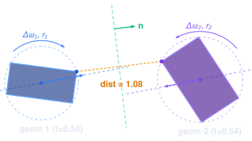
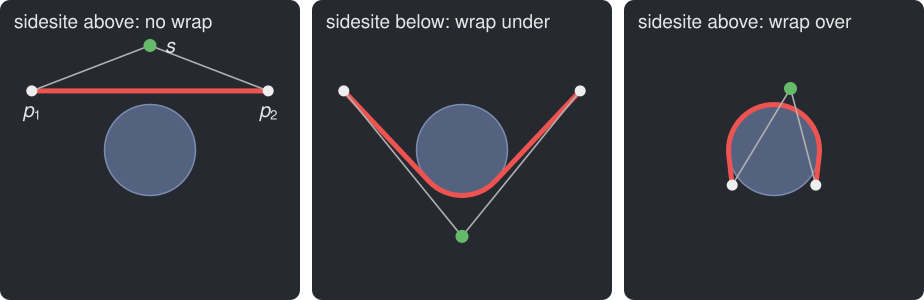
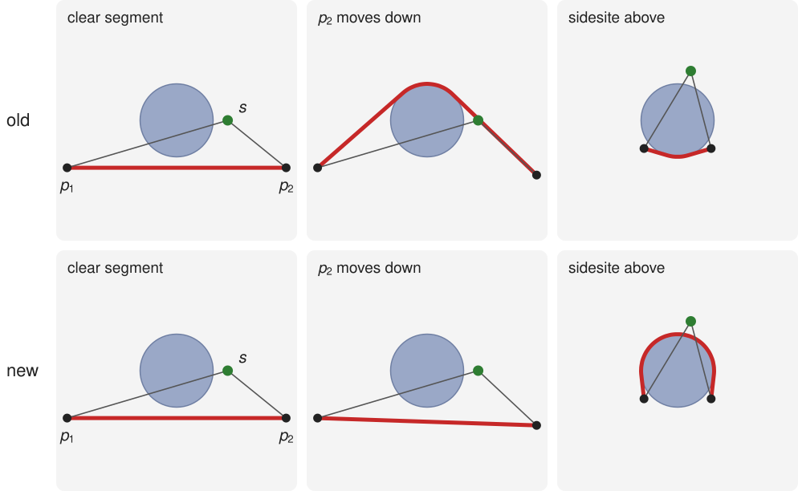
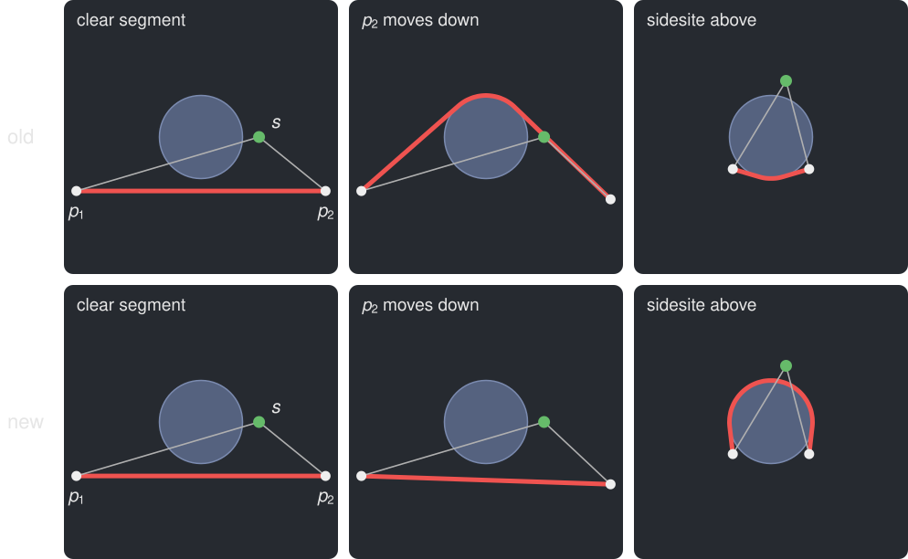
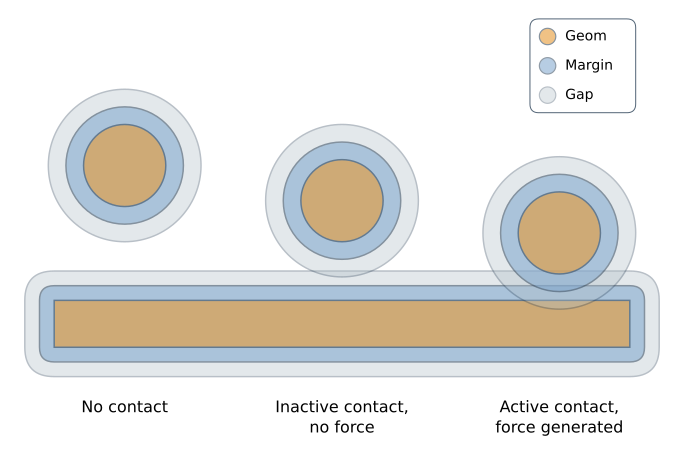
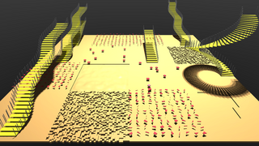
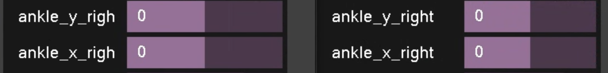
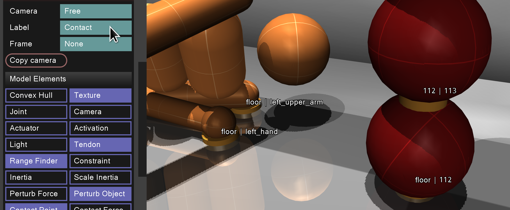

更新日志#
备注
本页由 AI（Claude Sonnet）根据 MuJoCo 官方英文文档（2026-11-16 版）翻译，仅供学习参考；如有出入，以英文原版为准。术语对照见资料包中的 术语表.md 。
版本 4.0.1 (November 11, 2026)#
编译器#
21a076966 添加了 mjs_getInStringVec，用于按索引从 mjStringVec 中读取条目。
Python 绑定#
a937a4f91 在 Windows 上启用了 MuJoCo Studio Web Viewer（
mujoco-studio --gfx=web和mujoco.studio.launch_web），方法是将预编译的浏览器客户端打包进与平台无关的mujoco-studio-wasmwheel 中，并由mujoco-studio自动安装。a937a4f91 Enabled the MuJoCo Studio Web Viewer (mujoco-studio --gfx=webandmujoco.studio.launch_web) on Windows by shipping the precompiled browser client in a platform-independentmujoco-studio-wasmwheel installed automatically bymujoco-studio.
缺陷修复#
9ae9bad01 修复了 4.0.0 中引入的稀疏 Cholesky 分解的一个缺陷：它会把具有不同后代的行合并到同一个超节点中，当约束雅可比矩阵为稀疏时，会给 Newton 求解器提供错误的 Hessian 因子，导致收敛缓慢、加速度错误以及发散（issue #3767）。
9ae9bad01 Fixed a bug in the sparse Cholesky factorization introduced in 4.0.0, which merged rows with different descendants into one supernode and gave the Newton solver a wrong Hessian factor when the constraint Jacobian is sparse, causing slow convergence, wrong accelerations and divergence (issue #3767).144ede984 mj_loadAllPluginLibraries 现在会跳过加载失败的动态库并给出警告，而不是调用 mju_error，因此插件目录中某一个无法加载的库不会再导致 simulate 在启动时中止。在 4.0.0 的 macOS 和 Linux 压缩包中，USD 解码器插件就会出现这种情况，该插件只能从 Python 进程中加载。
144ede984 mj_loadAllPluginLibraries now skips a dynamic library that fails to load with a warning instead of calling mju_error, so one unloadable library in the plugin directory no longer aborts simulate at startup. In the 4.0.0 macOS and Linux archives this happened with the USD decoder plugin, which can only be loaded from a Python process.409f981ab 修复了单次 多接触 中圆柱体边缘碰撞的问题（issue #3748、issue #3752）。
409f981ab Fixed issues in single-shot multicontact for cylinder edge collisions (issue #3748, issue #3752).
版本 4.0.0 (November 6, 2026)#


重要新特性#
89daf8d19 添加了 speculative 启用标志，用于 推测接触，以防止高速运动的凸 geom 在单个时间步长内穿隧通过薄障碍物。右图为两个旋转的盒子之间的一步保守推进。示例请参阅 model/speculative/。
89daf8d19 Added the speculative enable flag for speculative contacts to prevent fast-moving convex geoms from tunneling through thin obstacles within a single timestep. On the right, one step of conservative advancement between two rotating boxes. See model/speculative/ for examples.添加了弹塑性，其带状态的塑性变形存储在
mjData.plastic（mjSTATE_PLASTIC）中：Added elasto-plasticity, with stateful plastic deformation stored inmjData.plastic(mjSTATE_PLASTIC):e140c026f 用于关节弹簧（springyield）和肌腱弹簧（spatial、fixed）的理想弹塑性（左图）。
e140c026f Ideal elasto-plasticity for joint (springyield) and tendon (spatial, fixed) springs (left).0c0f63b3f、c39fe6f02、e3bd72742、7cb32488b 用于二维和三维 柔性体 的连续体弹塑性（yield），其中二维壳具有各自独立的拉伸和弯曲屈服应变，并包含体积-偏量（von Mises \(J_2\)）拉伸和二维壳弯曲的回映射（右图）。
示例请参阅 model/plastic/。
See model/plastic/ for examples.


abaf8d518 将 Python 发行版拆分为
mujoco-core（最小化的绑定和 C 库，仅依赖numpy）、mujoco-studio（Studio 和 Filament 渲染器绑定）以及mujoco（默认包，同时安装前两者）。使用pip从拆分之前的mujoco安装升级时，请先卸载（pip uninstall -y mujoco && pip install mujoco），或者在升级后运行pip install --force-reinstall --no-deps mujoco mujoco-core mujoco-studio，以免pip删除已移至mujoco-core的文件。若要将现有的mujoco安装切换为仅核心包，请运行pip uninstall -y mujoco mujoco-studio && pip install --force-reinstall --no-deps mujoco-core。abaf8d518 Split the Python distribution intomujoco-core(minimal bindings and C library depending only onnumpy),mujoco-studio(Studio and Filament renderer bindings), andmujoco(default package installing both). When upgrading from a pre-splitmujocoinstallation withpip, uninstall first (pip uninstall -y mujoco && pip install mujoco) or runpip install --force-reinstall --no-deps mujoco mujoco-core mujoco-studioafter upgrading sopipdoes not remove files moved tomujoco-core. To switch an existingmujocoinstallation to core-only, runpip uninstall -y mujoco mujoco-studio && pip install --force-reinstall --no-deps mujoco-core.
引擎#
不兼容变更
a65050166 更改了 sidesite 的语义：肌腱现在绕过 geom 的方式，与从第一个端点经过侧向 site 到第二个端点的路径相同（下图中的灰色细线）。形式上，肌腱是在去除该 geom 之后的缠绕平面内，与这条折线同伦的最短路径。
a65050166 Changed the semantics of sidesite: the tendon now goes around the geom the same way as the path from the first endpoint, through the side site, to the second endpoint (thin grey line below). Formally, the tendon is the shortest path homotopic to this polyline in the wrapping plane with the geom removed.

此前使用的是半平面测试，当两端点之间的线段在避开 geom 的同时远离侧向 site 时，可能使肌腱跳到 geom 上，造成肌腱长度的不连续。对于超过 180 度的缠绕，它还可能选错一侧。上排：旧规则；下排：新规则。
Previously, a half-plane test was used, which could make the tendon jump onto the geom, a discontinuity in tendon length, when the segment between the endpoints moved away from the side site while clear of the geom. It could also select the wrong side for wraps longer than 180 degrees. Top row: old rule; bottom row: new rule.

新规则只有一个不连续点：当某个端点越过与侧向 site 相反的射线时，经过侧向 site 的路径绕 geom 的缠绕方式会发生改变，肌腱随即弹开。这可能会改变现有模型的行为。
The new rule has a single discontinuity: when an endpoint crosses the ray opposite the side site, the path through the side site changes its winding around the geom and the tendon snaps off. This can change the behavior of existing models.迁移： 放置侧向 site 时，应使端点在整个运动范围内不会越过这条射线，通常放在缠绕弧的中间附近。例如，双连杆手臂 的侧向 site 已从关节的正下方移到手臂下方 45 度处，这样可以精确复现之前的肌腱长度。
Migration: Place side sites so that the endpoints do not cross this ray over the range of motion, typically near the middle of the wrapped arc. For example, the side sites of the two-link arm were moved from directly below the joints to 45 degrees below the arm, which reproduces the previous tendon lengths exactly.


9a7f240f0
RK4积分器 现在对球关节和自由关节的姿态达到四阶精度。此前，各 Runge-Kutta 阶段的角速度在合并时没有使用 Runge-Kutta-Munthe-Kaas 修正，因此姿态只能以二阶收敛。这会改变使用RK4的含球关节或自由关节的模型的仿真结果。9a7f240f0 TheRK4integrator is now fourth-order accurate for the orientations of ball and free joints. Previously, the angular velocities of the Runge-Kutta stages were combined without the Runge-Kutta-Munthe-Kaas correction, so orientations converged only at second order. This changes the simulation of models with ball or free joints that useRK4.9916cc5f7 在 mjContact 中添加了
surfacevel[3]，用于存储接触坐标系(tangent1, tangent2, spin)中的相对 表面速度（geom[1]减去geom[0]）。当设置了mjModel.flg_surfacevel时，碰撞检测会根据geom_surfacevel填充该字段，外部接触生成器也可以直接写入该字段（如果没有 geom 指定surfacevel，则需设置flg_surfacevel = 1）。接触点可视化现在为每个活动的摩擦接触绘制单个相对切向速度箭头。9916cc5f7 Addedsurfacevel[3]to mjContact, storing the relative surface velocity (geom[1]minusgeom[0]) in the contact frame(tangent1, tangent2, spin). Collision detection populates it fromgeom_surfacevelwhenmjModel.flg_surfacevelis set, and external contact generators can write it directly (settingflg_surfacevel = 1if no geom specifiessurfacevel). Contact-point visualization now draws a single relative tangential velocity arrow per active frictional contact.629feb74b 在 mjData 中添加了
xiquat、geom_xquat和site_xquat，用于存储刚体惯性、geom 和 site 的笛卡尔四元数姿态，与ximat、geom_xmat和site_xmat并列。64af6504f 添加了
mjModel.tendon_type，其取值来自新的 mjtTendon 枚举，用于区分固定肌腱和空间肌腱。此前，类型是由路径的第一个元素是否为关节隐含决定的。
可变形体#
不兼容变更
1d6cc8ff5 移除了
cable插件（plugin/elasticity）和composite元素，它们已被带有 elasticity 的一维 flexcomp 所取代。1d6cc8ff5 Removed thecableplugin (plugin/elasticity) and thecompositeelement, which are superseded by 1D flexcomp with elasticity.迁移：
Migration:count和curve/size/vertex：使用 flexcomp 的dim="1"，配合type="grid"、count和spacing（闭合回路则使用type="circle"），或使用type="direct"配合point。添加<edge equality="true"/>以保持边不可伸长。countandcurve/size/vertex: use flexcompdim="1"withtype="grid",count, andspacing(ortype="circle"for closed loops), ortype="direct"withpoint. Add<edge equality="true"/>to keep edges inextensible.geom 的
size（胶囊体半径）：设置 flexcomp 的radius。对于 geom 的type="box"，设置<elasticity section="box" sectionsize="..."/>。Geomsize(capsule radius): set flexcompradius. For geomtype="box", set<elasticity section="box" sectionsize="..."/>.插件的
bend和twist：设置<elasticity young="..." shear="..."/>。Pluginbendandtwist: set<elasticity young="..." shear="..."/>.根部附着的
initial：initial="none"对应<pin id="0 1"/>（将第一条边的材料坐标系夹紧到父刚体上，并省略<name>_twist_0）；initial="ball"对应<pin id="0"/>（在第一个顶点处使用球形锚点，保持<name>_twist_0自由）；initial="free"对应不使用<pin/>。Root attachmentinitial:initial="none"maps to<pin id="0 1"/>(clamps the first edge’s material frame to the parent body and omits<name>_twist_0);initial="ball"maps to<pin id="0"/>(spherical anchor at the first vertex, keeping<name>_twist_0free);initial="free"maps to no<pin/>.插件的
flat="true"：在qpos0中把杆定义为直的（例如type="grid"），并通过qpos或 关键帧 设置弯曲的初始位姿（直接在point中定义的曲线在qpos0中处于静止状态，对应于flat="false"）。Pluginflat="true": define the rod straight inqpos0(e.g.,type="grid") and set the curved initial pose viaqposor a keyframe (curves defined directly inpointare at rest inqpos0, corresponding toflat="false").插件的
vmax应力着色：不再支持。Pluginvmaxstress coloring: not supported.积分器：隐式积分请使用
integrator="discrete"（或Euler/RK4；一维杆弹性不支持implicit和implicitfast）。Integrator: useintegrator="discrete"for implicit integration (orEuler/RK4;implicitandimplicitfastare not supported for 1D rod elasticity).刚体名称
B_first/B_<i>/B_last：未固定的顶点会创建名为<name>_<i>的刚体（被固定的顶点直接附着在父刚体上），此外还会创建每条边的扭转刚体和关节（参见下一条）。Body namesB_first/B_<i>/B_last: unpinned vertices create bodies<name>_<i>(pinned vertices attach directly to the parent body), plus per-edge twist bodies and joints (see the next entry).
95cf15e58 具有至少两个元素的开链弹性一维 flexcomp 现在会在世界刚体之下，为每条边创建扭转刚体及铰链关节
<name>_twist_0、...、<name>_twist（对于两个点都被固定而夹紧的边，则省略其关节：<pin id="0 1"/>对应省略<name>_twist_0，具有至少三个元素的杆的最后两个点对应省略<name>_twist），并将它们的时间平行参考坐标系和参考扭转存储在mjData.plastic中。这会改变此类模型的nq、nv、nbody、nplastic以及qpos的布局，使在该 flexcomp 之后声明的刚体和关节的索引发生偏移，并改变仿真结果：杆现在可以在表面上滚动，并在夹爪中扭转。方形截面（section box）需要这些关节，因此带有方形截面的原始 柔性体 现在也需要它们，并且其碰撞 radius 被设置为截面的较小半边长（显式指定与之不同的 radius 现在会导致编译错误）。95cf15e58 Open elastic 1D flexcomps with at least two elements now create per-edge twist bodies with hinge joints<name>_twist_0, …,<name>_twistunder the world body (omitting the joint of an edge clamped by pinning both of its points:<name>_twist_0for<pin id="0 1"/>, and<name>_twistfor the last two points of a rod with at least three elements), and store their time-parallel reference frames and reference twists inmjData.plastic. This changesnq,nv,nbody,nplasticand theqposlayout of such models, shifts the indices of bodies and joints declared after the flexcomp, and changes the simulation: rods now roll on surfaces and twist in grippers. Box sections (section box) require these joints, so raw flexes with box sections now need them too, and their collision radius is set to the minor half-size of the section (an explicit radius that differs from it is now a compile error).迁移： 更新关键帧以及所有按编号索引
qpos、qvel或刚体的代码，最好按名称寻址顶点刚体（<name>_<i>）和扭转关节。使用mjSTATE_PLASTIC保存和恢复杆的状态。原始的方形截面柔性体需要按上述命名的铰链关节（参见 elasticity）。Migration: Update keyframes and any code that indexesqpos,qvelor bodies by number, preferably addressing vertex bodies (<name>_<i>) and twist joints by name. Save and restore rod state withmjSTATE_PLASTIC. Raw box-section flexes need hinge joints named as above (see elasticity).7ba52b533 修正了非插值 柔性体（full 和 radial 自由度）以及插值柔性体的弹性常数，它们现在与文档所述的 young、poisson 和 thickness 相符：
7ba52b533 Fixed the elastic constants of non-interpolated flexes (full and radial dofs), which now match young, poisson and thickness as documented, and the interpolated flexes:三维 Saint Venant-Kirchhoff 拉伸使用了两倍的第一 Lamé 参数 \(\lambda\)。
3D Saint Venant-Kirchhoff stretching used twice the first Lamé parameter \(\lambda\).二维拉伸使用了四分之一的剪切模量 \(\mu\) 和二分之一的三维 \(\lambda\)，而不是 \(\mu\) 和平面应力下的 \(\lambda^* = E \nu / (1 - \nu^2)\)。
2D stretching used a quarter of the shear modulus \(\mu\) and half of the 3D \(\lambda\), instead of \(\mu\) and the plane-stress \(\lambda^* = E \nu / (1 - \nu^2)\).二维弯曲使用了 \(\tfrac{3}{4}(1-\nu) D\)，而不是板的弯曲刚度 \(D = E t^3 / (12 (1 - \nu^2))\)。
2D bending used \(\tfrac{3}{4}(1-\nu) D\) instead of the plate bending rigidity \(D = E t^3 / (12 (1 - \nu^2))\).
使用这些柔性体的模型会变得更硬，但泊松比为零的三维模型保持不变。
Models with these flexes become stiffer, except 3D models with zero Poisson’s ratio, which are unchanged.迁移： 若要保持之前的行为，请使用如下参数：
Migration: To keep the previous behavior, use these parameters:三维：\(\nu' = 2\nu / (1 + 2\nu)\) 且 \(E' = E (1 + \nu') / (1 + \nu)\)。
3D: \(\nu' = 2\nu / (1 + 2\nu)\) and \(E' = E (1 + \nu') / (1 + \nu)\).仅二维弯曲（
elastic2d="bend"）：\(E' = \tfrac{3}{4}(1 - \nu) E\)。2D bending only (elastic2d="bend"): \(E' = \tfrac{3}{4}(1 - \nu) E\).二维拉伸（
elastic2d="stretch"或"both"）：\(\nu' = 2\nu\)，对于 \(\nu < 1/4\)（使得 \(\nu' < 1/2\)）是精确的。然后：2D stretching (elastic2d="stretch"or"both"): \(\nu' = 2\nu\), which is exact for \(\nu < 1/4\) (so that \(\nu' < 1/2\)). Then:"stretch"：\(E' = E (1 + 2\nu) / (4 (1 + \nu))\)。"both"：\(t' = t \sqrt{3 (1 - 2\nu)}\) 且 \(E' = E t (1 + 2\nu) / (4 (1 + \nu) t')\)。"both": \(t' = t \sqrt{3 (1 - 2\nu)}\) and \(E' = E t (1 + 2\nu) / (4 (1 + \nu) t')\).
model/flex中的柔性体模型已按此方式重新映射，因此它们的行为保持不变。The flex models inmodel/flexwere remapped in this way, so their behavior is unchanged.c0e6b15fd 一维杆弯曲 elasticity（
dim="1"且young为正）在implicit和implicitfast下不再受支持，与二维和三维柔性体弹性保持一致。c0e6b15fd 1D rod bending elasticity (dim="1"with positiveyoung) is no longer supported underimplicitandimplicitfast, matching 2D and 3D flex elasticity.迁移： 隐式积分请使用
integrator="discrete"，显式积分请使用integrator="Euler"并配合较小的时间步长。Migration: Useintegrator="discrete"for implicit integration, orintegrator="Euler"with a small timestep for explicit integration.c0e6b15fd 柔性体的 边刚度 和 阻尼 在
integrator="discrete"下不再受支持（此前它们是被显式积分，而不是纳入有效度量中）。c0e6b15fd Flex edge stiffness and damping are no longer supported underintegrator="discrete"(where they were integrated explicitly rather than in the effective metric).迁移： 使用 elasticity（或 边等式约束），或者使用
Euler/RK4/implicitfast。b2577a630 当没有活动顶点或节点被 固定 到其父刚体或祖先刚体上，而该刚体带有关节时，未固定的 flexcomp 模型（使用 full、trilinear 或 quadratic 自由度）现在会编译失败。
b2577a630 Unpinned flexcomp models (with full, trilinear, or quadratic dofs) now fail to compile if their parent or ancestor body has joints when no active vertices or nodes are pinned to it.迁移： 移除未固定柔性体的父刚体/祖先刚体上的关节，或者使用 pin 将至少一个顶点/节点固定到父刚体上。
Migration: Remove joints from the parent/ancestor body of an unpinned flex, or pin at least one vertex/node to the parent body with pin.145cdc2be 移除了
flexvert等式约束（flexcomp 中的<equality><flexvert>和<edge equality="vert"/>），以及相关的 mjModel 字段（nJfv、flex_vertedgeadr、flex_vertedgenum、flex_vertedge、flex_vertmetric、flexvert_J_rownnz、flexvert_J_rowadr、flexvert_J_colind）和 mjData 字段（flexvert_length、flexvert_J）。mjEQ_FLEXVERT作为不受支持的占位符保留在 mjtEq 中，使用它会导致报错。145cdc2be Removedflexvertequality constraints (<equality><flexvert>and<edge equality="vert"/>in flexcomp), along with the associated mjModel fields (nJfv,flex_vertedgeadr,flex_vertedgenum,flex_vertedge,flex_vertmetric,flexvert_J_rownnz,flexvert_J_rowadr,flexvert_J_colind) and mjData fields (flexvert_length,flexvert_J).mjEQ_FLEXVERTis retained as an unsupported placeholder in mjtEq and causes an error if used.迁移： 对于二维布料模型，请使用带
integrator="discrete"的连续体 elasticity，或使用 边等式约束。Migration: Use continuum elasticity withintegrator="discrete"or edge equality for 2D cloth models.6f28d4adf 柔性体现在支持逐元素的视觉材质：
mjModel.flex_matid现在是(nflexelem x 1)而不是(nflex x 1)，flex 和 flexcomp 上的material属性（mjsFlex.material）现在是mjStringVec而不是mjString（既可以接受广播到所有元素的单个材质名称，也可以接受每个元素各一个材质名称）。6f28d4adf Flexes now support per-element visual materials:mjModel.flex_matidis now(nflexelem x 1)instead of(nflex x 1), and thematerialattribute on flex and flexcomp (mjsFlex.material) is nowmjStringVecrather thanmjString(accepting either a single material name broadcast to all elements or one material name per element).迁移： 请按元素
m->flex_elemadr[f] + e而不是按柔性体f来索引mjModel.flex_matid。在 C 中，请使用mjs_setStringVec（或mjs_appendString）而不是mjs_setString来设置mjsFlex.material；在 Python 中，请赋值材质名称列表（例如flex.material = ['mat']）。Migration: IndexmjModel.flex_matidby elementm->flex_elemadr[f] + erather than by flexf. In C, setmjsFlex.materialwithmjs_setStringVec(ormjs_appendString) instead ofmjs_setString; in Python, assign a list of material names (e.g.flex.material = ['mat']).7ba5d6732
mjModel.flex_bending中一维柔性体的记录从 4 个值增加到 10 个值，用于存储弯曲的参考构型以及成对的相邻弯曲顶点。此前，每条记录为[v_prev, v, v_next, k]。7ba5d6732 Records of 1D flexes inmjModel.flex_bendinggrow from 4 to 10 values, to store curved reference configurations and pairs of adjacent bent vertices. Previously, each record was[v_prev, v, v_next, k].迁移： 请以步长 10 读取一维记录。第四个值为负的记录是单个铰链
[v0, v1, v2, -1, k1, k2 - k1, |kb0|, jnt, kt, b]：主弯曲刚度k1 <= k2、边(v1, v2)的扭转铰链关节jnt（若没有则为 -1；第一条边的关节（如果存在）是第一条记录的关节编号减一）、扭转刚度kt，以及方形截面的带符号较小半边长b（圆形截面为 0）。否则它是一个铰链对[v0, v1, v2, v3, w0, w1, om0[4]]。Migration: Read 1D records with stride 10. A record whose fourth value is negative is a single hinge[v0, v1, v2, -1, k1, k2 - k1, |kb0|, jnt, kt, b]: principal bending stiffnessesk1 <= k2, the twist hinge jointjntof the edge(v1, v2)(-1 if none; the joint of the first edge, when present, is that of the first record minus one), torsional stiffnesskt, and the signed minor half-sizebof a box section (0 for circular sections). Otherwise it is a hinge pair[v0, v1, v2, v3, w0, w1, om0[4]].
8892bf44b、0d8a109de、f9a589361 在 flex 模型上，稀疏
Newton（求解器）快了 1.4-3 倍，这得益于减少填充的自由度排序、增量式的活动集 Hessian 更新、直接的 椭圆锥 折叠，以及用于二维discrete积分器 光滑求解的预排序稀疏 Cholesky。model/flex中的大多数柔性体模型现在使用solver="Newton"，并且实验性的 ipc 标志除solver="CG"外，现在也支持solver="Newton"。8892bf44b, 0d8a109de, f9a589361 SparseNewton(solver) is 1.4-3x faster on flex models, using fill-reducing DOF ordering, incremental active-set Hessian updates, direct elliptic cone folding, and pre-ordered sparse Cholesky for the 2Ddiscreteintegrator smooth solve. Most flex models inmodel/flexnow usesolver="Newton", and the experimental ipc flag now supportssolver="Newton"in addition tosolver="CG".57d9b960f 采用
discrete积分器 的solver="Newton"现在支持附着在铰接刚体上的 flex 顶点和节点（标准的和插值的均可）。此前，这类模型需要使用solver="CG"。model/flex/gripper_trilinear.xml夹爪现在使用solver="Newton"。MuJoCo Warp 对此类模型仍然要求solver="CG"。57d9b960fsolver="Newton"with thediscreteintegrator now supports flex vertices and nodes (both standard and interpolated) attached to articulated bodies. Previously, such models requiredsolver="CG". Themodel/flex/gripper_trilinear.xmlgripper now usessolver="Newton". MuJoCo Warp still requiressolver="CG"for such models.7ba5d6732 一维杆弯曲 elasticity 现在支持弯曲的参考构型和扭转刚度：在
qpos0中弯曲超过 \(10^{-4}\) rad 的顶点会保持其参考曲率和二面扭转角，因此环、圆弧和螺旋弹簧等杆在其编译后的形状下处于静止状态。此前，此类模型会编译失败。新的 shear 属性可以选择性地覆盖用于扭转的剪切模量。开链杆带有每条边的扭转关节（参见上面的不兼容变更），并具有每条边的极惯性、不依赖坐标系的相对 Rayleigh 扭转阻尼、时间平行参考坐标系，以及摩擦接触杠杆臂耦合。方形截面另外使用各向异性的主刚度，并配合均衡的阻尼比（弱轴上为 \(\sqrt{k_1 k_2}\)），以及在 DER 材料坐标系中用于渲染和碰撞检测的有向盒。请参阅 文档。7ba5d6732 1D rod bending elasticity now supports curved reference configurations and torsional stiffness: vertices bent by more than \(10^{-4}\) rad inqpos0keep their reference curvature and dihedral twist angle, so that rods such as rings, arcs, and coil springs are at rest in their compiled shape. Previously, such models failed to compile. The new shear attribute optionally overrides the shear modulus used for torsion. Open rods carry per-edge twist joints (see the breaking change above) with per-edge polar inertia, frame-indifferent relative Rayleigh torsional damping, time-parallel reference frames, and frictional contact lever-arm coupling. Box sections additionally use anisotropic principal stiffnesses with equalized damping ratio (\(\sqrt{k_1 k_2}\) on the weak axis) and an oriented box in the DER material frame for rendering and collision detection. See the documentation.9ca6b7171 体插值柔性体（trilinear 或 quadratic 自由度，且
elastic2d="none"）现在使用有限单元法（Finite Cell Method，FCM）的子单元积分，在网格体积上积分单元刚度并集总节点质量，而不是把每个非空的网格单元都当作完整的立方体。这会改变网格未填满其包围盒的体插值柔性体的刚度和节点质量分布，以及多单元 trilinear 柔性体的节点质量分布。9ca6b7171 Volumetric interpolated flexes (trilinear or quadratic dofs withelastic2d="none") now integrate cell stiffness and lump nodal masses over the mesh volume using Finite Cell Method (FCM) subcell quadrature instead of treating every non-empty grid cell as a full cube. This changes the stiffness and nodal mass distribution of volumetric interpolated flexes whose mesh does not fill its bounding box, as well as the nodal mass distribution of multi-cell trilinear flexes.f9f3ee653 与 flex 元素的接触现在使用元素上距接触最近的点的重心坐标，将接触分配到元素的各顶点上。此前，顶点权重与到接触点的距离成反比，这并不能对接触点进行插值：接触雅可比矩阵测量的是另一个材料点的速度，并且接触力会对元素施加虚假的力矩。这会改变带有柔性体接触的模型的仿真结果。
f9f3ee653 Contacts with flex elements now distribute the contact to the element vertices with the barycentric coordinates of the point on the element closest to the contact. Previously the vertex weights were inversely proportional to the distances from the contact, which do not interpolate the contact point: the contact Jacobian measured the velocity of a different material point, and the contact force exerted a spurious torque on the element. This changes the simulation of models with flex contacts.51572eab0 柔性体的 边阻尼 现在在
implicit和implicitfast下被显式积分（此前它还会对刚体平动产生阻尼）。51572eab0 Flex edge damping is now integrated explicitly underimplicitandimplicitfast(previously it also damped rigid translation).9fb4eca48 修复了二次柔性体的接触雅可比矩阵，此前它会丢弃基函数权重为负的节点。
9fb4eca48 Fixed contact Jacobians of quadratic flexes, which dropped nodes with negative basis weights.b16e09838 球体和胶囊体与三维 flex 元素的接触现在通过解析方式计算，而不是使用通用的凸体流水线。
b16e09838 Sphere and capsule contacts with 3D flex elements are now computed analytically instead of the general convex pipeline.3bbf510d4 改进了 nativeccd 凸体碰撞检测和 multiccd 接触生成的数值稳定性。这可能会略微改变具有凸体或网格碰撞的模型的接触。
编译器#
不兼容变更
00057bcef 通过不同路径 include 同一文件的模型此前可以加载，现在会被拒绝，并报错
already included。00057bcef Models that include the same file through different paths, which previously loaded, are now rejected withalready included.迁移： 移除引用同一文件的多余
<include>元素。Migration: Remove redundant<include>elements referencing the same file.编译器现在会拒绝以下此前可以加载的无效模型：
The compiler now rejects the following invalid models, which previously loaded:a4c699040 引用了无效相机或 分辨率 非正的相机的 camprojection 或附着在相机上的 rangefinder 传感器。
a4c699040 camprojection or camera-attached rangefinder sensors referencing an invalid camera or a camera with non-positive resolution.881e53e2e 边数少于 3 或
radius超出[0, 1]范围的 mjs_makeMeshmjMESH_BUILTIN_CONE调用。
迁移： 确保高度场的
nrow >= 2且ncol >= 2，固定肌腱缠绕互不相同的slide或hinge关节且 armature 非负，滑轮除数为正，被camprojection或rangefinder传感器引用的相机分辨率为正，蒙皮面索引位于[0, nvert)内，并且圆锥网格至少有 3 条边且半径位于[0, 1]内。Migration: Ensure height fields havenrow >= 2andncol >= 2, fixed tendons wrap distinctslideorhingejoints with non-negative armature, pulley divisors are positive, cameras referenced bycamprojectionorrangefindersensors have positive resolution, skin face indices are in[0, nvert), and cone meshes have at least 3 edges and a radius in[0, 1].
432376a59 当 boundinertia 为正时，非正定的 fullinertia 以及由 geom 推断出的非正定惯性现在会受其限定。此前它们会导致编译错误。
432376a59 fullinertia and inertias inferred from geoms which are not positive definite are now bounded by boundinertia when it is positive. Previously they gave a compile error.a4c699040 mj_encode 现在通过
model/vnd.mujoco.mjb内容类型，支持为 mjSpec 输出二进制 MJB。
渲染#
1edd2c67d 为 geom 添加了 castshadow 属性（
mjsGeom.castshadow、mjModel.geom_castshadow、mjvGeom.castshadow；默认为true），可在经典 OpenGL 和 Filament 渲染器中按 geom 禁用投射阴影，并添加了 mjrf_setRenderableCastShadow（Python 中为mjrf.Renderable.set_cast_shadow），用于动态切换 Filament 可渲染对象的阴影投射。1edd2c67d Added a castshadow attribute to geom (mjsGeom.castshadow,mjModel.geom_castshadow,mjvGeom.castshadow; defaulttrue) to disable shadow casting per geom in both the classic OpenGL and Filament renderers, and mjrf_setRenderableCastShadow (mjrf.Renderable.set_cast_shadowin Python) to toggle shadow casting of Filament renderables dynamically.c831b97d6 为 Filament 渲染添加了地平线雾霾和天空盒可见性支持：无限平面以相机正下方为中心，并根据 visual/map/haze 和 visual/rgba/haze 与天空盒地平线平滑融合，可通过 mjrfRenderRequest 上的
haze和skybox按视图切换（mjRND_HAZE 和 mjRND_SKYBOX）。c831b97d6 Added horizon haze and skybox visibility support to Filament rendering: infinite planes are centered beneath the camera and blend smoothly into the skybox horizon according to visual/map/haze and visual/rgba/haze, toggled per view viahazeandskyboxon mjrfRenderRequest (mjRND_HAZE and mjRND_SKYBOX).939bc882e 当没有任何光源指定 intensity 时，Filament 渲染中赋予每个光源的备用强度现在会按其漫反射颜色的亮度进行缩放，该亮度是从光源颜色中分解出来的。光源看起来保持不变，但现在由最亮的平行光投射阴影，而不是由可能在不同次运行之间变化的任意一个光源投射。
939bc882e When no light specifies an intensity, the fallback intensity given to each light in Filament rendering is now scaled by the brightness of its diffuse color, which is factored out of the light’s color. Lights look the same, but the brightest directional light now casts the shadows, rather than an arbitrary one that could differ between runs.0fc0b44d6 添加了 filament.material.base_color_type 标志，用于配置基础颜色材质参数的解释方式。
0fc0b44d6 Added filament.material.base_color_type flag for configuring how the base color material parameter is interpreted.e19117325 添加了 mjrf_flush（Python 中为
mjrf.Context.flush），用于将待处理的操作刷新到渲染后端，并调用所有已完成的回调。e19117325 Added mjrf_flush (mjrf.Context.flushin Python) to flush pending operations to the rendering backend and invoke any completed callbacks.93033f5ba 添加了 mjRND_POST_PROCESSING 渲染标志。
93033f5ba Added mjRND_POST_PROCESSING rendering flag.e66b53380 允许将 headlight.active 设置为 "false"、"true" 或 "auto"，同时继续支持整数值（0=false，1=true，2=auto）。将默认值由 "true" 改为 "auto"。
e66b53380 Allow headlight.active to be set to “false”, “true”, or “auto” while continuing to support integer values (0=false, 1=true, 2=auto). Change the default to “auto” instead of “true”.
Python 绑定#
68390c316 移除了对 Python 3.10 的支持，因为它已被 上游弃用。
68390c316 Removed support for Python 3.10, now that it’s deprecated upstream.a1b9fce44 将 MuJoCo Sphinx 手册（
doc/**/*.rst）和智能体技能（doc/skills/**/*.md）打包到mujoco包内的mujoco/doc/下。a1b9fce44 Bundled the MuJoCo Sphinx manual (doc/**/*.rst) and agent skills (doc/skills/**/*.md) inside themujocopackage undermujoco/doc/.
示例#
不兼容变更
006586d30 移除了
sample/record.cc；现在 sample/render.cc 通过--duration和--fps，在 Filament 和经典 OpenGL 两种后端上都支持多帧原始 RGB24 视频录制。006586d30 Removedsample/record.cc; multi-frame raw RGB24 video recording is now supported by sample/render.cc across both the Filament and classic OpenGL backends via--durationand--fps.迁移： 将
record model.xml T F out.rgb 0替换为render model.xml out.rgb --duration=T --fps=F（或者将-作为输出路径，把自上而下的 RGB24 帧直接通过管道传给ffmpeg；不再需要vflip）。Migration: Replacerecord model.xml T F out.rgb 0withrender model.xml out.rgb --duration=T --fps=F(or pass-as the output path to pipe top-down RGB24 frames directly toffmpeg;vflipis no longer needed).
模型#
9647e0290 添加了六个 弹塑性 示例模型，每个模型都把弹性参照物与对应的塑性模型并排放置：关节和肌腱弹簧、二维壳以及三维连续体。
9647e0290 Added six elasto-plasticity example models, each placing an elastic reference next to a plastic counterpart: joint and tendon springs, 2D shells and 3D continua.89daf8d19 添加了 推测接触 示例模型：薄板组成的牛顿摆、相互咬合的链条，以及被铰接拨片击打的球。
89daf8d19 Added speculative contacts example models: a Newton’s cradle of thin plates, an interlocking chain, and a ball struck by a hinged flipper.
文档#
74ad32d20 新增了 MuJoCo Studio 的文档，涵盖 Web 和 原生 查看器、架构，以及 Python 和 C++ 开发。
74ad32d20 Added documentation for MuJoCo Studio, covering web and native viewers, architecture, and Python and C++ development.0f1092ebb 在建模章节中新增了 模型调优 指南，涵盖保真度与速度之间的权衡、调优默认值、按优先级排序的 全局 和 模型级 参数、可变形体，以及 系统辨识，同时新增了 mujoco.sysid 的模块文档。
0f1092ebb Added a Model tuning guide to the Modeling chapter—covering the fidelity–speed trade-off, tuning defaults, priority-ordered global and model-level parameters, deformables, and system identification—along with module documentation for mujoco.sysid.
缺陷修复#
fdf141238 静态刚体（body）和 mocap 刚体上的 accelerometer 和 framelinacc 传感器（sensor），以及 mj_objectAcceleration，现在会报告重力固有加速度，就像处于静止状态的动态刚体一样。此前它们返回零，这是 3.3.7 中引入的一个回归问题。
fdf141238 accelerometer and framelinacc sensors and mj_objectAcceleration on static and mocap bodies now report the gravitational proper acceleration, like a dynamic body at rest. Previously they returned zero, a regression introduced in 3.3.7.c4137ef7c, aeb871ba1 因关节或肌腱执行器力限制（joint 和 tendon 的 actuatorfrcrange）而饱和的执行器（actuator），不再贡献隐式执行器导数，从而改变了
implicit、implicitfast和discrete下的积分行为。由于饱和的执行器不再贡献隐式阻尼，具有轻质连杆且没有电枢惯量的模型可能需要设置关节 armature，或使用更小的时间步长。c4137ef7c, aeb871ba1 Actuators saturated by joint or tendon actuator force limits (joint and tendon actuatorfrcrange) no longer contribute implicit actuator derivatives, changing integration underimplicit,implicitfast, anddiscrete. Because saturated actuators no longer contribute implicit damping, models with light links and no armature may need joint armature or a smaller timestep.aaf2abaa7, 1b46a496e 修复了以下位置的 休眠 过滤缺陷：历史传感器（nsample、delay、interval）、mj_energyPos、柔性体（flex）被动力、肌腱（tendon）限位和摩擦损耗约束、双树肌腱的 电枢惯量 和偏置、mj_subtreeVel，以及调用方提供的 mj_rne 缓冲区。
aaf2abaa7, 1b46a496e Fixed sleep filtering bugs in history sensors (nsample, delay, interval), mj_energyPos, flex passive forces, tendon limit and frictionloss constraints, two-tree tendon armature and bias, mj_subtreeVel, and caller-supplied mj_rne buffers.13fb7844e mj_setConst 现在会唤醒所有处于 休眠 状态的树，因为它会在
qpos0和qpos_spring处重新计算这些树的运动学。此前它们缓存的位姿可能停留在qpos_spring。此外，它也不再覆盖 mjData 中的cam_xpos、cam_xmat、light_xpos和light_xdir，这些覆盖曾使带有跟踪或目标指向功能的静态相机和灯光停留在固定模式的位姿上。13fb7844e mj_setConst now wakes all sleeping trees, since it recomputes their kinematics atqpos0andqpos_spring. Previously their cached poses could be left atqpos_spring. It also no longer overwritescam_xpos,cam_xmat,light_xposandlight_xdirin mjData, which left static cameras and lights with tracking or targeting at their fixed-mode poses.432376a59 使用未定义的
mjsPair.solref创建的接触对（contact pair），现在当两个 geom 的solref均为正时，会使用solmix对二者的solref进行混合，与并非由接触对定义的接触一致。此前它们总是取逐元素的最小值。432376a59 Contact pairs created with an undefinedmjsPair.solrefnow mix thesolrefof their geoms usingsolmixwhen both are positive, like contacts not defined by pairs. Previously they always took the element-wise minimum.18d65f4e0, ea6aa8214 Filament 深度和分割渲染不再应用后处理（色调映射、抖动），后处理曾破坏深度值和分割 ID 颜色；透视深度渲染现在使用有限的 zfar 平面进行投影，而不是 Filament 的无限远平面，从而与正交深度和经典渲染器保持一致；并且
mjr_兼容 API 现在会在 mjr_readPixels 中遵循 mjrContext 上的readDepthMap（mjtDepthMap），并像 mjRND_IDCOLOR 一样按segid + 1为 geom 着色，因此segid为 0 的 geom 不再被渲染为背景。18d65f4e0, ea6aa8214 Filament depth and segmentation renders no longer apply post-processing (tone mapping, dithering), which corrupted depth values and segment ID colors; perspective depth renders now project with the finite zfar plane instead of Filament’s infinite far plane, matching orthographic depth and the classic renderer; and themjr_compatibility API now respectsreadDepthMap(mjtDepthMap) on mjrContext in mjr_readPixels and colors geoms bysegid + 1like mjRND_IDCOLOR so a geom withsegid0 no longer renders as background.9b19fd07c, ef34acbee Windows 上的文件路径现在按 UTF-8 解释，而不是当前活动的 ANSI 代码页，从而修复了路径包含非 ASCII UTF-8 字符时的以下问题：文件的加载与保存、插件库的发现与加载（mj_loadPluginLibrary、mj_loadAllPluginLibraries），以及 simulate 可执行文件目录的查找（issue #3139）。由 @mar-yan24 贡献。
9b19fd07c, ef34acbee File paths on Windows are now interpreted as UTF-8 rather than the active ANSI code page, fixing loading and saving files, plugin library discovery and loading (mj_loadPluginLibrary, mj_loadAllPluginLibraries), and simulate executable directory lookup when paths contain non-ASCII UTF-8 characters (issue #3139). Contribution by @mar-yan24.a5ff8f6c7 修复了 dcmotor 的参数处理：当
input="none"时允许 motorconst 为零；拒绝负常数（例如motorconst="-a b"现在会被拒绝，而不是悄悄地使用K = b）；当给出不一致的 thermal 三元组时替换电容；当编写了 saturation 时清除继承的 forcerange；让为零的saturation或inductance清除类默认值；并在编译时验证 actdim。a5ff8f6c7 Fixed dcmotor parameter handling: allow zero motorconst forinput="none", reject negative constants (e.g.motorconst="-a b"is now rejected instead of silently usingK = b), replace capacitance when an inconsistent thermal triple is given, clear inherited forcerange when saturation is authored, let zerosaturationorinductanceclear class defaults, and validate actdim at compile time.8694cc9ce 改进了球体和圆柱体 空间肌腱 geom 绕线在绕线起始处的数值稳定性。感谢 @M-Colley 在 MJWarp 的 issue 1772 中报告并分析该问题。
b6192732b 对于非单位射线向量，mj_ray 现在会将 SDF 命中距离按
1 / ||vec||缩放，并且mju_rayTriangle会拒绝位于射线起点之后的三角形交点。00c19f04b mj_resetData、mj_copyData 和 mj_recompile 现在会保留目标 mjData 的线程池，而不是将其丢弃并造成泄漏。
00c19f04b mj_resetData, mj_copyData, and mj_recompile now preserve the destination mjData thread pool instead of dropping and leaking it.a206daa42
mju_mat2Rot现在会对输入的四元数（quaternion）进行归一化，并能逃离不使 \(\operatorname{tr}(R^\top M)\) 最大化的 180 度驻点（鞍点和极小值点）。a206daa42mju_mat2Rotnow normalizes the input quaternion and escapes 180-degree stationary points (saddles and minima) that do not maximize \(\operatorname{tr}(R^\top M)\).afa16414c 修复了 2D flex 弯曲（elastic2d 为 bend 或 both）的弯曲参考项的余切权重和长度尺度，使得面外弯曲力在弯曲的静止构型处消失，并随模型尺寸一致地缩放。
a4c699040 修复了编辑或复制 mjSpec 时的若干缺陷：
mjs_delete（Python 中为
MjSpec.delete）现在会从类查找映射中移除已删除的默认类（default class），而不是留下悬空指针。mjs_delete (MjSpec.deletein Python) now removes deleted default classes from the class lookup map instead of leaving dangling pointers.mj_copyBack（Python 中为
MjSpec.copy_back）会保留材质的metallic、roughness和texuniform属性。mj_copyBack (MjSpec.copy_backin Python) preserves materialmetallic,roughness, andtexuniformattributes.mjs_findChild 不再将非世界刚体与其自身匹配。
mjs_findChild no longer matches a non-world body against itself.mjs_setToMuscle 接受为
NULL的timeconst和range指针。
00057bcef 修复了 MJCF XML 加载与保存中的若干缺陷：
00057bcef Fixed several MJCF XML loading and saving bugs:include 不再在嵌套路径或相对路径上重复添加模型目录前缀。
include no longer double-prefixes the model directory on nested or relative paths.加载 MJCF 时，现在会将外层 frame 的变换应用于 flexcomp，并允许执行器快捷方式上显式指定的 range 或 inheritrange 属性覆盖相冲突的默认值。
Loading MJCF now applies enclosing frame transforms to flexcomp, and allows explicit range or inheritrange attributes on actuator shortcuts to override conflicting defaults.default/tendon 现在接受 armature、actuatorfrclimited 和 actuatorfrcrange；这些属性此前在保存 XML 时会被写出，但重新加载时却无法通过 schema 验证。
default/tendon now accepts armature, actuatorfrclimited, and actuatorfrcrange, which were previously emitted when saving XML and then failed schema validation on reload.保存 MJCF（mj_saveLastXML、mj_saveXML、mj_saveXMLString）时，现在会保留 texture 的 nchannel，并将写出的 gridlayout 限制在
gridsize范围内（而加载时，当编写的gridsize与继承的默认值不同时，会重置gridlayout）；会将材质的 layer 纹理、相机的 sensorsize 以及灯光的 texture 与默认类进行比较；并会写出由插件支持的网格上的所有属性，以及插件传感器上的 reftype/refname。Saving MJCF (mj_saveLastXML, mj_saveXML, mj_saveXMLString) now preserves texture nchannel and clamps emitted gridlayout togridsize(while loading resetsgridlayoutwhen an authoredgridsizediffers from the inherited default), compares material layer textures, camera sensorsize, and light texture against default classes, and writes all attributes on plugin-backed meshes and reftype/refname on plugin sensors.
881e53e2e 使用镜像 scale 的旧版
.msh网格不再重复翻转面的绕向（这曾导致面反向）；没有顶点法线的.msh文件在重新编译时，也不再填充空的面法线或拒绝自定义法线。
版本 3.17.0 (October 22, 2026)#
重要新特性#
c00ed8153 在
mujoco/mjbatch.h中新增了 批处理 API（Python 中为 mujoco.batch）：同一模型的多个仿真在其自有的线程池上步进，每个仿真都以积分状态的形式保存，并在每次调用时加载到一个mjData中，因此内存随线程数而不是仿真数缩放，且结果在任意线程数下都与普通循环按位完全一致。它支持每个仿真独立的模型和选项字段或调用方自己的模型、步进之后的状态观测、记录的轨迹、持久仿真（休眠所必需），以及任意的逐仿真函数。其设计参考了 @kevinzakka 的 mjbatch。c00ed8153 Added a batch API inmujoco/mjbatch.h(in Python as mujoco.batch): many simulations of one model stepped on a thread pool of its own, each held as its integration state and loaded into anmjDatafor each call, so memory scales with threads and results are bit-identical to a plain loop at any thread count. It supports per-simulation model and option fields or models of the caller’s, observations of the state after a step, recorded trajectories, persistent simulations (required for sleep), and arbitrary per-simulation functions. Follows the design of mjbatch by @kevinzakka.
引擎#
柔性体（flex）改进：
Flex improvements:94483e166 为 1D flex 新增了弯曲 弹性，使用无扭转的各向同性离散弹性杆模型。截面由新的 section 属性选择：可以是 flex 半径的圆形，或是半尺寸为 sectionsize 的矩形，后者使用其弱轴的刚度（stiffness）。它由为正的 young 模量启用，要求参考构型（reference configuration）为直线（弯曲的初始位姿可以通过
qpos或关键帧设置），与边等式约束兼容，并由 discrete 积分器（integrator）隐式积分。此前 1D flex 会忽略young：现在设置了它的现有模型会发生弯曲，并且在截面退化（使用默认圆形截面而半径为零）、某个顶点连接零长度的边，或杆不是直线时编译失败。94483e166 Added bending elasticity for 1D flexes, using a twist-free isotropic discrete elastic rod model. The cross-section is selected with the new section attribute: a circle of the flex radius, or a box with half-sizes sectionsize that uses the stiffness of its weak axis. It is enabled by a positive young modulus, requires a straight reference configuration (curved initial poses can be set withqposor keyframes), is compatible with edge equality constraints, and is integrated implicitly by the discrete integrator. Previouslyyoungwas ignored for 1D flexes: existing models that set it now bend, and fail to compile if the cross-section is degenerate (zero radius with the default circle section), if a vertex joins a zero-length edge, or if the rod is not straight.36d0df9a5, 897e3fcb1 插值 flex（trilinear 或 quadratic 的 dofs）现在支持 自碰撞，并会排除位于同一单元格或相邻单元格内的元素。
36d0df9a5, 897e3fcb1 Interpolated flexes (trilinear or quadratic dofs) now support self-collision, excluding elements in the same or neighboring cells.39dd10f2d flex 模型默认的 arena 内存 现在小得多，其大小由 flex 网格拓扑而不是
nv^2确定。如果 Newton 求解器耗尽了 arena 内存，它会回退到 CG 并给出警告。
mj_setConst 现在只计算由 mjModel 其他字段派生出的量，而 spec 级别的约定则仅由编译器解析：
mj_setConst now computes only quantities derived from other fields of mjModel, while the compiler alone resolves spec-level conventions:55c1b585a, d6d41f324 由 dampratio 得出的位置执行器阻尼、由
(-1, -1)得出的肌腱弹簧长度，以及模型统计量，现在仅在编译时解析，而不再由 mj_setConst 解析。编辑已编译的模型时请直接设置模型字段（mj_copyBack 现在会将肌腱弹簧长度复制回 spec）。55c1b585a, d6d41f324 The damping of position actuators from dampratio, the spring length of tendons from(-1, -1), and model statistics are now resolved only at compile time, not by mj_setConst. Set the model fields directly when editing a compiled model (mj_copyBack now copies tendon spring lengths back to the spec).c8362756d 约束求解器（constraint solver）现在按当前惯性矩阵（模型的或 island 的）的迹来缩放其终止判据，而不是使用
mjModel.stat.meaninertia。使用 PGS、禁用 noslip 或禁用 island 求解的模型，可能会在略有不同的迭代次数处停止。meaninertia 属性已被弃用，现在会产生编译警告；移除它即可完成迁移。c8362756d Constraint solvers now scale their termination criteria by the trace of the current inertia matrix (of the model or island) instead ofmjModel.stat.meaninertia. Models solved with PGS, noslip or islands disabled can stop at slightly different iterations. The meaninertia attribute is deprecated and now emits a compile warning; remove it to migrate.abddec5b9 对于未指定 relpose 的基于刚体的 weld 约束，当模型在编译后被修改时，
qpos0中的相对位姿现在会由 mj_setConst 重新计算（与基于刚体的connect约束中第二个刚体的 anchor 相匹配）。编译器会用非零的eq_data[11]标记这类 weld，并且 mjNEQDATA 从 11 增加到了 12。abddec5b9 For body-based weld constraints without a specified relpose, the relative pose inqpos0is now recomputed by mj_setConst when the model is modified after compilation (matching the second body’s anchor in body-basedconnectconstraints). The compiler marks such welds with a nonzeroeq_data[11], and mjNEQDATA increased from 11 to 12.破坏性 ABI 变更
Breaking ABI changesmjNEQDATA 从 11 增加到了 12，并且 mj_setConst 会覆盖在编译时没有
relpose的基于刚体的 weld 的eq_data[3:10]。若要直接设置这类 weld 的相对位姿，请在调用 mj_setConst 之前将eq_data[11]清零。mjNEQDATA increased from 11 to 12, and mj_setConst overwriteseq_data[3:10]of body-based welds that had norelposeat compile time. Zeroeq_data[11]before calling mj_setConst to set the relative pose of such a weld directly.865316f19 在
mjxmacro.h中新增了MJSETCONST_ARRAYS和MJSETCONST_SCALARS，列出 mj_setConst 各阶段所读写的 mjModel 数组和标量。865316f19 AddedMJSETCONST_ARRAYSandMJSETCONST_SCALARSinmjxmacro.h, listing the mjModel arrays and scalars read and written by each phase of mj_setConst.
7394a8672 mju_boxQP 现在使用 mju_cholUpdate 增量更新其 Cholesky 因子，使冷启动求解快 1.4-1.6 倍，热启动（warm start）求解快 1.9-2.9 倍。
7394a8672 mju_boxQP now updates its Cholesky factor incrementally with mju_cholUpdate, making cold-started solves 1.4-1.6x faster and warm-started solves 1.9-2.9x faster.aa0f88e77 标记为 sleep="init" 但无法进入休眠的树，现在会引发警告而不是错误，并以唤醒状态启动。详情请参见 休眠。
aa0f88e77 Trees marked sleep=”init” which cannot be put to sleep now cause a warning rather than an error, and start awake. See Sleeping for details.
编译器#
破坏性 API 变更
aad2e2982 mjs_fuseStatic 和 mjs_discardVisual 现在返回被融合的刚体数或被丢弃的元素数，出错时返回 -1。此前它们成功时返回 0，因此调用方无法判断 spec 是否发生了变化。在 Python 中，
MjSpec.fuse_static和MjSpec.discard_visual返回同样的数值，而不是None。aad2e2982 mjs_fuseStatic and mjs_discardVisual now return the number of bodies fused or elements discarded, and -1 on error. Previously they returned 0 on success, so a caller could not tell whether the spec changed. In Python,MjSpec.fuse_staticandMjSpec.discard_visualreturn the same number instead ofNone.迁移： 请使用
< 0而不是!= 0来检测错误。Migration: Test for an error with< 0rather than!= 0.084828896 mjs_addTexture 现在接受一个默认类参数，与 mjs_addMesh 和 mjs_addMaterial 一致。
迁移：
mjs_addTexture(spec)→mjs_addTexture(spec, NULL)。MjSpec.add_texture保持不变。Migration:mjs_addTexture(spec)→mjs_addTexture(spec, NULL).MjSpec.add_textureis unchanged.
3576818f5, b0f206d04 纹理现在可以 按引用 保留，而不是被解码到 mjModel 中。当 compiler/passthrough 设置为 "textures"，或 texture/embed 设置为 "false" 时，单文件纹理在编译时不会被读取；模型保存的是其路径而不是其像素，因此附加了大量带纹理子模型的场景，只需占用一小部分内存和时间即可加载。此外，已编译的 mjSpec 在多次编译之间不再保留其纹理的已解码像素。
3576818f5, b0f206d04 Textures can be left by reference instead of being decoded into mjModel. With compiler/passthrough set to “textures”, or texture/embed set to “false”, a single-file texture is not read at compile time; the model holds its path instead of its pixels, so a scene that attaches many textured sub-models loads in a fraction of the memory and time. In addition, a compiled mjSpec no longer keeps the decoded pixels of its textures between compilations.3576818f5 模型所保存的内容：
tex_adr为 -1，tex_width和tex_height为 0，ntexdata不包含该纹理，解析后的路径位于tex_pathadr，所编写的任何 content_type 位于新增的tex_contenttypeadr。翻转的、复合的、六文件的、程序化的、缓冲区的和内存中的纹理仍保持嵌入，任何带有 embed "true" 的纹理也是如此。3576818f5 What the model holds:tex_adris -1,tex_widthandtex_heightare 0,ntexdataexcludes the texture, the resolved path is attex_pathadr, and any authored content_type is at the newtex_contenttypeadr. Flipped, composite, six-file, procedural, buffer and in-memory textures stay embedded, as does any texture with embed “true”.1be762d0c 获取像素：mj_loadTexture 可解码任一种纹理，而 mj_embedAssets 会返回一份模型副本，其中每个按引用的纹理都已加载（再接着调用 mj_saveModel 即可得到自包含的 MJB）。二者在 Python 中分别为
mujoco.mj_loadTexture和mujoco.mj_embedAssets。1be762d0c Getting the pixels: mj_loadTexture decodes a texture of either kind, and mj_embedAssets returns a copy of the model with every by-reference texture loaded (which followed by mj_saveModel gives a hermetic MJB). Both are in Python asmujoco.mj_loadTextureandmujoco.mj_embedAssets.fd92ba1db 渲染：内置渲染器和 Filament 渲染器会按需加载按引用的纹理，并且 Filament 会对共享同一文件的所有纹理只上传该文件一次。无法解析的文件会产生警告，并得到一个无纹理的材质。
fd92ba1db Rendering: the built-in and Filament renderers load by-reference textures on demand, and Filament uploads each file once for all textures that share it. A file that fails to resolve produces a warning and an untextured material.
084828896 纹理现在可以拥有 默认类：
mjsDefault新增了texture成员，并且 texture 接受 class。084828896 Textures can have default classes:mjsDefaulthas atexturemember and texture takes a class.4e9a2de2d 新增了 mjs_dedupAssets（
MjSpec.dedup_assets），用于合并 mjSpec 中会编译为同一资产的纹理和网格（例如多次附加的子模型的那些纹理和网格）：每组中的第一个会被保留，对其余各项的所有引用都会被改写为指向它。与 mjs_fuseStatic 一样，它返回被合并的资产数量。4e9a2de2d Added mjs_dedupAssets (MjSpec.dedup_assets), which merges the textures and meshes of an mjSpec that would compile to the same asset, as those of a sub-model attached several times do: the first of each group is kept and every reference to the others is rewritten to it. Like mjs_fuseStatic, it returns the number of assets merged.027cb3dd8 mjModel 中的资产路径（位于
mesh_pathadr、hfield_pathadr、skin_pathadr和tex_pathadr的paths）现在存储编译器读取该资产时所用的解析后的路径或 URI（将模型文件所在目录以及meshdir或texturedir与 file 组合，除非 file 是绝对路径或 URI），因此即使在 附加 了具有不同资产目录的模型之后，mju_openResource 也可以直接打开它们。此前给这些路径加上自己目录前缀的代码，现在应将它们原样传给 mju_openResource。027cb3dd8 The asset paths in mjModel (pathsatmesh_pathadr,hfield_pathadr,skin_pathadrandtex_pathadr) now store the resolved path or URI from which the compiler read the asset (combining the model file’s directory andmeshdirortexturedirwith file, unless file is an absolute path or URI), so mju_openResource can open them directly even after attaching models with different asset directories. Code that prefixed these paths with its own directory should pass them to mju_openResource as is.9f035384d 网格多边形法线（
mjModel.mesh_polynormal）现在使用 Newell 方法根据整个多边形轮廓计算，而不是根据前三个顶点计算（issue #3691）。9f035384d Mesh polygon normals (mjModel.mesh_polynormal) are now computed from the whole polygon outline using Newell’s method rather than the first three vertices (issue #3691).
Python 绑定#
08330629b 在批处理 API 之上新增了 mujoco.batch 模块：
Batch(model, nsim)，带有来自bind()的实时(nsim, ...)数组以及诸如joint(name)的命名视图，来自expand()的逐仿真模型字段，释放 GIL 的step、forward、reset、set_const和rollout，以及jac和ray查询。08330629b Added a mujoco.batch module over the batch API:Batch(model, nsim)with live(nsim, ...)arrays frombind()and named views such asjoint(name), per-simulation model fields fromexpand(),step,forward,reset,set_constandrolloutwith the GIL released, andjacandrayqueries.39b7193e8 修复了 命名访问（
data.actuator('a')、model.joint('j')、data.bind(...)）以及 JavaScript 绑定中相应生成的访问器里的若干缺陷：39b7193e8 Fixed several bugs in named access (data.actuator('a'),model.joint('j'),data.bind(...)), and the corresponding generated accessors in the JavaScript bindings:多控制或多输出的执行器（例如 orientation）现在遵循
actuator_ctrladr和actuator_outadr，其前导维度为ctrlnum或outnum，而不是在执行器索引处读取单行。Multi-control or multi-output actuators (such as orientation) now followactuator_ctrladrandactuator_outadrwith leading dimensionctrlnumoroutnum, instead of reading a single row at the actuator index.data.actuator('a').moment现在是执行器力臂的只读稠密副本，形状为(nv,)或(outnum, nv)，而不是把稀疏的actuator_moment数组当作稠密数组来读取。data.actuator('a').momentis now a read-only dense copy of the actuator’s moment arm of shape(nv,)or(outnum, nv), instead of reading the sparseactuator_momentarray as if it were dense.第一个关节之后的各关节上，多列的逐自由度（per-dof）字段（
cdof、cdof_dot、dof_dampingpoly）的视图现在会索引到正确的行。Views of multi-column per-dof fields (cdof,cdof_dot,dof_dampingpoly) on joints after the first now index the right rows.
7cdc8857e
MjData中未分配的 arena 数组（例如未使用discrete积分器时的efm_*，或未形成 island 时的 island 数组）现在会被填充为零（索引字段则填充为 -1），而不是返回未初始化的内存。7cdc8857e Unallocated arena arrays ofMjData(such asefm_*when thediscreteintegrator is not used, or island arrays when no islands are formed) are now filled with zeros, or -1 for index fields, instead of returning uninitialized memory.
缺陷修复#
修复了插值 flexcomp 弹性中的若干缺陷：
Fixed several bugs in interpolated flexcomp elasticity:修复了 Filament 渲染器中的若干缺陷：
Fixed several bugs in the Filament renderer:5c7c1e3ae 纹理现在会分配 mipmap 层级（包括 sRGB 纹理），修复了缩小时的走样。
5c7c1e3ae Textures now allocate mipmap levels (including sRGB textures), fixing minification aliasing.e81c8aed4 在多个面之间共享顶点的蒙皮不再因索引数量不匹配而失败（issue #3719）。
e81c8aed4 Skins that share vertices across faces no longer fail with an index count mismatch (issue #3719).001aa3203 材质颜色现在仅在对象具有默认颜色时才会应用，而不是覆盖自定义的对象颜色。
001aa3203 Material colors now apply only when an object has the default color, instead of overwriting custom object colors.
修复了错误路径上的若干缺陷：这些路径在持有 C++ 对象或锁时调用了 mju_error（不返回的错误处理程序，如 Python 绑定和模型编译器中的那种，会跳过 C++ 析构函数）：
Fixed several bugs on error paths which called mju_error while C++ objects or locks were held (an error handler that does not return, as in the Python bindings and the model compiler, skips C++ destructors):4cc38db84, 8c1e45559, 526583e5b 触摸网格、缆绳和 SDF 插件（plugin）的无效配置，每次编译失败都会泄漏超过 10 MB（它们现在会以警告的方式使插件初始化失败）；mju_getXMLDependencies 和未知的材质层 角色 在遇到无效 XML 时也会泄漏内存，并且 XML 写出器中不受支持的等式约束类型现在会作为写入错误报告，而不是调用 mju_error。
4cc38db84, 8c1e45559, 526583e5b Invalid configurations of the touch grid, cable and SDF plugins leaked more than 10 MB per failed compilation (they now fail plugin initialization with a warning); mju_getXMLDependencies and unknown material layer roles also leaked memory on invalid XML, and unsupported equality types in the XML writer are now reported as write errors instead of calling mju_error.4cc38db84 在编译器的工作线程上编译网格或纹理时发生的错误会使进程崩溃，并且 mj_loadAllPluginLibraries 中库加载失败会使其互斥锁保持锁定状态。
4cc38db84 An error while compiling meshes or textures on the compiler’s worker threads crashed the process, and a failed library load in mj_loadAllPluginLibraries left its mutex locked.ae15ab978 如果某个插件初始化失败，mj_recompile 会释放给定的 mjData 并调用 mju_error；在其他一些失败情形下，它也不会删除模型和数据，这与其文档说明相违背。
ae15ab978 mj_recompile freed the given mjData and called mju_error if a plugin failed to initialize, and did not delete the model and data on some other failures, contrary to its documentation.
模型#
94483e166 弹性机构 示例模型现在使用 1D flex 杆：二次 flex 的悬臂梁对比增加了一根杆，而弹性曲柄滑块和受肌腱加载的挖掘臂（dipper arm）则由杆构建而成。
94483e166 The elastic mechanism example models now use 1D flex rods: the cantilever comparison of quadratic flexes adds a rod, and the elastic slider-crank and the tendon-loaded dipper arm are built from rods.
版本 3.16.0 (October 14, 2026)#
重要新特性#
cf89a6375, 4316935b3, 6d98d9fab, 5f17e92eb, 89d59b11f, 147dc67d0 frame 现在可以在编译时缩放其内容（无需修改 mjSpec），这通过新增的 scale、scaling 和 massscale 属性实现。默认的
similar策略会缩放所有物理量，使动力学（dynamics）在按比例缩放的重力下保持不变；而geometry仅缩放空间尺寸和惯性（并支持各向异性缩放）。质量随体积缩放，除非被massscale覆盖。对被缩放元素的外部引用——包括执行器、肌腱、约束、传感器、关键帧，以及可变形体／网格资产——都会被一致地缩放，并且 mj_copyBack 会将数值映射回未缩放的 spec 坐标。详情请参见 frame/scale。cf89a6375, 4316935b3, 6d98d9fab, 5f17e92eb, 89d59b11f, 147dc67d0 Frames can now scale their contents at compile time—without modifying the mjSpec—via the new scale, scaling, and massscale attributes. The defaultsimilarpolicy scales all physical quantities so that dynamics are preserved under proportionally scaled gravity, whereasgeometryscales only spatial dimensions and inertias (and supports anisotropic scaling). Masses scale with volume unless overridden bymassscale. External references to scaled elements—including actuators, tendons, constraints, sensors, keyframes, and deformable/mesh assets—are scaled consistently, and mj_copyBack maps values back into unscaled spec coordinates. See frame/scale for details.592c54ad3, 92b8f4b27, d4595d020 新增了编译器属性 savecompiled 和 savecanonical（默认均为
"true"），用于在将模型保存为 XML 时保留原始的编写形式。设置savecompiled="false"会直接保存未编译的 mjSpec（保留默认类、坐标系和所编写的数值），因此保存的 XML 重新加载后会得到完全相同的 spec。设置savecanonical="false"则会进一步保留原始的输入约定，例如朝向表示方式、角度／弧度单位以及执行器快捷方式；参见 模型编码与保存。mj_copyBack（Python 中为MjSpec.copy_back）现在只更新 spec 中被修改的字段，而保持所有其他已编写的值不变。592c54ad3, 92b8f4b27, d4595d020 Added compiler attributes savecompiled and savecanonical (both defaulting to"true") to preserve original authoring when saving models to XML. Settingsavecompiled="false"saves the uncompiled mjSpec directly—retaining default classes, frames, and authored numeric values—so the saved XML reloads into an identical spec. Settingsavecanonical="false"additionally preserves the original input conventions, such as orientation representations, degree/radian units, and actuator shortcuts; see Model Encoding & Saving. mj_copyBack (MjSpec.copy_backin Python) now updates only the modified fields in the spec while leaving all other authored values untouched.9d953b40c 新增了使用 Bazel 构建 MuJoCo 的支持（最初涵盖核心库、
simulate、插件和示例）。
通用#
破坏性 API 变更
ea5e711c1 mjfDecode、mjpDecoder 插件的
decode回调，以及 mju_decodeResource 现在接受char* error, int error_sz参数。失败的解码器会将失败原因写入error，随后由 mj_parse 以及网格编译错误报告，而不是仅以带有通用错误信息的警告形式出现。ea5e711c1 mjfDecode, thedecodecallback of mjpDecoder plugins, and mju_decodeResource now takechar* error, int error_szarguments. A decoder which fails writes its reason intoerror, which is then reported by mj_parse and in mesh compilation errors, rather than only as a warning with a generic error.迁移： 请为自定义解码器添加这两个参数，并将失败信息写入
error（如果其不为NULL），而不是调用 mju_warning。向 mju_decodeResource 传入一个错误缓冲区，或传入NULL, 0。Migration: Add the two arguments to custom decoders and write failure messages intoerror(if notNULL) instead of calling mju_warning. Pass an error buffer, orNULL, 0, to mju_decodeResource.2757493d9 缩短了 mjpResourceProvider 函数的名称。
mjp_getResourceProvider已重命名为 mjp_findProvider，与其他前缀和扩展名查找保持一致。2757493d9 Shortened the names of mjpResourceProvider functions.mjp_getResourceProvideris renamed to mjp_findProvider, consistent with other prefix and extension lookups.迁移： 请按如下方式重命名：
mjp_defaultResourceProvider→ mjp_defaultProvider
mjp_registerResourceProvider→ mjp_registerProvider
mjp_resourceProviderCount→ mjp_providerCount
mjp_getResourceProvider→ mjp_findProvider
mjp_getResourceProviderAtSlot→ mjp_getProviderAtSlot
mjp_registerArchiveResourceProvider→ mjp_registerArchiveProvider
mjp_findArchiveResourceProvider→ mjp_findArchiveProvider
mjp_archiveResourceProviderCount→ mjp_archiveProviderCountMigration: Rename as follows:
mjp_defaultResourceProvider→ mjp_defaultProvider
mjp_registerResourceProvider→ mjp_registerProvider
mjp_resourceProviderCount→ mjp_providerCount
mjp_getResourceProvider→ mjp_findProvider
mjp_getResourceProviderAtSlot→ mjp_getProviderAtSlot
mjp_registerArchiveResourceProvider→ mjp_registerArchiveProvider
mjp_findArchiveResourceProvider→ mjp_findArchiveProvider
mjp_archiveResourceProviderCount→ mjp_archiveProviderCount
引擎#
0998957cf contact 传感器（sensor）现在支持
linvel和angveldata 字段，用于报告相对接触速度，并且它的计算阶段（mjtStage）现在根据所请求的 data 和 reduce 属性推断得出。d823f9212 mj_setConst 现在会计算 geom 和刚体（body）的包围体、刚体的碰撞掩码和 margin，以及椭球 流体模型 中 geom 的附加质量。此后，修改 geom 的尺寸、位姿、margin 和 gap，修改刚体的惯性坐标系，以及修改高度场的尺寸都是安全的；此前可能会漏检接触（contact）。mj_setConst 还会计算处于休眠状态的刚体的常量（此前被跳过），并重新解析树的自动 休眠策略。
d823f9212 mj_setConst now computes the bounding volumes of geoms and bodies, the collision masks and margins of bodies, and the added mass of geoms in the ellipsoid fluid model. Changes to the size, pose, margin and gap of geoms, to the inertial frames of bodies and to the size of height fields are then safe; previously contacts could be missed. mj_setConst also computes the constants of sleeping bodies, which it skipped, and resolves the automatic sleep policy of trees anew.52824daf6 修正了插值柔性体（flex）的实体刚度和膜刚度中的剪切贡献，以及二次柔性体所使用的三点高斯积分。材料参数现在给出标准的各向同性线弹性刚度；使用这些柔性体的现有模型的行为可能会改变。
52824daf6 Corrected the shear contribution to solid and membrane stiffness for interpolated flexes, and the three-point Gauss quadrature used by quadratic flexes. Material parameters now produce the standard isotropic linear-elastic stiffness; existing models using these flexes can change behavior.3bc4b769a 改进了球体和圆柱体 空间肌腱 geom 缠绕在缠绕起始处附近以及内侧缠绕时的数值稳定性。感谢 @M-Colley 在 MJWarp 的 issue 1713 和 1714 中报告并分析这些问题。
871e3725b 现在只有刚性柔性体和插值柔性体的柔性体接触才会被缩减到每个 geom 至多
mjMAXCONPAIR个；其他柔性体保留其全部接触。此前，静置在平面或许多静态 geom 上的布料最多只能由 50 个接触托住，从而会穿透下落。871e3725b Flex contacts are now reduced tomjMAXCONPAIRper geom only for rigid and interpolated flexes; other flexes keep all their contacts. Previously, cloth resting on a plane or on many static geoms could be held by at most 50 contacts and fall through.efffd3a5f 修复了胶囊体-胶囊体碰撞检测（collision detection）中，轴线平行和近似平行时的浮点抵消问题。感谢 @ayonga 在 MJWarp issue 1758 中报告该问题。
编译器#
破坏性 API 变更
592c54ad3 如果模型中某个值被修改，而 spec 无法表达该修改（例如 inertiafromgeom 为 "true" 时刚体的质量），mj_copyBack 和 mj_saveLastXML 现在会失败，并给出指明该元素的错误。此时不会复制或保存任何内容；此前这类修改会被悄悄遗漏在保存的文件之外。如果传给 mj_saveLastXML 的模型不是由最近一次加载的 XML 编译而来，它也会失败，并且保存失败时不再清空文件。
592c54ad3 mj_copyBack and mj_saveLastXML now fail, with an error which names the element, if a value was changed in the model which the spec cannot express, for example the mass of a body when inertiafromgeom is “true”. Nothing is copied or saved then; previously such a change was left out of the saved file without notice. mj_saveLastXML also fails if it is given a model which was not compiled from the XML that was loaded last, and a save which fails no longer empties the file.迁移： 撤销模型中的修改，或者改变使其无法表达的因素，具体见 mj_copyBack 中的列举。
Migration: Undo the change in the model, or change what makes it inexpressible, as listed for mj_copyBack.2267bf299 通过 API 添加到 mjSpec 的资源，在编译 spec 时不再以其
file命名。现在，没有名称的网格、高度场或纹理会导致编译错误，这与没有文件的情形一致。MJCF 不受影响：XML 解析器仍然以文件名命名资源。2267bf299 An asset added to an mjSpec through the API is no longer named after itsfilewhen the spec is compiled. A mesh, height field or texture which is left without a name is now a compilation error, as it already was for one without a file. MJCF is unaffected: the XML parser still names assets after their files.迁移： 添加资源时为其命名，例如 Python 中的
spec.add_mesh(name='link', file='link.stl')，或 C 中的 mjs_setName。Migration: Name the asset when adding it, e.g.spec.add_mesh(name='link', file='link.stl')in Python or mjs_setName in C.1961e8a2d MJCF 中的 关键帧 不再被 replicate 复制：关键帧描述的是包含所有副本的完整模型，与不含 replicate 的模型一样。此前每个副本都会得到每个关键帧的一份拷贝，且只设置该副本的关节，而为完整模型编写的关键帧会加载失败（issue #3071，由 @eholum-nasa 报告）。
1961e8a2d Keyframes in MJCF are no longer copied by replicate: a keyframe describes the model with all replicas in place, as in a model without replicates. Previously each replica received a copy of every keyframe, setting only the joints of that replica, and a keyframe written for the complete model failed to load (issue #3071, reported by @eholum-nasa).迁移： 按完整模型编写关键帧的各个向量。为单个副本编写的关键帧仍可加载，它会被视为一个关键帧，其向量以默认构型补全。
Migration: Write the vectors of a keyframe for the complete model. A keyframe which was written for a single replica still loads, as one keyframe whose vectors are completed with the default configuration.1db889162 当 inertiafromgeom 为 "true" 时，如果 discardvisual 所丢弃的 geom 具有质量，现在会导致编译错误。此前，第一次编译会保留被丢弃 geom 的惯性，而再次编译同一个 spec，或将其保存后再加载该文件时，则会丢掉这部分惯性。
1db889162 With inertiafromgeom “true”, discardvisual is now a compilation error if a geom which it discards has mass. Previously the first compilation kept the inertia of the discarded geoms, while compiling the same spec again, or saving it and loading the file, dropped it.迁移： 使用默认值
inertiafromgeom="auto"，此时惯性会以显式的 inertial 形式保留；或者让视觉 geom 的质量为零。Migration: Useinertiafromgeom="auto", the default, under which the inertia is kept as an explicit inertial, or give the visual geoms zero mass.
0696cdc85 flexcomp 现在可以使用 mesh 属性直接引用一个 网格资源，以代替 file。体网格（例如来自 GMSH）直接提供节点和四面体；表面网格可以创建一维或二维柔性体，也可以使用 origin 拉伸为体积四面体。为 Python 的
body.make_flex添加了mesh参数；在 mjs_makeFlex 中，file参数也可以是网格资源的名称。0696cdc85 flexcomp can now reference a mesh asset directly using the mesh attribute, in place of file. Volumetric meshes (e.g. from GMSH) supply nodes and tetrahedra directly; surface meshes can create 1D or 2D flexes or extrude to volumetric tetrahedra using origin. Added themeshparameter to Pythonbody.make_flex; in mjs_makeFlex, thefileparameter can also be the name of a mesh asset.ea019c212, 0696cdc85 为 mesh/builtin 和 mjs_makeMesh 添加了程序化网格类型
grid、box、cylinder、ellipsoid、square和disc，生成的形状与对应的 flexcomp 类型相同，flexcomp 和 geom 可以直接使用它们。无体积的类型会把legacy网格惯性改为shell。添加了 Python 便捷方法mjsMesh.make_*。ea019c212, 0696cdc85 Added procedural mesh typesgrid,box,cylinder,ellipsoid,squareanddiscto mesh/builtin and mjs_makeMesh, generating the same shapes as the corresponding flexcomp types, which flexcomp and geoms can use directly. Types without volume change alegacymesh inertia toshell. Added Python convenience methodsmjsMesh.make_*.dc8210572, 08490e897, 831994e2a 添加了 mjs_fuseStatic，它作为对 spec 的一种操作，把 mjSpec 中的静态刚体与其父刚体融合：每个被融合的刚体都变成其父刚体中的一个坐标系（frame）。fusestatic 编译器选项现在先应用该操作再编译；此前它在编译内部进行融合，导致 spec 与模型不一致。如果融合某些静态刚体会改变模型上的受力（插件、休眠策略、另一个 gravcomp、流体），或者有柔性体或蒙皮引用了它们，现在这些刚体会被保留，并且相机和灯光不再被放错位置。按名称引用 geom、site、相机或灯光的元素，不再被绑定到另一个对象上；而按名称引用某个刚体，也不再导致其他静态刚体未被融合。新增的 fuse 刚体属性设为 "false" 时会保留静态刚体。
dc8210572, 08490e897, 831994e2a Added mjs_fuseStatic, which fuses the static bodies of an mjSpec with their parents as an operation on the spec: each fused body becomes a frame in its parent. The fusestatic compiler option now applies it and then compiles; previously it fused inside compilation and left the spec inconsistent with the model. Static bodies whose fusing would change the forces on the model (a plugin, a sleep policy, another gravcomp, a fluid), or which a flex or skin refers to, are now kept, and cameras and lights are no longer misplaced. Elements which refer by name to a geom, site, camera or light are no longer bound to a different one, and referencing a body by name no longer leaves other static bodies unfused. The new fuse body attribute keeps a static body when set to “false”.1db889162 添加了 mjs_discardVisual，它作为对 spec 的一种操作，丢弃 mjSpec 的视觉元素。discardvisual 编译器选项现在先应用该操作再编译；此前它在编译内部丢弃，并在 spec 中留下对被丢弃对象的引用，使一些模型编译失败。除非刚体惯性由视觉网格推断得出，否则不再加载视觉网格，并且使用椭球 流体模型 的 geom 会被保留。
1db889162 Added mjs_discardVisual, which discards the visual elements of an mjSpec as an operation on the spec. The discardvisual compiler option now applies it and then compiles; previously it discarded inside compilation and left references to what it discarded in the spec, so that some models failed to compile. Visual meshes are no longer loaded unless body inertia is inferred from them, and geoms which use the ellipsoid fluid model are kept.d48b586ae 添加了 mjs_adoptInertial，它使编译时由刚体的 geom 推断出的惯性体成为 mjSpec 的一部分，因而它不再跟随之后对这些 geom 的修改。
d48b586ae Added mjs_adoptInertial, which makes the inertial that compilation infers from the geoms of a body part of the mjSpec, so that it no longer follows later changes to the geoms.5558bd783 settotalmass 编译器属性已被弃用，并将在未来版本中移除。它仍会缩放质量，编译设置了它的模型现在会给出警告。
5558bd783 The settotalmass compiler attribute is deprecated and will be removed in a future release. It still scales the masses, and compiling a model which sets it now gives a warning.迁移： 在模型中缩放质量和密度，或者对编译后的模型调用 mj_setTotalmass，然后再调用 mj_setConst。
Migration: Scale the masses and densities in the model, or call mj_setTotalmass on the compiled model, followed by mj_setConst.
编译器错误修复#
9fd6ee025 当 geom、site 或相机的 默认类 以
euler、axisangle、xyaxes或zaxis给出朝向时，它们自身的quat不再被忽略。9fd6ee025 Thequatof a geom, site or camera is no longer ignored when its default class gives an orientation aseuler,axisangle,xyaxesorzaxis.9fd6ee025, 92b8f4b27, 239647a1d 保存 MJCF 时不再改变或丢失以下内容：含有 坐标系 的刚体其元素的顺序（这会使保存后的模型得到不同的 id）；位于另一个
childclass内部的class="main"；纹理的 nchannel；能量传感器的名称（它们无法被加载）；inertiafromgeom="false"，以及具有另一个inertiafromgeom的被附加模型中刚体的惯性；网格 geom 的 surfacevel 的坐标系；网格、柔性体、蒙皮和高度场数据的精度；以及具有三线性或二次自由度的 flexcomp 的空单元。9fd6ee025, 92b8f4b27, 239647a1d Saving MJCF no longer changes or loses the following: the order of the elements of a body which has frames, which gave the saved model other ids;class="main"inside anotherchildclass; the nchannel of a texture; the names of energy sensors, which could not be loaded;inertiafromgeom="false", and the inertia of the bodies of an attached model which has anotherinertiafromgeom; the frame of the surfacevel of mesh geoms; the precision of mesh, flex, skin and height field data; and the empty cells of a flexcomp with trilinear or quadratic dofs.592c54ad3 mj_saveXML 和 mj_saveXMLString 现在像 mj_saveLastXML 一样保存 mjSpec 的编译后取值，包括在编译末尾才计算出的那些值，例如由 dampratio 给出的阻尼，并且不再丢失 settotalmass 的缩放。
592c54ad3 mj_saveXML and mj_saveXMLString now save the compiled values of an mjSpec as mj_saveLastXML does, including those which are computed at the end of compilation, such as the damping which dampratio gives, and no longer lose the scaling of settotalmass.1961e8a2d 当 mjSpec 的运动学树发生变化（mjs_delete、mjs_attach）以及复制 spec 时，其 关键帧 现在保持其位置和取值；此前下一次编译会重新创建它们，并且在若干情形下取值会丢失或错位。比模型短的向量会以编译后模型的默认构型补全。
1961e8a2d Keyframes of an mjSpec now keep their place and their values when its kinematic tree changes (mjs_delete, mjs_attach) and when the spec is copied; previously the next compilation created them again, and values were lost or misplaced in several cases. A vector which is shorter than the model is completed with the default configuration of the compiled model.3a35e7712 mjs_attach 和 attach 元素现在会对蒙皮的名称和材质、以及肌腱和网格的材质应用前缀和后缀。此前，附加其中某一项带有材质的模型会编译失败。
3a35e7712 mjs_attach and the attach element now apply the prefix and suffix to the name and material of skins and to the material of tendons and meshes. Attaching a model in which one of these has a material used to fail to compile.cbd16feac 修复了按引用附加（mjs_attach 的默认方式）的问题：mj_recompile 曾使被附加的元素得到父级其他元素的状态，而附加同一模型的另一个刚体或坐标系时，会失败或遗漏引用它的元素。现在附加父级已有的内容会报错。
cbd16feac Fixed attaching by reference, the default of mjs_attach: mj_recompile gave the attached elements the state of other elements of the parent, and attaching another body or frame of the same model failed or left out the elements which refer to it. Attaching what the parent already has is now an error.修复了编辑或复制 mjSpec 时的若干错误：
Fixed several bugs when editing or copying an mjSpec:239647a1d 对于自编译以来经过结构性编辑（添加、删除或附加元素）的 spec，在重新编译之前保存其编译后取值现在会报错；此前它会崩溃或保存错误的取值。
239647a1d Saving the compiled values of a spec which was structurally edited since it was compiled (elements added, deleted or attached) is now an error until it is compiled again; it used to crash or save wrong values.2267bf299, dc8210572 编译不再重新排列接触 对 和 排除项，不再写入如纹理数据等由用户编写的字段，也不再保留自上次编译以来已被移除的引用。
2267bf299, dc8210572 mjs_findElement 现在可以找到编译之后添加或重命名的元素，并且对于接触对、排除项以及在 discardvisual 之后，会返回指定名称的元素。
2267bf299, dc8210572 mjs_findElement now finds elements added or renamed after compilation, and returns the named element for contact pairs, excludes and after discardvisual.3a9b10a3c, 3a35e7712 mjs_delete 现在会在删除最后一个引用某个 插件实例 的元素时一并删除该插件实例，并且删除刚体时，在 discardvisual 或之后的编辑之后，会移除引用它的元素。这两种情形此前都会使下一次编译失败或崩溃。
3a9b10a3c, 3a35e7712 mjs_delete now deletes a plugin instance together with the last element referencing it, and deleting a body removes the elements referencing it after discardvisual or later edits. Both cases used to make the next compilation fail or crash.592c54ad3 mj_copyBack 和 mj_saveLastXML 不再丢失对自由关节参考位姿的修改，也不再在 numeric 的数据少于其
size时越界写入。592c54ad3 mj_copyBack and mj_saveLastXML no longer lose a change to the reference pose of a free joint, or write out of bounds for a numeric which has less data than itssize.
执行器驱动#
ab7f005c9 执行器（actuator）快捷方式 现在只会从使用相同快捷方式或 general 编写的 默认类 继承其参数（
kp、kv、area、...），并沿类层次结构向上查找，否则使用文档所述的默认值；而ctrlrange和gear等机械属性则与以前一样，从任何默认类继承。此前，处于带有 position 默认值的类中的 motor 会变成位置伺服（issue #3561）。现在每个快捷方式都会设置其文档所述的完整表，包括其动力学和激活（activation）布局，并且没有kp的 pid 具有文档所述的增益 1，而不是 0。添加了mjsActuator.type（mjtActuator），即编写执行器时所用的元素。ab7f005c9 Actuator shortcuts now inherit their parameters (kp,kv,area, …) only from a default written with the same shortcut or with general, looking up the class hierarchy for one, and otherwise use their documented defaults; mechanical attributes likectrlrangeandgearare inherited from any default, as before. A motor in a class with a position default used to be a position servo (issue #3561). Every shortcut now sets its full documented table, including its dynamics and activation layout, and a pid withoutkphas the documented gain of 1, not 0. AddedmjsActuator.type(mjtActuator), the element an actuator is written with.迁移： 将增益直接写在执行器上，或写在使用相同快捷方式或 general 的默认类中。
Migration: Write the gains on the actuator itself, or in a default of the same shortcut or of general.fcb83a173 具有 "fixed" 或 "affine" gaintype 的执行器可以通过 input 声明其控制量是什么：位置设定值（"pos"）、速度设定值（"vel"）或压力（"pressure"）；没有声明时则视为指令。该声明不影响仿真。position、velocity、intvelocity 和 cylinder 快捷方式会声明其输入，这些输入记录在
mjModel.actuator_ctrlspec中，并在保存模型时保留；mj_actuatorInputName 返回该声明。当 gaintype 改变时，从默认类继承的输入签名现在会被丢弃。fcb83a173 Actuators with “fixed” or “affine” gaintype can declare what their control is with input: a position setpoint (“pos”), a velocity setpoint (“vel”) or a pressure (“pressure”); without a declaration it is a command. The declaration does not affect the simulation. The position, velocity, intvelocity and cylinder shortcuts declare their inputs, which are recorded inmjModel.actuator_ctrlspecand kept when a model is saved; mj_actuatorInputName returns the declaration. An input signature inherited from a default class is now discarded when the gaintype changes.92b8f4b27 为 general 执行器添加了 inheritrange 属性，此前只有 position、intvelocity 和 pid 快捷方式具有该属性。
92b8f4b27 Added the inheritrange attribute to the general actuator, which so far only the position, intvelocity and pid shortcuts had.
Filament 渲染#
破坏性 API 变更
4419c1be6, 6678efd66, 39b17ef2f, 6c2137fe0 重命名了
mjrf函数和类型，使所属对象出现在最前面（mjrf_<verb><Owner><Thing>），并使名称与 MJCF 属性及 MuJoCo 现有词汇一致（参见 mjr_uploadMesh、mjModel.light_active）。4419c1be6, 6678efd66, 39b17ef2f, 6c2137fe0 Renamedmjrffunctions and types so that the owning object appears first (mjrf_<verb><Owner><Thing>) and names match MJCF attributes and existing MuJoCo vocabulary (cf. mjr_uploadMesh,mjModel.light_active).迁移： 按如下方式重命名：
mjrf_addRenderableToScene→ mjrf_addSceneRenderable
mjrf_removeRenderableFromScene→ mjrf_removeSceneRenderable
mjrf_addLightToScene→ mjrf_addSceneLight
mjrf_removeLightFromScene→ mjrf_removeSceneLight
mjrf_setMeshData→ mjrf_uploadMesh
mjrf_setTextureData→ mjrf_uploadTexture
mjrf_setRenderableTransform→ mjrf_setRenderablePose
mjrf_setLightTransform→ mjrf_setLightPose
mjrf_setLightEnabled→ mjrf_setLightActive
mjrf_setLightCutoffAngle→ mjrf_setLightCutoff
mjrf_setLightShadowsEnabled→ mjrf_setLightCastShadow
mjrfReadPixelsRequest→ mjrfReadRequest
mjrfLightParams:spot_cone_angle→cutoff,spot_softness→softness,cast_shadows→
cast_shadow
mjrfRenderableParams:cast_shadows→cast_shadow,receive_shadows→receive_shadow
mjrfRenderRequest:enable_post_processing,enable_reflections,enable_shadows和
enable_headlight均去掉enable_前缀
mjrfContextConfig:force_software_rendering→software_rendering
mjrfMaterial:decor_ux→decor
支持类ModelObjects→ModelResourcesMigration: Rename as follows:
mjrf_addRenderableToScene→ mjrf_addSceneRenderable
mjrf_removeRenderableFromScene→ mjrf_removeSceneRenderable
mjrf_addLightToScene→ mjrf_addSceneLight
mjrf_removeLightFromScene→ mjrf_removeSceneLight
mjrf_setMeshData→ mjrf_uploadMesh
mjrf_setTextureData→ mjrf_uploadTexture
mjrf_setRenderableTransform→ mjrf_setRenderablePose
mjrf_setLightTransform→ mjrf_setLightPose
mjrf_setLightEnabled→ mjrf_setLightActive
mjrf_setLightCutoffAngle→ mjrf_setLightCutoff
mjrf_setLightShadowsEnabled→ mjrf_setLightCastShadow
mjrfReadPixelsRequest→ mjrfReadRequest
mjrfLightParams:spot_cone_angle→cutoff,spot_softness→softness,cast_shadows→
cast_shadow
mjrfRenderableParams:cast_shadows→cast_shadow,receive_shadows→receive_shadow
mjrfRenderRequest:enable_post_processing,enable_reflections,enable_shadowsand
enable_headlightdrop theenable_prefix
mjrfContextConfig:force_software_rendering→software_rendering
mjrfMaterial:decor_ux→decor
Support classModelObjects→ModelResourcesPython 名称也相应改变，例如
mjrf.ReadPixelsRequest→mjrf.ReadRequest、Light.set_cutoff_angle→Light.set_cutoff、Light.set_shadows_enabled→Light.set_cast_shadow、Mesh.set_data/Texture.set_data→upload、set_transform→set_pose、Light.set_enabled→set_active、Material.decor_ux→decor、mjrf.ModelObjects→mjrf.ModelResources。Python names changed accordingly, e.g.mjrf.ReadPixelsRequest→mjrf.ReadRequest,Light.set_cutoff_angle→Light.set_cutoff,Light.set_shadows_enabled→Light.set_cast_shadow,Mesh.set_data/Texture.set_data→upload,set_transform→set_pose,Light.set_enabled→set_active,Material.decor_ux→decor,mjrf.ModelObjects→mjrf.ModelResources.e87cafb26 为保持一致性重命名了 自定义标志，并将枚举标志改为接受字符串，而不是整数。
e87cafb26 Renamed custom flags for consistency, and changed enum flags to take strings instead of integers.迁移： 按如下方式重命名：
filament.clearColor→filament.clear_color
filament.fog.cutOffDistance→filament.fog.cut_off_distance
filament.fog.maximumOpacity→filament.fog.maximum_opacity
filament.fog.heightFalloff→filament.fog.height_falloff
filament.fog.inScatteringStart→filament.fog.in_scattering_start
filament.fog.inScatteringSize→filament.fog.in_scattering_sizeMigration: Rename as follows:
filament.clearColor→filament.clear_color
filament.fog.cutOffDistance→filament.fog.cut_off_distance
filament.fog.maximumOpacity→filament.fog.maximum_opacity
filament.fog.heightFalloff→filament.fog.height_falloff
filament.fog.inScatteringStart→filament.fog.in_scattering_start
filament.fog.inScatteringSize→filament.fog.in_scattering_sizefilament.ao.quality、filament.ao.low_pass_filter、filament.ao.upsampling和filament.bloom.quality取 "low"、"medium"、"high" 或 "ultra"，而不是 0-3；filament.shadows.type取 "pcf"、"vsm" 或 "pcss"，而不是 0-2。filament.ao.quality,filament.ao.low_pass_filter,filament.ao.upsamplingandfilament.bloom.qualitytake “low”, “medium”, “high” or “ultra” instead of 0-3;filament.shadows.typetakes “pcf”, “vsm” or “pcss” instead of 0-2.e7b0bc104 移除了
mjrf_setLightBlurWidth和mjrfLightParams::vsm_blur_width，以及它们的 Python 对应项mjrf.Light.setBlurWidth和mjrf.LightParams.vsm_blur_width。这会移除基于 VSM 的软阴影。e7b0bc104 Removedmjrf_setLightBlurWidthandmjrfLightParams::vsm_blur_width, and their Python counterpartsmjrf.Light.setBlurWidthandmjrf.LightParams.vsm_blur_width. This removes soft shadows with VSM.迁移： 改用 PCSS 阴影，方法是将自定义标志
filament.shadows.type设为pcss。PCSS 阴影提供相近的质量，并且性能更好。Migration: Use PCSS shadows instead by setting the custom flagfilament.shadows.typetopcss. PCSS shadows provide similar quality and are more performant.e71e9f6db 移除了
filament.msaa.enabled自定义标志；多重采样抗锯齿现在由 visual/quality/offsamples 控制（<= 1会禁用 MSAA），并且可以在运行时通过 mjrf_setSceneMsaa 更改。e71e9f6db Removed thefilament.msaa.enabledcustom flag; multi-sample anti-aliasing is now controlled by visual/quality/offsamples (<= 1disables MSAA) and can be changed at runtime with mjrf_setSceneMsaa.6c2137fe0 从公共 API 中移除了
mjrf_DEBUG_drawImguiEditor；ImGui 场景编辑器是 MuJoCo Studio 的内部调试辅助工具。6c2137fe0 Removedmjrf_DEBUG_drawImguiEditorfrom the public API; the ImGui scene editor is an internal debugging aid for MuJoCo Studio.
Python 绑定#
43eff4c76
MjModel的opt、vis和stat属性，以及MjVisual的子结构体属性，现在可以被赋值（例如model.opt = new_opt）；此前这会引发AttributeError。赋值会把各字段原地复制到底层 C 结构体中，因此指向目标的现有引用和 NumPy 数组视图仍然有效。43eff4c76 Theopt,visandstatattributes ofMjModel, and the sub-struct attributes ofMjVisual, can now be assigned to (e.g.model.opt = new_opt); previously this raisedAttributeError. Assignment copies the fields into the underlying C struct in place, so existing references and NumPy array views into the destination remain valid.
模型#
dc0c237df 添加了三个 弹性机构 示例模型，使用多单元三线性柔性体：悬臂梁材料对比、弹性曲柄滑块机构，以及肌腱（tendon）加载的挖斗臂。灵感来自 Miles Macklin's Reduced Elastic Links experiments。
dc0c237df Added three elastic mechanism example models using multicell trilinear flexes: a cantilever material comparison, an elastic slider-crank, and a tendon-loaded dipper arm. Inspired by Miles Macklin’s Reduced Elastic Links experiments.
文档#
641652525 添加了 Filament 渲染 的文档。
641652525 Added documentation for Filament rendering.1b7d9e83b XML 参考 现在给出了每个实数值属性的物理量纲，这些量纲在 MJCF schema 中声明。
1b7d9e83b The XML reference now gives the physical dimension of every real-valued attribute, declared in the MJCF schema.
版本 3.15.0 (October 5, 2026)#
常规#
1aa68e1ca 当 .mjz 归档被重写，或者目录路径为绝对路径、使用
..或使用 URI 方案时，meshdir 或 texturedir 中的资源现在能够正确解析。1aa68e1ca Assets in a meshdir or texturedir now resolve correctly in .mjz archives when rewritten or when the directory path is absolute, uses.., or uses a URI scheme.
引擎#
破坏性 API 变更
b3dd9e617 执行器 dampratio 现在将
mjModel.qpos0处的折算惯性 \(m\) 计算为操作空间惯性 \((J M^{-1} J^T)^{-1}\) （对于 orientation 等多输出执行器，在各力输出之间取平均），而不是对各自由度（degree of freedom）求和 \(\text{dof\_M0}_j / J_j^2\)。这考虑了肌腱和执行器的电枢惯量，以及非对角的惯性耦合，并避免了多自由度传动的雅可比（Jacobian）元素较小时出现极端的阻尼值。实际上，在多连杆运动学链上使用dampratio的执行器，其阻尼可能比以前更低，而驱动跨越多个关节的肌腱或 site 的执行器，其阻尼会精确得多，而不是过阻尼。b3dd9e617 Actuator dampratio now computes the reflected inertia \(m\) atmjModel.qpos0as the operational-space inertia \((J M^{-1} J^T)^{-1}\) (averaged across force outputs for multi-output actuators such as orientation), rather than summing \(\text{dof\_M0}_j / J_j^2\) across degrees of freedom. This accounts for tendon and actuator armature as well as off-diagonal inertial coupling, and avoids extreme damping values when a multi-DOF transmission has small Jacobian entries. In practice, actuators usingdampratioon multi-link kinematic chains may exhibit lower damping than before, while actuators driving tendons or sites that span multiple joints will be damped much more accurately instead of being overdamped.5023a4a50 移除了已弃用的
internal柔性体碰撞选项以及相关的evpair结构。
1b973add4 为非插值三维柔性体添加了实验性的简化稳定 Neo-Hookean 弹性，仅通过
mjsFlex.elastic3d = 1启用。它为求解器（solver）和 Rayleigh 阻尼将材料 Hessian 投影为半正定，并保留 Saint Venant-Kirchhoff（StVK）默认值（0）。SNH 需要离散积分器（integrator）。该设置在 MJCF 中不可用。1b973add4 Added experimental simplified Stable Neo-Hookean elasticity for non-interpolated 3D flexes, enabled only throughmjsFlex.elastic3d = 1. It projects the material Hessian to positive semidefiniteness for the solver and Rayleigh damping, and preserves the Saint Venant-Kirchhoff (StVK) default (0). SNH requires the discrete integrator. The setting is not available in MJCF.2742de438 缓存的柔性体弯曲因子现在保留了朝向不同的顶点刚体之间的交叉坐标耦合。
2742de438 The cached flex bending factor now retains cross-coordinate couplings between differently oriented vertex bodies.eed008905 柔性体的弯曲和拉伸现在包含铰接顶点附着的运动力和反作用力。离散积分器配合 CG 求解器支持这些附着；固定的以及独立的 XYZ 滑动附着保留其优化的装配方式。附着在 mocap 刚体上的弹性柔性体会产生编译器错误。
eed008905 Flex bending and stretching now include the motion and reaction forces of articulated vertex attachments. The discrete integrator supports these attachments with the CG solver; fixed and independent XYZ-slide attachments retain their optimized assembly. Elastic flexes attached to mocap bodies produce a compiler error.6224e95f6 为涉及胶囊体 geom 的碰撞添加了单次 多接触。
6224e95f6 Added single-shot multicontact for collisions with capsule geoms.ebfb4662d 为 insidesite 传感器添加了 enclosed 属性，用于测量物体超出 site 的程度（使用有向 Hausdorff 距离），并报告带符号的间隙/突出量。
ebfb4662d Added the enclosed attribute to insidesite sensors, measuring how much an object juts out of a site (using directed Hausdorff distance) and reporting signed clearance/protrusion.f80ef4244 修复了二进制 MJB 序列化中 64 位模型大小被截断的问题：mj_saveModel 和 mj_loadModelBuffer 现在对
buffer_sz接受 mjtSize，从而支持大于 2 GiB 的模型。f80ef4244 Fixed 64-bit model size narrowing in binary MJB serialization: mj_saveModel and mj_loadModelBuffer now accept mjtSize forbuffer_sz, supporting models larger than 2 GiB.
版本 3.14.0 (September 22, 2026)#
常规#
458189298 添加了
ipc标志，这是discrete积分器的一种实验性接触模式，用于实现无穿透的柔性体接触。每一步都在线性化接触约束（constraint）的条件下最小化一个增量势能，使用的是无障碍函数的增广拉格朗日法，其子问题就是离散求解。每一次已提交的位置更新都会通过连续碰撞检测验证无相交，因此柔性体接触不会穿隧。支持二维柔性体：带有边等式约束的柔性体将其弹性保留在约束求解器中，而elastic2d弹性则通过有效度量隐式积分。该模式所解决的接触是无摩擦的。该模式会跨步保留接触乘子，而任何状态规范都不涵盖这些乘子，因此mj_getState/mj_setState无法捕获其完整状态，也不支持精确重放。458189298 Added theipcflag, an experimental contact mode of thediscreteintegrator for penetration-free flex contact. Each step minimizes an incremental potential subject to linearized contact constraints, using a barrier-free augmented Lagrangian whose subproblems are the discrete solve. Every committed position update is verified intersection-free by continuous collision detection, so flex contact cannot tunnel. Supported for dim-2 flexes: a flex with edge equality constraints keeps its elasticity in the constraint solver, whileelastic2delasticity is integrated implicitly through the effective metric. The contacts the mode resolves are frictionless. The mode keeps contact multipliers across steps that no state specification covers, somj_getState/mj_setStatedo not capture its full state and exact replay is not supported.2fec92237 引入了 归档资源提供者 （
mjp_registerArchiveResourceProvider）。归档提供者使用 mjpResourceProvider 接口来挂载和读取归档容器（例如.mjz/.zip），使容器处理与格式解码器解耦，并支持按需提取资源，而无需预先分配 VFS。2fec92237 Introduced archive resource providers (mjp_registerArchiveResourceProvider). Archive providers use the mjpResourceProvider interface to mount and read archive containers (such as.mjz/.zip), decoupling container handling from format decoders and enabling on-demand asset extraction without requiring a pre-allocated VFS.e312ce82d 保存 MJCF 时现在会保留 坐标系：
<frame>元素连同其pos和quat一起写出，其内容采用相对于坐标系的坐标，因此保存后的模型重新加载时具有相同的坐标系。此前，保存时坐标系变换会被累积到子元素中，只保留坐标系的名称。现在，对 mjSpec 中坐标系的pos或quat的修改在 spec 重新编译时也会生效。e312ce82d Frames are now preserved when saving MJCF:<frame>elements are written with theirposandquatand their contents in frame-relative coordinates, so a saved model reloads with the same frames. Previously the frame transformation was accumulated into the children on save and only the frame’s name was kept. Changes to theposorquatof a frame in an mjSpec now also take effect when the spec is recompiled.
引擎#
破坏性 API 变更
dc8bb1364 mj_readCtrl 现在与 mj_readSensor 的签名和语义保持一致，以支持多输入执行器（例如 pid、dcmotor、orientation）：它接受大小为
actuator_ctrlnum[id]的输出缓冲区result，并返回const mjtNum*（在零阶保持或时间戳精确匹配时，指向mjData.ctrl或mjData.history的指针；在插值结果写入result时则为NULL）。执行器历史缓冲区现在每个采样存储actuator_ctrlnum[id]个值，并且 mj_initCtrlHistory 期望nsample * actuator_ctrlnum[id]个值（issue #3597）。dc8bb1364 mj_readCtrl now matches the signature and semantics of mj_readSensor to support multi-input actuators (e.g., pid, dcmotor, orientation): it takes an output bufferresultof sizeactuator_ctrlnum[id]and returnsconst mjtNum*(a pointer intomjData.ctrlormjData.historyon zero-order-hold or exact timestamp matches, orNULLwhen interpolated values are written toresult). Actuator history buffers now storeactuator_ctrlnum[id]values per sample, and mj_initCtrlHistory expectsnsample * actuator_ctrlnum[id]values (issue #3597).
9e0c6b577 mjWARN_INERTIA 警告现在也会由 implicitfast 和带阻尼的 Euler 积分器的修正惯性分解（此前是静默的）以及 implicit 积分器的修正惯性分解（此前是致命错误）触发。
9e0c6b577 The mjWARN_INERTIA warning is now also raised by the modified-inertia factorizations of the implicitfast and damped-Euler integrators (previously silent) and of the implicit integrator (previously a fatal error).35c0631de 当舍入误差使稀疏 Newton 求解器丢失其 Hessian 的某个主元时（在单精度下遇到病态惯性时可能发生），它不再以“rank-deficient sparse Hessian”错误中止。现在，与稠密分解一样，该主元会被钳位，其所在行被解耦。
35c0631de The sparse Newton solver no longer aborts with a “rank-deficient sparse Hessian” error when rounding loses a pivot of its Hessian, as can happen in single precision with ill-conditioned inertia. The pivot is now clamped and its row decoupled, as in the dense factorization.
错误修复#
2a3f1f5a4 程序化模型编辑的开销不再随元素数量呈二次增长。
mjSpec此前在每次类似 mjs_addGeom 的调用时都会重新计算编译签名，而 mjs_setName 会重新扫描该元素类型的所有名称。现在两者都改为增量式处理。构建一个包含 8000 个 geom 的 spec 大约快 10 倍。2a3f1f5a4 Procedural model editing is no longer quadratic in the number of elements.mjSpecpreviously recomputed the compilation signature on every mjs_addGeom-like call, and mjs_setName rescanned every name of the element’s type. Both are now incremental. Building a spec with 8000 geoms is roughly 10x faster.破坏性 API 变更
Breaking API changes只要 spec 自上次编译以来发生过结构性编辑，
mjsElement.signature现在就为0，而不再在每次编辑时急切地重新计算。在成功执行 mj_compile 之后，它仍然等于mjModel.signature，mj_copyBack 和 Python 的bind方法依赖于这一点。若代码曾将未编译 spec 的签名与0以外的值进行比较，则必须先编译。此外，当 mjs_setName 因名称重复而失败时，元素之前的名称现在会被保留，而不再被重复的名称覆盖。mjsElement.signatureis now0whenever the spec has been structurally edited since it was last compiled, rather than being eagerly recomputed on each edit. It is still equal tomjModel.signatureafter a successful mj_compile, which is what mj_copyBack and the Pythonbindmethods rely on. Code that compared the signature of an uncompiled spec against anything other than0must compile first. Additionally, when mjs_setName fails on a duplicate name, the element’s previous name is now preserved rather than being overwritten with the duplicate name.ac329bd17 修复了 mj_rnePostConstraint 中由 weld 约束（constraint）施加的力矩。旋转约束力此前被直接当作世界坐标系下的力矩使用，缺少
0.5 * torquescale的缩放以及向世界坐标系的旋转。对于由带力矩的 weld 固定的刚体，其上的 力 和 力矩 传感器（sensor）读数是错误的（issue #2533）。ac329bd17 Fixed the torque applied by weld constraints in mj_rnePostConstraint. The rotational constraint force was used directly as a world-frame torque, missing the scaling by0.5 * torquescaleand the rotation into the world frame. Force and torque sensors on bodies held by a weld that carries torque were wrong (issue #2533).263c638c0 mj_rnePostConstraint 现在会计入空间肌腱（tendon）的各项力（弹簧、阻尼器、执行器、限位、摩擦损耗、等式约束和电枢惯量），因此 力 和 力矩 传感器能够记录肌腱施加在刚体上的力（issue #832）。
263c638c0 mj_rnePostConstraint now accounts for the forces of spatial tendons (spring, damper, actuator, limit, friction loss, equality and armature), so force and torque sensors register the forces that tendons apply to bodies (issue #832).eb662fcaf 肌腱的 actuatorfrclimited 现在按文档所述默认为 "auto"。此前默认值为 "false"，除非显式设置 actuatorfrclimited，否则 actuatorfrcrange 会被静默忽略。
eb662fcaf Tendon actuatorfrclimited now defaults to “auto” as documented. Previously the default was “false” and actuatorfrcrange was silently ignored unless actuatorfrclimited was set explicitly.54be9cce6 当启用 休眠 时，mjd_transitionFD 和 mjd_inverseFD 现在会报错。此前，它们的重复求值会改变休眠状态，导致内部错误或错误的导数。
54be9cce6 mjd_transitionFD and mjd_inverseFD now raise an error when sleeping is enabled. Previously, their repeated evaluations changed the sleep state, leading to internal errors or wrong derivatives.e38573c64 修复了 mjs_delete 中的内存泄漏：被删除的元素和子树此前会一直保留在
mjSpec中，直到调用 mj_deleteSpec （issue #2882）。e38573c64 Fixed a memory leak in mjs_delete where deleted elements and subtrees were retained inmjSpecuntil mj_deleteSpec (issue #2882).65ea54c3c 修复了解析由 flexcomp 加载的 GMSH 文件 头部时的越界读取问题。被截断的头部现在会作为错误报告。
Version 3.13.0 (September 8, 2026)#
概述#
eb18d77ca .mjz 编码器现在将根文件以
model.xml为名写入归档，因为这样更不容易因文件重命名而损坏。4affbb64a site 的几何形状现在也可以与网格（mesh）关联（type="mesh" 搭配 mesh="name"），支持可视化（visualization）、insidesite 传感器以及新增的 mj_insideSite 函数。
4affbb64a Site geometries can now also be associated with meshes (type=”mesh” with mesh=”name”), supporting visualization, the insidesite sensor, and the new mj_insideSite function.b59b07fae 新增对 Python 3.15 的支持（GIL 和 Free-Threading）。
b59b07fae Added support for Python 3.15 (GIL and Free-Threading).
引擎#
5660353ec 新增积分器（integrator）
discrete：约束求解与隐式速度更新合并为一个操作，在有效度量 \(\widehat{M} = M + hD + h^2K\) 下执行，该度量同时包含隐式阻尼（damping）\(hD\) 和隐式位置刚度（stiffness）\(h^2 K\)。在该积分器下，mjData.qacc是离散步映射 \((v^+ - v)/h\)，关节、肌腱和执行器的刚度与阻尼都进入求解器的度量，使被动弹簧和执行器位置增益在远超显式稳定性极限的时间步长（timestep）下仍保持稳定。约束行同样按隐式处理：solref 弹簧--阻尼器在步末求值，因此约束在任意timeconst下都是稳定的；在该积分器下，refsafe 标志会用最刚的零恢复系数行，去替换比时间步长所能分辨的更刚的接触和限位行，而不是对timeconst进行钳位。执行器增益的处理解决了 issue #3443 中的刚性伺服时间步长限制问题（分析由 @qiayuanl 贡献）。其语义和当前的局限性请参见 积分器文档。5660353ec Added a new integratordiscrete: the constraint solve and the implicit velocity update merge into one operation, performed in the effective metric \(\widehat{M} = M + hD + h^2K\), which incorporates both implicit damping \(hD\) and implicit position stiffness \(h^2 K\). Under this integratormjData.qaccis the discrete step map \((v^+ - v)/h\), and joint, tendon and actuator stiffness and damping join the solver’s metric, making passive springs and actuator position gains stable at timesteps far beyond the explicit stability limit. Constraint rows are treated implicitly as well: solref spring–dampers are evaluated at the end of the step, so constraints are stable at anytimeconst; under this integrator the refsafe flag replaces contact and limit rows stiffer than the timestep can resolve by the stiffest zero-restitution row instead of clampingtimeconst. The actuator-gain treatment resolves the stiff-servo timestep limitation of issue #3443 (analysis contributed by @qiayuanl). See the integrator documentation for semantics and current limitations.破坏性 API 变更
Breaking API changes移除了 3.11.0 中引入的、在
implicit/implicitfast搭配CG求解器（solver）时对柔性体（flex）有效度量的隐式特殊处理。该行为现在需要integrator="discrete"（搭配原始求解器：CG或Newton），它还会在求解内部以隐式方式处理关节阻尼和刚度。依赖旧行为的模型应将 integrator 设为discrete；在implicit/implicitfast下具有 flex 弹性或被动 flex 接触的模型，现在会抛出带有此迁移说明的运行时错误。Removed the implicit flex effective-metric special case underimplicit/implicitfastwith theCGsolver, introduced in 3.11.0. This behavior now requiresintegrator="discrete"(with a primal solver:CGorNewton), which additionally treats joint damping and stiffness implicitly inside the solve. Models relying on the old behavior should set integrator todiscrete; models with flex elasticity or passive flex contact underimplicit/implicitfastnow raise a runtime error carrying this migration note.0b4e17747 恢复了稀疏惯性分解中对非正主元的钳位，以及相关的
mjWARN_INERTIA警告。该保护在 3.3.0 将qLD转换为 CSR 格式时被无意中丢弃；此后，具有奇异质量矩阵的模型会静默地产生非有限的加速度，通常表现为发散警告和自动重置。0b4e17747 Restored clamping of non-positive pivots in the sparse inertia factorization, along with the associatedmjWARN_INERTIAwarning. The guard was inadvertently dropped in the 3.3.0 conversion ofqLDto CSR format; since then, models with singular mass matrices silently produced non-finite accelerations, typically surfacing as divergence warnings and automatic resets.c9d997610 为与圆柱体 geom 的碰撞新增了单次 多接触。
c9d997610 Added single-shot multicontact for collisions with cylinder geoms.10eeb8289 当浮点运算量模型预测更快时，使用 椭圆锥 的 Newton 求解器现在会通过一次重新分解来重建带锥增广的 Hessian 因子，而不是逐接触的秩 1 更新。存在大量同时滑动接触的场景平均加速 1.4-2 倍，最慢的步骤加速 3-4 倍。由 @kevinzakka 贡献。
10eeb8289 The Newton solver with elliptic cones now rebuilds the cone-augmented Hessian factor with a single refactorization instead of per-contact rank-1 updates when a flop-count model predicts this is faster. Scenes with many simultaneously sliding contacts speed up by 1.4-2x on average and 3-4x on the slowest steps. Contribution by @kevinzakka.
编译器#
2a3957558 MJCF 中的自定义文本字段（custom/text）现在除
data属性外，还接受<![CDATA[ ... ]]>块中的值。通过 mj_saveXML 保存模型时，包含换行符或 XML 字符的自定义文本会以 CDATA 导出。2a3957558 Custom text fields (custom/text) in MJCF now accept their values inside a<![CDATA[ ... ]]>block in addition to thedataattribute. When saving a model via mj_saveXML, custom text containing newlines or XML characters is exported as CDATA.47ebfe48a 为 sensor/tactile 新增了 cutoff 属性。
示例#
834983fbb 新增 render.cc：一个无头离屏渲染（rendering）示例，可将图像保存为 PNG 图像。同时支持 Filament 和经典 OpenGL 后端，并提供用于相机、分辨率、关键帧、仿真步数、geom/site 分组、可视化和渲染标志、标签以及坐标系的命令行选项。
834983fbb Added render.cc: a headless offscreen rendering sample that saves an image to a PNG image. Supports both the Filament and classic OpenGL backends, with command-line options for camera, resolution, keyframe, simulation steps, geom/site groups, visualization and rendering flags, labels, and frames.
错误修复#
67562d95f 重写了平面-网格碰撞器，以修复错误并提升性能。修复了 issue #3524。
67562d95f Rewrote the Plane-Mesh collider to fix bugs and improve performance. Fixes issue #3524.
模型#
f6c1004b7 新增 纸牌屋 示例模型，以及三个 自立拱 模型：罗马式、哥特式和双曲线式。灵感来自 Song et al。
f6c1004b7 Added house of cards example model and three free-standing arch models: roman, gothic, and hyperbolic. Inspired by Song et al.
渲染#
破坏性 API 变更
cb57b526f 对于具有基于物理的渲染参数、但 没有 提供金属度纹理的材质，回退值现在为白色。此前回退值为黑色，这会导致标量金属度值在 PBR 着色器中相乘时被丢弃。
cb57b526f For materials with physically-based rendering parameters that do not provide a metallic texture the fallback is now white. Previously the fallback was black, which caused scalar metallic values to be discarded when multiplied in the PBR shader.
Version 3.12.0 (August 20, 2026)#
概述#
3f8db4c1 MJCF 语法现在定义在单一事实来源的模式文件 src/xml/mjcf.schema 中。解析器的语法表、存在性约束、关键字映射、带类型的属性绑定和保存策略均由它生成并受测试把关，模式中的枚举关键字和声明的默认值也同样会对照 C 头文件和默认构造函数进行测试。
3f8db4c1 The MJCF grammar is now defined in a single source of truth schema file, src/xml/mjcf.schema. The parser’s grammar table, presence constraints, keyword maps, typed attribute bindings and save policies are generated from it and gated by tests, as are the schema’s enum keywords and declared defaults against the C headers and default-constructors.
破坏性 API 变更
6fe04aa8 移除了自定义二进制纹理格式（
image/vnd.mujoco.texture），以及在加载扩展名无法识别的文件时自动回退到自定义纹理的行为。现在只能从 PNG（image/png）和 KTX（image/ktx）文件加载纹理。6fe04aa8 Removed the custom binary texture format (image/vnd.mujoco.texture) and the automatic fallback to custom textures when loading files with unrecognized extensions. Textures can now only be loaded from PNG (image/png) and KTX (image/ktx) files.
执行器#
279df98c 新增 pid 执行器（actuator）：一种具有真实位置和速度设定值输入的 PID 控制器，带有可选的积分作用（ki，对位置误差积分，并带有 imax 抗饱和）、设定值限速（slewmax）以及可选的前馈输入。它以正确的激活状态（activation）涵盖了
mujoco.pid插件（plugin）的功能：在所有积分器下都正确，并且对关键帧和传感器可见。当速度设定值为零时，它与 position 等价。输入签名是[pos, vel, ff]的任意子集，由 input 选定；缺省的设定值输入固定为零，因此控制向量中不含无效条目。279df98c Added the pid actuator: a PID controller with real position and velocity setpoint inputs, optional integral action (ki, integrating the position error with imax anti-windup), setpoint rate limiting (slewmax), and an optional feedforward input. This subsumes the functionality of themujoco.pidplugin with proper activation state: correct under all integrators and visible to keyframes and sensors. With a zero velocity setpoint it is identical to position. The input signature is any subset of[pos, vel, ff], selected by input; absent setpoint inputs are fixed at zero, so the control vector contains no inert entries.2f1843f4 重新设计了 dcmotor 的板载控制器：input 属性可选择
[pos, vel, ff, voltage]的任意子集，其中pos和vel是控制器的设定值，ff是力矩前馈，voltage是原始的端电压（默认值，即普通的电压指令电机）。与 pid 一样，控制器增益位于力矩空间，并且驱动电压会像电流控制型驱动器那样补偿反电动势：在达到限值之前，指令力矩会被精确地输出。关键字input="none"选择空签名：该执行器没有控制输入，完全是被动的，因此摩擦、齿槽转矩和反电动势制动可以用作被动关节力。2f1843f4 The dcmotor on-board controller is redesigned: the input attribute selects any subset of[pos, vel, ff, voltage], whereposandvelare setpoints for the controller,ffis a torque feedforward, andvoltageis the raw terminal voltage (the default, a plain voltage-commanded motor). Controller gains are in torque space, as for pid, and the drive voltage compensates back-EMF as in a current-controlled driver: commanded torque is delivered exactly until a limit is reached. The keywordinput="none"selects the empty signature: the actuator has no control inputs and is purely passive, so friction, cogging and back-EMF braking can be used as passive joint forces.
破坏性 API 变更
2f1843f4 dcmotor/input 的模式标志语义（"voltage"、"position"、"velocity"，用于选择单个控制量的解释方式）被输入签名取代，并且控制器增益从电压空间改为力矩空间。旧速度模式的积分项（积分速度跟踪）被取消且没有替代；积分器始终累积位置误差。
2f1843f4 The mode-flag semantics of dcmotor/input (“voltage”, “position”, “velocity”, selecting the interpretation of a single control) are replaced by input signatures, and the controller gains changed from voltage space to torque space. The old velocity mode’s integral term (integrated-velocity tracking) is retired without replacement; the integrator always accumulates position error.迁移： 电压指令电机（默认）不受影响。将
input="position"替换为input="pos"，将input="velocity"替换为input="vel"，并将控制器增益乘以 \(K/R\) （每伏特的力矩）。电机的反电动势阻尼此前会叠加在控制器阻尼之外被感受到，现在已被补偿：若要在速度设定值为零时保持原有行为，请在转换后的 kd 上加上 \(K^2/R\)。Migration: Voltage-commanded motors (the default) are unchanged. Replaceinput="position"withinput="pos"andinput="velocity"withinput="vel", and multiply the controller gains by \(K/R\) (torque per volt). The motor’s back-EMF damping, previously felt in addition to the controller’s damping, is now compensated: to preserve behavior when the velocity setpoint is zero, add \(K^2/R\) to the converted kd.
引擎#
83e621d7 优化了大网格凸体碰撞检测（collision detection），在某些情况下速度最高提升 2 倍。
83e621d7 Optimized large-mesh convex collision detection with up to 2x speedup in certain cases.55d13aec 将隐式有效度量 M + K 的柔性体块的逐步稀疏 Cholesky 分解，替换为其预先分解好的逐顶点 3x3 对角块。这些块为 CG 约束求解器提供预条件，并驱动对
qacc_smooth的迭代求解，该求解现在依据 tolerance 收敛，而不是依据固定阈值。具有 elastic2d 拉伸刚度的 flex，其步进速度大约提升一倍；仅含弯曲的 flex 保留精确的常数因子，保持不变。55d13aec Replaced the per-step sparse Cholesky factorization of the flex block of the implicit effective metric M + K with its prefactored per-vertex 3x3 diagonal blocks. The blocks precondition the CG constraint solver and drive an iterative solve forqacc_smooth, which now converges on tolerance rather than a fixed threshold. Flexes with elastic2d stretch stiffness step roughly twice as fast; bending-only flexes keep the exact constant factor and are unchanged.86e98601 重写了更简洁的盒-盒 SAT 碰撞器。
86e98601 Rewrote cleaner box-box SAT collider.
破坏性 API 变更
2a3554c8 具有 被动 碰撞的 flex 的接触，现在按隐式方式积分：其刚度由有效度量承载，而不是作为显式弹簧施加，并且可以比时间步长原本允许的刚得多。使用被动碰撞的模型应重新检查：该功能现在要求使用 implicit 或 implicitfast，搭配 CG 求解器、棱锥型摩擦锥，并禁用休眠；被动处理覆盖 flex-flex、自身以及静态几何体接触，而与运动刚体的接触仍由约束求解器处理；并且刚度现在是随质量缩放的固有频率，而不再是固定的 1e4。
2a3554c8 Contacts of a flex with passive collisions are now integrated implicitly: their stiffness is carried by the effective metric rather than applied as an explicit spring, and can be far stiffer than the timestep would otherwise permit. Models using passive collisions should be re-checked: the feature now requires implicit or implicitfast with the CG solver, pyramidal cones and sleep disabled; passive handling covers flex-flex, self-, and static-geometry contact, while contact with a moving body stays on the constraint solver; and the stiffness is now a mass-scaled natural frequency rather than a fixed 1e4.55d13aec 移除了
mjData.efm_L_rownnz、mjData.efm_L_rowadr和mjData.efm_L_colind。它们描述的是有效度量 Cholesky 因子的稀疏性，而该因子已不再存在；mjData.efm_L现在保存稠密的 3x3 块，每个被覆盖的顶点对应 9 个数。mjData.efm_active不再取值 2：不再有任何东西依据预条件子的精确性来选择求解路径，因此它现在只是一个普通的 0/1 标志。55d13aec RemovedmjData.efm_L_rownnz,mjData.efm_L_rowadrandmjData.efm_L_colind. They described the sparsity of the effective-metric Cholesky factor, which no longer exists;mjData.efm_Lnow holds dense 3x3 blocks, 9 numbers per covered vertex.mjData.efm_activeno longer takes the value 2: nothing selects a solve path on preconditioner exactness, so it is now a plain 0/1 flag.1362a8bd 将 bvactive 的默认值从 "true" 改为 "false"。这避免了在每个仿真步都不必要地清除包围体层次结构可视化标志，而这对于具有大网格的模型可能成为瓶颈。
ed13bf56 mocap 刚体及其没有自由度的后代现在是其自身焊接组的根：mocap 刚体的
mjModel.body_weldid等于其自身的 id，而不是 0。影响如下：将 mocap 刚体拖入处于休眠的物体时，现在会唤醒它们；mocap 刚体的子刚体适用标准的 父子碰撞过滤；在光线投射中，mocap 刚体不再被视为静态几何体，匹配接触的传感器会将其接触聚合到 mocap 刚体而不是世界刚体之下；并且两个刚体都不能运动的 geom 对不再产生接触。ed13bf56 Mocap bodies and their dof-less descendants are now the root of their own weld group:mjModel.body_weldidof a mocap body equals its own id rather than 0. Consequences: dragging a mocap body into sleeping objects now wakes them; children of mocap bodies receive standard parent-child collision filtering; mocap bodies no longer count as static geometry for ray casting, and contact-matching sensors aggregate their contacts under the mocap body rather than the world; and geom pairs where neither body can move no longer generate contacts.
模型#
渲染#
破坏性 API 变更

cc7fb98c 在经典渲染器和 Filament 中，为内置几何体（平面、盒体、球体、椭球体、胶囊体、圆柱体）新增了显式纹理坐标。应用于基本形状的 2D 纹理看起来会有所不同，因为纹理现在使用规范的 UV 参数化进行映射，而不是投影到 \(x,y\) 平面上。
cc7fb98c Added explicit texture coordinates to built-in geometries (Plane, Box, Sphere, Ellipsoid, Capsule, Cylinder) in both the Classic renderer and Filament. 2D textures applied to primitive shapes will look different as textures are mapped using canonical UV parameterizations rather than projecting onto the \(x,y\) plane.对于有限平面，纹理现在锚定在左下角而不是中心。这会造成最常见的视觉破坏，因为常见的程序化棋盘格纹理会发生相位偏移。无限平面仍锚定在原点，视觉上没有变化。
For finite planes, textures are now anchored to the bottom-left corner instead of the center. This will cause the most common visual breakage, as common procedural checker textures will be phase shifted. Infinite planes continue to be anchored at the origin with no visual changes.
f9a00bd5 新增 light/softness：基于物理的光照模型下聚光灯的边缘柔和度，以强度降为零的锥体比例给出。默认值 0.2 是一个半柔和锥体，它在锥体内部各处都提供完整的 强度，因此照度遵循 \(E = I/d^2\)，与 cutoff 角度无关。此前，filament 渲染器将整个锥体都当作半影处理，使聚光灯的亮度远低于其额定强度，且截止角越窄越明显。
f9a00bd5 Added light/softness: edge softness for spotlights under physically-based lighting models, given as the fraction of the cone over which intensity falls to zero. The default of 0.2 is a semi-soft cone which delivers the full intensity everywhere inside it, so that illuminance follows \(E = I/d^2\) independent of the cutoff angle. Previously the filament renderer treated the entire cone as penumbra, dimming spotlights well below their rated intensity, increasingly so for narrow cutoffs.迁移： 将 softness 设为 1 可以重现现有模型此前的外观。
Migration: Set softness to 1 to reproduce the previous appearance of existing models.
MJX#
破坏性 API 变更
5e3464f4
mjx.render()和mjx.render_with_segmentation()现在会将更新后的mjx.Data作为其返回元组的最后一个元素返回（即(rgb, depth, d)和(rgb, depth, seg, d)）。这确保 JAX/XLA 严格执行相继的refit_bvh和render调用之间的因果调度。5e3464f4mjx.render()andmjx.render_with_segmentation()now return the updatedmjx.Dataas the last element in their return tuple (i.e.(rgb, depth, d)and(rgb, depth, seg, d)). This ensures JAX/XLA strictly enforces causal scheduling between sequentialrefit_bvhandrendercalls.迁移： 将解包调用从
pixels, depth = mjx.render(mx, d, rc)更新为pixels, depth, d = mjx.render(mx, d, rc)。Migration: Update unpacking calls frompixels, depth = mjx.render(mx, d, rc)topixels, depth, d = mjx.render(mx, d, rc).
错误修复#
95539261 修复了一个错误：带有固定的插值 flex 节点的模型（例如 flexcomp 搭配 dof "trilinear" 并固定了顶点）在保存后无法重新加载：节点在其刚体坐标系内的坐标没有被保存，导致插值网格退化。现在它们会保存在新的 flex nodecoord 属性中。
95539261 Fixed a bug where models with pinned interpolated flex nodes (e.g. a flexcomp with dof “trilinear” and pinned vertices) could not be reloaded after saving: node coordinates within their body frames were not saved, degenerating the interpolation grid. They are now saved in the new flex nodecoord attribute.8655446f 修复了盒-盒碰撞器中的一个错误：在近乎退化的面裁剪情况下，具有正 margin 的、几乎接触的薄盒之间可能产生穿透（penetration）深度异常大的接触，导致静止堆叠的盒体发生爆炸。
8655446f Fixed a bug in the box-box collider where near-degenerate face clipping could generate contacts with spuriously large penetration depth between nearly touching thin boxes with positive margin, causing resting stacks to explode.fb07a9ca 修复了盒-盒碰撞器中的一个错误：穿透深度大于盒体最小半尺寸时可能不产生任何接触，使盒体穿隧（tunnel）穿过薄盒。修复了 issue #1800。
fb07a9ca Fixed a bug in the box-box collider where penetrations deeper than a box’s smallest half-size could produce no contacts, letting boxes tunnel through thin boxes. Fixes issue #1800.54979947 修复了 flex 拉伸刚度算子：它此前是拉伸力的 Gauss-Newton Hessian，而不是其雅可比（Jacobian）：缺少几何项（与应力成正比）。只添加该项的拉伸部分，因为它恰好在边处于受拉状态时才是半正定的，而其使用者要求算子是对称正定（SPD）的；拉伸力本身保持不变。这会影响隐式积分器和隐式有效度量，因此使用
elastic2d="stretch"的 flex 的积分结果会略有不同。仅含弯曲的 flex 不受影响。54979947 Fixed the flex stretch stiffness operator, which was the Gauss-Newton Hessian of the stretch force rather than its Jacobian: the geometric (stress-proportional) term was missing. Only the tensile part of that term is added, since it is positive semi-definite exactly when the edge is in tension, and its consumers require an SPD operator; the stretch force itself is unchanged. This affects the implicit integrators and the implicit effective metric, so flexes usingelastic2d="stretch"integrate slightly differently. Bending-only flexes are unaffected.
OpenUSD#
39e44588 将 Newton USD 模式支持升级到 0.4.0 版本：
39e44588 Upgraded Newton USD schemas support to version 0.4.0:NewtonJointAPI（newton:armature、newton:damping、newton:friction）弃用了与之等价的MjcJointAPI属性mjc:armature、mjc:damping和mjc:frictionloss。NewtonJointAPI(newton:armature,newton:damping,newton:friction) deprecates theMjcJointAPIequivalentmjc:armature,mjc:damping, andmjc:frictionlossattributes.NewtonMassAPI（newton:massModel、newton:inertia）弃用了与之等价的MjcCollisionAPI属性mjc:shellinertia以及MjcMeshCollisionAPI的mjc:inertia属性。这完成了对MjcMeshCollisionAPI所有属性的弃用，计划在未来版本中将其移除。NewtonMassAPI(newton:massModel,newton:inertia) deprecates theMjcCollisionAPIequivalentmjc:shellinertiaandMjcMeshCollisionAPImjc:inertiaattributes. This completes the deprecation of allMjcMeshCollisionAPIattributes, slating it for removal in a future release.新增对用于声明 site 的
NewtonSiteAPI的支持，MjcSiteAPI会自动应用该模式，但仍作为mjc:group属性的扩展保留。Added support forNewtonSiteAPIto declare sites,MjcSiteAPIauto applies this schema, but remains as an extension for themjc:groupattribute.新增对
NewtonMaterialAPI（newton:contactAdhesion、newton:torsionalFriction、newton:rollingFriction）的支持。这会弃用MjcMaterialAPI，后者将在未来版本中移除。Added support forNewtonMaterialAPI(newton:contactAdhesion,newton:torsionalFriction,newton:rollingFriction). This deprecatesMjcMaterialAPIwhich will be removed in a future release.新增对
NewtonMimicAPI（newton:mimicJoint、newton:mimicCoef0、newton:mimicCoef1）的支持，作为MjcEqualityJointAPI的基础，这会弃用mjc:coef0和mjc:coef1属性以及mjc:target关系。Added support forNewtonMimicAPI(newton:mimicJoint,newton:mimicCoef0,newton:mimicCoef1) as a base forMjcEqualityJointAPI, this deprecates themjc:coef0andmjc:coef1attributes and themjc:targetrelationship.新增对
NewtonArticulationRootAPI（newton:jointsAddMobility）的支持。Added support forNewtonArticulationRootAPI(newton:jointsAddMobility).
破坏性 ABI 变更
279df98c mjsActuator 新增了
velrange和ffrange字段，其大小和布局随之改变。mjtGain 和 mjtDyn 枚举新增了pid成员，使mjGAIN_USER和mjDYN_USER的值发生了偏移。279df98c mjsActuator gainedvelrangeandffrangefields, changing its size and layout. The mjtGain and mjtDyn enums gainedpidmembers, shifting the values ofmjGAIN_USERandmjDYN_USER.596b6f43 mjResource 新增了
args字段（其大小和布局随之改变），用于保存可选的额外编码和解码参数，格式为 URI 查询参数（以&分隔）。596b6f43 mjResource gained anargsfield (changing its size and layout), used to hold optional extra encoding and decoding arguments formatted as URI query parameters (separated by&).
Version 3.11.0 (July 27, 2026)#
引擎#
4787c809 新增 geom/surfacevel：接触所见的 geom 表面速度，以速度场的形式给出，包含一个常量分量和一个绕 geom 坐标系原点的旋转分量。这使得传送带、跑步机和转台可以用静态 geom 且无需任何自由度（degrees of freedom）来建模：摩擦力会驱动接触的刚体沿表面运动方向移动，速度场被投影到每个接触的切平面上。表面速度之间以及与刚体运动之间都能正确地合成。请注意，
mjData.efc_vel的接触行以及读取它们的约束状态传感器，报告的是相对于运动表面（而不是相对于 geom）的速度，因为这是约束所作用的量；对于没有 surfacevel 的 geom，两者是相同的。接触点可视化会在具有运动表面的接触处沿表面速度绘制一个箭头。4787c809 Added geom/surfacevel: the velocity of a geom’s surface as seen by contacts, given as a velocity field with a constant component and a rotational component about the geom frame origin. This allows conveyor belts, treadmills and turntables to be modeled with static geoms and no degrees of freedom: friction drives touching bodies along the motion of the surface, with the field projected onto each contact’s tangent plane. Surface velocities compose correctly with each other and with body motion. Note that the contact rows ofmjData.efc_vel, and the constraint-state sensors that read them, report the velocity relative to the moving surface rather than to the geom, since that is the quantity the constraint acts on; for geoms without surfacevel the two are identical. Contact-point visualization draws an arrow along the surface velocity at contacts with moving surfaces.
a264d0bc 新增 geom/adhesion 和 pair/adhesion：与接触相关联的粘附力，可用于建模粘性材料。接触在断开之前最多可以施加给定大小的拉力，并且摩擦预算变为 \(\mu(f_N + \text{adhesion})\)。与 gap 结合使用时，粘附接触会施加“远距离粘附”，可用于建模磁铁。静止穿透量不受粘附影响。mj_contactForce 报告的是净界面力，其法向分量现在可以为负。
a264d0bc Added geom/adhesion and pair/adhesion: an adhesive force associated with a contact, useful for modeling sticky materials. Contacts can pull with up to the given force before breaking, and the friction budget becomes \(\mu(f_N + \text{adhesion})\). Combined with gap, adhesive contacts apply “adhesion at a distance”, useful for modeling magnets. Resting penetration is unaffected by adhesion. mj_contactForce reports the net interface force, whose normal component can now be negative.f0fa3d82 在
implicitfast积分器 中，用 陀螺导数 取代了自由刚体的中点积分：每个独立自由刚体的偏置力导数，通过对其解耦块的局部非对称求解来施加，使implicitfast对这类刚体与implicit完全一致。与要求真空且无约束的中点积分不同，这一做法适用于所有环境（接触、流体、约束），并且与离散时间逆动力学兼容。自旋的自由刚体不再增加能量，但翻滚运动现在会受到轻微阻尼；需要在真空中对翻滚刚体进行长时程能量守恒的模型应使用RK4。invdiscrete 标志对正动力学不再有任何影响。f0fa3d82 Replaced midpoint integration of free bodies with gyroscopic derivatives in theimplicitfastintegrator: the bias-force derivative of every standalone free body is applied via a local unsymmetric solve of its decoupled block, makingimplicitfastidentical toimplicitfor such bodies. Unlike midpoint integration, which required vacuum and no constraints, this applies in all environments (contacts, fluid, constraints), and is compatible with discrete-time inverse dynamics. Spinning free bodies no longer gain energy, but tumbling motion is now mildly damped; models requiring long-horizon energy conservation of tumbling bodies in vacuum should useRK4. The invdiscrete flag no longer has any effect on forward dynamics.5618666a 新增 body/simple 属性（"false"/"auto"），用于禁用 简单刚体 质量矩阵优化。这对域随机化很有用，因为模型参数可能在编译后发生变化。
5618666a Added body/simple attribute (“false”/”auto”) to disable the simple body mass matrix optimization. This is useful for domain randomization, where model parameters may change post-compilation.14c0b0c9 mj_setConst 现在会重新计算
mjModel.{body,geom,site}_sameframe标志，以反映编译后刚体/geom/site 坐标系的变化。14c0b0c9 mj_setConst now recomputes themjModel.{body,geom,site}_sameframeflags, to account for changes in body/geom/site frames after compilation.a04b0c5b 向
mjModel新增了flg_gravcomp和flg_surfacevel布尔标志。这些标志取代了最初由ngravcomp把守的快速路径检查。由于引擎将这些整数用作标志（零与非零），新的标志是名副其实的布尔属性，可在运行时从 Python 绑定中写入。字段ngravcomp已被弃用，并将在未来版本中移除。a04b0c5b Addedflg_gravcompandflg_surfacevelboolean flags tomjModel. These flags replace the fast-path checks as originally guarded byngravcomp. Since the engine uses these integers as flags (zero vs. non-zero), the new flags are honest boolean properties, writeable from the Python bindings at runtime. The fieldngravcompis deprecated and will be removed in a future release.a1f38c8e 将 DFS 洪泛填充岛发现中的二次方暂存空间，替换为线性内存的并查集（Union-Find，即不相交集）。由 @teerthsharma 贡献。
a1f38c8e Replaced quadratic scratch in DFS flood-fill island discovery with a linear-memory Union-Find (disjoint set). Contribution by @teerthsharma.
破坏性 API 变更
ff629889 将 sleep_tolerance 的默认值从 1e-4 改为 1e-3（国际单位制下为 1mm/sec）。
ff629889 Changed the default value of sleep_tolerance from 1e-4 to 1e-3 (1mm/sec in SI units).315bcfbf 移除了旧的稀疏祖先遍历惯性矩阵
mjData.qM。关节空间惯性矩阵现在仅以压缩稀疏行（CSR）格式mjData.M存储。315bcfbf Removed the legacy sparse ancestor-walk inertia matrixmjData.qM. The joint-space inertia matrix is now stored exclusively in the compressed sparse row (CSR) formatmjData.M.7e9ac58f 将 mjd_inverseFD 切换为使用 CSR 格式的
mjData.M表示，而不是旧的mjData.qM，来计算质量矩阵（mass matrix）导数。这会将DmDq参数的形状从(nv x nM)改为(nv x nC)。7e9ac58f Switched mjd_inverseFD to use the CSR-formatmjData.Mrepresentation instead of the legacymjData.qMfor the mass matrix derivative. This changes the shape of theDmDqparameter from(nv x nM)to(nv x nC).1ea2d884 mju_round 现在对平局向远离零的方向取整，而不是向 \(+\infty\) 取整。这只影响负的半整数，例如
mju_round(-2.5)现在返回 -3 而不是 -2。fa36015b 从 mjv_moveCamera 中移除了不需要的
mjvScene参数。ba9a6503 将 mjrfMeshData 拆分为
mjrfMeshData和mjrfMeshConfig，以便在无需重新创建网格对象的情况下重新上传网格数据。引入了mjrf_defaultMeshConfig和mjrf_setMeshData函数。ba9a6503 Split up mjrfMeshData intomjrfMeshDataandmjrfMeshConfigto allow reuploading of mesh data without having to recreate the mesh object. Introducesmjrf_defaultMeshConfigandmjrf_setMeshDatafunctions.ba9a6503 从 mjrVertexAttribute 中移除了
bytes字段。
破坏性 ABI 变更
072e963f mjModel 新增了
actuator_ctrlspec字段（每个执行器的输入签名），mjsActuator 新增了ctrlspec，二者的大小和布局随之改变。mjtGain 和 mjtBias 枚举新增了so3成员，使mjGAIN_USER和mjBIAS_USER的值发生了偏移。072e963f mjModel gained theactuator_ctrlspecfield (input signature of each actuator), and mjsActuator gainedctrlspec, changing their size and layout. The mjtGain and mjtBias enums gainedso3members, shifting the values ofmjGAIN_USERandmjBIAS_USER.
执行器#
d507e921 重构了执行器（actuator）基础设施，为支持 MIMO（多输入多输出）执行器做准备。每个执行器现在都有
ctrlnum（控制数量）和outnum（力输出数量）。总数nu = sum(ctrlnum)和nout = sum(outnum)分别决定mjData.ctrl和mjData.actuator_force的维度，nactuator是执行器的数量。对于现有执行器，ctrnum = outnum = 1，因此nactuator == nu == nout，现有代码不受影响。d507e921 Refactored actuator infrastructure in preparation for MIMO (multi-input multi-output) actuator support. Each actuator now hasctrlnum(number of controls) andoutnum(number of force outputs). The total countsnu = sum(ctrlnum)andnout = sum(outnum)dimensionmjData.ctrlandmjData.actuator_force, respectively,nactuatoris the number of actuators. For existing actuatorsctrnum = outnum = 1, sonactuator == nu == noutand existing code is unaffected.56a93979 作用于 3D 旋转传动（transmission；球关节，或带有 refsite 且齿轮比为纯旋转的 site 传动）的 position 和 intvelocity 伺服的设定点，现在在圆周上解释：力使用最接近当前角度的设定点代表值，因此超过半圈的目标会被连续跟踪，而不会因整圈而滑移。只要误差不超过 π，行为与之前完全一致。与此相关，
intvelocity执行器现在公开了 actlimited，该属性此前被硬编码为 "true"：与 general 执行器一样，它默认为 "auto"，因此通过指定actrange即可启用激活（状态）钳位。在旋转传动上，未钳位的积分设定点表现良好，因为它们会回绕。56a93979 Setpoints of position and intvelocity servos acting on 3D rotational transmissions (ball joints, or site transmissions with a refsite and purely rotational gear) are now interpreted on the circle: the force uses the setpoint representative nearest the current angle, so targets winding beyond half a turn are tracked continuously instead of slipping by full turns. Behavior is identical whenever the error does not exceed π. Relatedly,intvelocityactuators now expose actlimited, which was previously hardcoded to “true”: as for general actuators it defaults to “auto”, so activation clamping is enabled by specifyingactrange. Unclamped integrated setpoints are well-behaved on rotational transmissions, where they wrap.
072e963f 新增 orientation 执行器：这是一种作用于新的 SO(3) 传动（球关节，或带有 refsite 的 site）上的测地线伺服，它对完整的相对朝向联合施加作用，并在每个指令朝向处都有精确的平衡点。这是第一个具有多个力输出（3 个）的执行器，并且在使用
input="quat"时，也是第一个输入和输出维度不同（4 个控制，3 个输出）的执行器。输入签名记录在新增的mjModel.actuator_ctrlspec中，并通过 input 属性公开。072e963f Added the orientation actuator: a geodesic servo on a new SO(3) transmission (ball joints, or a site with a refsite), acting jointly on the full relative orientation with an exact equilibrium at every commanded orientation. This is the first actuator with multiple force outputs (3), and, withinput="quat", the first with different input and output dimensions (4 controls, 3 outputs). The input signature is recorded in the newmjModel.actuator_ctrlspec, exposed as the input attribute.072e963f 新增 mj_actuatorInputName，返回执行器输入的名称（例如，四元数指令的 orientation 执行器的第一个控制对应 "qw"）。simulate 和 MuJoCo Studio 中的控制滑块现在按每个控制生成，并以执行器名称加输入名称后缀作为标签。
072e963f Added mj_actuatorInputName, returning the name of an actuator input (e.g. “qw” for the first control of a quaternion-commanded orientation actuator). The control sliders in simulate and MuJoCo Studio are now generated per control and labeled with the actuator name plus the input name suffix.072e963f 即使 ctrllimited 为 "false"，查看器的控制滑块现在也会使用已定义的 ctrlrange：该范围设定滑块的跨度，而钳位仍由 ctrllimited 控制。
072e963f Viewer control sliders now use a defined ctrlrange even when ctrllimited is “false”: the range sets the slider span, while clamping remains controlled by ctrllimited.072e963f 新增 mj_resetCtrl，将控制设为中性值：零，但四元数输入会重置为单位四元数。由 mj_resetData 和查看器的 "Clear All" 调用。
072e963f Added mj_resetCtrl, setting controls to neutral values: zero, except quaternion inputs which reset to the identity quaternion. Called by mj_resetData and the viewers’ “Clear All”.
求解器#
ea230a95 柔性体（flex）弹性（拉伸、弯曲、插值刚度）现在通过 有效度量（effective metric）在 CG 约束求解器内部隐式积分：质量矩阵被刚度 Hessian 矩阵扩充，因此接触力和弹性力是针对同一个一致的度量来求解的。这取代了此前事后进行的 CG 修正，该修正会在约束求解之后修改
qacc。启用条件是solver="CG"、使用隐式积分器且存在柔性体刚度；Newton 和 PGS 不受影响。仅含弯曲的模型每步的分解开销为零（该分解因子已在 mj_setConst 中预先计算）。对于满足启用条件的模型，逆动力学（mj_inverse）现在与正动力学在离散意义上保持一致。ea230a95 Flex elasticity (stretch, bending, interpolation stiffness) is now integrated implicitly inside the CG constraint solver via an effective metric: the mass matrix is augmented with the stiffness Hessian, so contact and elastic forces are solved against one consistent metric. This replaces the previous post-hoc CG correction, which modifiedqaccafter the constraint solve. The gate issolver="CG"with an implicit integrator and flex stiffness present; Newton and PGS are unaffected. Bending-only models pay zero per-step factorization cost (the factor is precomputed in mj_setConst). Inverse dynamics (mj_inverse) is now discrete-consistent with forward dynamics for gated models.c499f7f2 为 PGS 求解器新增了带自适应梯度重启的 Nesterov 动量外推（O'Donoghue-Candès），显著改善了收敛性。总体而言，PGS 现在所需的迭代次数约减少为原来的一半。
c499f7f2 Added Nesterov momentum extrapolation with adaptive gradient restart (O’Donoghue-Candès) to the PGS solver, significantly improving convergence. Overall PGS now requires ~2x fewer iterations.1e66efd1 新增 Newton 减量（Newton decrement，即二次模型对下一次迭代所预测的代价改善量），作为 Newton 求解器 的第三个提前终止准则，与代价改善量和梯度范数并列。这在不损失精度的情况下减少了迭代次数。由 @adenzler-nvidia 在 MJWarp 的 pull request 1520 中提出。
1e66efd1 Added the Newton decrement – the quadratic model’s predicted cost improvement of the next iteration – as a third early-termination criterion of the Newton solver, alongside cost improvement and gradient norm. This reduces iteration counts at no accuracy cost. Proposed by @adenzler-nvidia in MJWarp pull request 1520.c69ef030 当对偶间隙（duality gap）证书证明热启动（warm start）得到的解已经满足容差时，CG 和 Newton 求解器现在会以零次迭代终止。该证书只需要现有的质量矩阵分解，因此静止场景可以完全跳过 Hessian 矩阵的构造、分解和线搜索。Newton 的零迭代退出还额外要求满足梯度准则，以保持 Newton 法特有的力级精度。详情请参见“计算”一章中的 热启动。
c69ef030 The CG and Newton solvers now terminate with zero iterations when a duality-gap certificate proves that the warmstarted solution already satisfies the tolerance. The certificate requires only the existing mass-matrix factorization, so quiescent scenes skip Hessian construction, factorization and the line search entirely. Newton zero-iteration exits additionally require the gradient criterion, preserving Newton’s characteristic force-level accuracy. See Warmstart in the Computation chapter for details.
编译器#
c6c3ec31 通过省略 model 属性，attach 元素现在支持自我附加（将当前模型的元素附加到其自身）。它还通过新增的 frame 属性支持附加坐标系，该属性与 body 互斥。
040872fd 修复了在 simulate 中加载 .mjz 归档文件的问题：归档文件在模型编译之前就被卸载了，导致资源加载失败。mjz 解码器中的失败现在会发出带有底层错误的警告，而不是通用的 "could not decode content" 消息。
ebd4abae 如果找不到
<stem>.xml和<stem>/<stem>.xml，mjz 解码器现在会回退到搜索model.xml和<stem>/model.xml。dc7581ac 新增通过 mju_writeResource 以及 mjpResourceProvider 中的
write回调进行资源写入的支持。dc7581ac Added support for resource writing via mju_writeResource and thewritecallback in mjpResourceProvider.
破坏性 API 变更
Python 绑定#
文档#
1f1bfa9e 扩充了 spec.encode 工作流的文档，并新增了关于 MJZ 归档 格式（
.mjz/.zip）的详细文档。1f1bfa9e Expanded documentation for spec.encode workflows and added detailed documentation for the MJZ Archive format (.mjz/.zip).
版本 3.10.0 (June 22, 2026)#
通用#
b935d415 新增 mju_threadpool，这是一个在
mjData实例上创建线程池的新函数。线程池初始化后，仿真流水线的某些部分（例如碰撞检测（collision detection）以及跨岛的约束求解）会被并行化。当mjData被释放时，线程池会自动销毁。b935d415 Added mju_threadpool, a new function for creating a thread pool on anmjDatainstance. When a thread pool is initialized, parts of the simulation pipeline, such as collision detection and constraint solving across islands, are parallelized. The thread pool is automatically destroyed when themjDatais freed.- 58f6d524 Added a unified logging API:
所有错误、警告和信息性消息现在都通过单一的 mjfLogHandler 回调路由，该回调接收结构化的 mjLogMessage。
All errors, warnings, and informational messages are now routed through a single mjfLogHandler callback receiving a structured mjLogMessage.用户可以通过 mju_setLogHandler 安装自定义处理器，也可以通过 mju_setLogConfig 配置默认处理器的行为（控制台/文件输出、主题过滤）。
Users can install a custom handler via mju_setLogHandler, configure the default handler’s behavior (console/file output, topic filtering) via mju_setLogConfig.可以通过 mju_info 和 mju_message 发出消息。
Messages can be emitted via mju_info and mju_message.旧的回调 mju_user_error 和 mju_user_warning 已被弃用，但仍可使用。
The legacy callbacks mju_user_error and mju_user_warning are deprecated but remain functional.
6f8bb5ef 新增 mjs_numWarnings 和 mjs_getWarning，用于获取模型编译和附加过程中累积的所有警告。弃用 mjs_isWarning，建议改用
mjs_numWarnings(s) > 0。6f8bb5ef Added mjs_numWarnings and mjs_getWarning for retrieving all warnings accumulated during model compilation and attachment. Deprecated mjs_isWarning in favor ofmjs_numWarnings(s) > 0.410c7316 新增 compiler/conflict 属性，用于控制在 附加 期间如何解决相互冲突的全局属性。可能的取值为 "warning"（默认：父模型的值优先，冲突时发出警告）、"merge"（按字段采用最小/最大/报错策略）和 "error"（任何冲突都会引发错误）。详情请参见 属性合并。
410c7316 Added the compiler/conflict attribute for controlling how conflicting global attributes are resolved during attachment. Possible values are “warning” (default: parent values take precedence, warnings emitted on conflicts), “merge” (per-field min/max/error strategy), and “error” (any conflict raises an error). See Attribute Merging for details.未来的破坏性 API 变更
Future breaking API changes当前的默认冲突解决策略 "warn"（忽略子模型）是向后兼容的。但是，默认策略将在未来的版本中改为 "merge"。
The current default conflict resolution policy “warn” (ignore the child model) is backward compatible. However, the default policy will change to “merge” in a future release.cd6db9eb 改善了 float32 下原始（primal）求解器的收敛性。这些改进最初由 @n3b 在 issue #2313 中提出，并由 @adenzler-nvidia 在 MJWarp 的 pull request 1374 中提出。
cd6db9eb Improved primal solver convergence under float32. Improvements initially proposed by @n3b in issue #2313 and @adenzler-nvidia in MJWarp pull request 1374.828052e6 CG 求解器 现在使用 Hager-Zhang 共轭方向更新公式，而不是 Polak-Ribiere-Plus 公式。这改善了收敛性，并在 float32 下带来显著的加速。
4c381635 新增 mjs_makeFlex，这是一个新的 C API 函数，等价于 flexcomp 元素，用于以编程方式创建 flex 对象，并自动生成刚体、关节和等式约束。在 Python 中以
body.make_flex()的形式公开。4c381635 Added mjs_makeFlex, a new C API function equivalent to the flexcomp element for programmatically creating flex objects with auto-generated bodies, joints, and equality constraints. Exposed asbody.make_flex()in Python.7a7dc7cc 新增从 OBJ 线段加载 1D flex 组件的支持。
7a7dc7cc Added support for loading 1D flex components from OBJ line segmentsea2d785e 通过调用 Qhull 的 Q9 选项，显著提升了由 maxhullvert 属性生成的粗略凸包的质量。
ea2d785e Significantly improved the quality of coarse convex hulls produced by the maxhullvert attribute by invoking Qhull’s Q9 option.
破坏性 API 变更
b935d415 头文件
mjthread.h已与旧的引擎线程 API 一同移除。
迁移： 请使用 mju_threadpool 来设置引擎的工作线程数。b935d415 The header filemjthread.hwas removed along with the old engine threading API.
Migration: Use mju_threadpool to set number of worker threads for the engine.96bf8aea 将岛的稀疏矩阵构造从 mj_island（单线程）移到了 mj_fwdConstraint（多线程）中。岛专用矩阵
iM, iLD, iefc_J已从 arena 中移除，现在分配在栈上。96bf8aea Moved island sparse matrix construction from mj_island (single threaded) into mj_fwdConstraint (multi-threaded). The island-specific matricesiM, iLD, iefc_Jwere removed from the arena and are now allocated on the stack.4548e81e 随着 diagexact 标志的引入，
mjData字段efc_diagApprox被重命名为efc_diagA，因为它现在既可以是 \(A\)（“Delassus”）矩阵的精确对角线，也可以是近似对角线。062b0f1e 已移除被弃用的函数
mju_{error,warning}_{i,s}。062b0f1e The deprecated functionsmju_{error,warning}_{i,s}have been removed.7b9b8806 将 mj_fullM 的签名从
mj_fullM(m, dst, M)改为mj_fullM(m, d, dst)，这是计划弃用mjData.qM、改用 CSR 格式的mjData.M的一部分。7b9b8806 Changed the signature of mj_fullM frommj_fullM(m, dst, M)tomj_fullM(m, d, dst)as part of the planned deprecation ofmjData.qMin favor of the CSR-formatmjData.M.迁移： 对于惯性矩阵（inertia matrix）转换，请将
mj_fullM(m, dst, d->qM)替换为mj_fullM(m, d, dst)或mju_sym2dense(dst, d->M, m->nv, m->M_rownnz, m->M_rowadr, m->M_colind)。Migration: For inertia matrix conversion, replacemj_fullM(m, dst, d->qM)withmj_fullM(m, d, dst)ormju_sym2dense(dst, d->M, m->nv, m->M_rownnz, m->M_rowadr, m->M_colind).
错误修复#
a8eaccd2 修复了系统辨识工具箱中的一个漏洞：加载轨迹或时间序列时调用了
allow_pickle=True的np.load，这会允许从恶意的.npz文件执行任意代码。信号元数据现在被序列化为 JSON，并以allow_pickle=False加载。a8eaccd2 Fixed a vulnerability in the System Identification toolbox where loading a trajectory or time series callednp.loadwithallow_pickle=True, allowing arbitrary code execution from a malicious.npzfile. Signal metadata is now serialized as JSON and loaded withallow_pickle=False.986d73c0 修复了网格编译器会生成非单位长度的凸包多边形法线的错误。
986d73c0 Fixed a bug where the mesh compiler would produce non-unit convex hull polygon normals.
版本 3.9.0 (May 27, 2026)#
通用#
71d1014e 新增
mjData.efc_Y，即白化后的约束雅可比矩阵 \(Y = J M^{-1/2}\)；当使用对偶求解器（PGS 或 NoSlip）或启用 diagexact 时，它会在 arena 中分配。71d1014e 新增 diagexact 启用标志，它会在当前构型下计算约束空间惯性矩阵的精确对角线，以取代默认的编译期近似。这改善了具有各向异性惯性或复杂运动学耦合的模型的求解器质量。详情请参见 精确对角线。
71d1014e Added the diagexact enable flag, which computes the exact diagonal of the constraint-space inertia matrix at the current configuration, replacing the default compile-time approximation. This improves solver quality for models with anisotropic inertias or complex kinematic coupling. See Exact diagonal for details.7bfdbad8 上一版本中引入的 PGS 求解器 的伪随机约束访问顺序，现在使用固定的种子。之前的实现使用
mjData.time作为种子，这引入了微妙但不希望出现的时间依赖性。7bfdbad8 The pseudo-random constraint visitation order in the PGS solver, introduced in the previous release, now uses a fixed seed. The previous implementation seeded withmjData.time, which introduced subtle yet undesirable time dependence.f712eed4 现在允许 flex 进入休眠，完全被动（无约束）的 flex 除外。
f712eed4 Flexes are now allowed to sleep, with the exception of completely passive (constraint-free) flexes.bdf00966 通过新增的 mjtCTimer 枚举和 mjs_getTimer C API 添加了编译器计时诊断。在 mj_compile 之后，可通过
mjs_getTimer(spec)获得按类别划分的计时（总计、资源、网格加载、凸包、法线、惯性、BVH、八叉树、纹理）。在不带输出文件运行时，compile 示例会打印详细的计时分解。bdf00966 Added compiler timing diagnostics via the new mjtCTimer enum and the mjs_getTimer C API. After mj_compile, per-category timings (total, assets, mesh loading, convex hull, normals, inertia, BVH, octree, textures) are available viamjs_getTimer(spec). The compile sample prints a detailed timing breakdown when run without an output file.393c1e42 新增 mjtBool 用于表示布尔变量，在 mjModel、mjData 的所有布尔字段以及公共 C API 函数签名中取代了 mjtByte。
破坏性 API 变更
a4e49f2d 接触的
margin和gap参数的语义经过重新设计，以求概念清晰，并与 Newton 保持一致。详情请参见新增的 margin 与 gap 文档章节。a4e49f2d The semantics of the contactmarginandgapparameters have been redesigned for conceptual clarity and consistency with Newton. See the new margin and gap documentation section for details.此前，
margin控制 检测阈值（当dist < margin时存在接触），而gap从中减去后得到 力阈值（当dist < margin - gap时产生力）。这并不直观：用户预期margin表示几何膨胀，而gap表示空间间隙。Previously,margincontrolled the detection threshold (contacts exist whendist < margin) andgapwas subtracted from it to produce the force threshold (forces generated whendist < margin - gap). This was unintuitive: users expectedmarginto mean geometric inflation andgapto mean a spatial gap.在新的语义下，
margin是 geom 表面的几何膨胀，gap是膨胀后表面之外的额外检测缓冲：Under the new semantics,marginis the geometric inflation of the geom surface andgapis an additional detection buffer beyond the inflated surface:检测：当
dist < margin + gap时创建接触。Detection: contacts are created whendist < margin + gap.力的生成：当
dist < margin时施加约束力。Force generation: constraint forces are applied whendist < margin.非激活接触：满足
margin < dist ≤ margin + gap的接触会包含在mjData.contact中，但不产生力（efc_address = -1）。这对 adhesion 执行器和自定义回调很有用。Inactive contacts: contacts withmargin < dist ≤ margin + gapare included inmjData.contactbut generate no force (efc_address = -1). This is useful for adhesion actuators and custom callbacks.
在默认值
margin = 0、gap = 0下，行为不变。With the default valuesmargin = 0,gap = 0, the behavior is unchanged.

迁移： 使用默认值
gap="0"的模型（绝大多数）无需更改。对于gap > 0的模型，请应用以下变换以保持完全相同的行为：Migration: Models that use the defaultgap="0"(the vast majority) require no changes. For models withgap > 0, apply the following transformation to preserve identical behavior:margin_new = margin_old - gap_old gap_new = gap_old
例如，具有旧属性
margin="0.1" gap="0.1"的 geom 应改为margin="0" gap="0.1"。For example, a geom with the old attributesmargin="0.1" gap="0.1"should be changed tomargin="0" gap="0.1".现在允许
margin取负值（对应于旧语义下gap > margin的情形）。应保持约束margin + gap >= 0，以确保碰撞检测有效。Negativemarginvalues are now permitted (corresponding togap > marginunder the old semantics). The constraintmargin + gap >= 0should be maintained to ensure valid collision detection.7174d33f mjfCollision 函数现在填充的是 mjPreContact 结构体，而不是 mjContact 结构体。mjPreContact 仅包含精测阶段（narrow-phase）碰撞检测所需的必要字段。
7174d33f The mjfCollision functions now populate the mjPreContact struct instead of the mjContact struct. The mjPreContact only contains the necessary fields needed for the narrowphase collision detection.2810edd2 头文件
mjtnum.h被重命名为mjtype.h <https://github.com/google-deepmind/mujoco/blob/main/include/mujoco/mjtype.h>，并且现在包含所有枚举类型定义。2810edd2 The header filemjtnum.hwas renamed tomjtype.h <https://github.com/google-deepmind/mujoco/blob/main/include/mujoco/mjtype.h>and now includes all enum type definitions.072125c4 MJX：移除了
mjx.make_data和mjx.put_data中已弃用的nconmax参数，改用naconmax。072125c4 MJX: Removed the deprecatednconmaxargument frommjx.make_dataandmjx.put_datain favor ofnaconmax.15d27b36 可能的破坏性变更：新增 mjassert.h，这是一个新的头文件，包含用于验证 MuJoCo 公共类型大小的编译期断言，以保证 ABI 稳定性。这是迈向在公共 API 中用强类型枚举取代
int的第一步。如果这些断言在您的编译器或平台上失败，请在 GitHub 上报告该问题。15d27b36 Maybe-breaking: Added mjassert.h, a new header containing compile-time assertions that verify the sizes of MuJoCo’s public types for ABI stability. This is a first step towards replacingintwith strongly-typed enums in the public API. If these assertions fail on your compiler or platform, please report the issue on GitHub.

版本 3.8.1 (May 11, 2026)#
通用#
- 647af382 Added island support for the PGS solver.
4ed69b5c PGS 求解器 现在以伪随机顺序遍历约束，性能提升约 20%。
4ed69b5c The PGS solver now iterates over constraints in pseudo-random order, improving performance by ~20%.910b3336 中点积分现在仅限于
implicitfast积分器，并且在流体力处于激活状态（density 或 viscosity 非零）时被禁用。中点积分将外力视为零阶保持常数，这会在存在接触以及在流体介质中时导致能量增加。910b3336 Midpoint integration is now restricted to theimplicitfastintegrator and is disabled when fluid forces are active (nonzero density or viscosity). Midpoint integration treats external forces as zero-order-hold constants, which causes energy gain in the presence of contacts and in fluid media.ec50260e 新增 mjs_getOriginSpec，返回最初定义某个元素的 spec（在附加之前）。这与 mjs_getSpec 形成对比，后者返回当前拥有该元素的 spec。如果该元素不是附加操作的结果，则这两个函数是相同的。
ec50260e Added mjs_getOriginSpec, returning the spec that originally defined an element, prior to attachment. This is in contrast to mjs_getSpec which returns the spec currently owning the element. If the element is not the result of an attach operation, the functions are identical.767c607f 新增 mju_sym2dense，将下三角、隐式对称的 CSR 矩阵转换为稠密对称矩阵。惯性矩阵
mjData.M就是这类矩阵的一个例子。767c607f Added mju_sym2dense, converting a lower-triangular, implicitly symmetric CSR matrix to a dense symmetric matrix. The inertia matrixmjData.Mis an example of such a matrix.
未来的破坏性 API 变更
767c607f 引入 mju_sym2dense 是朝着移除旧格式的
mjData.qM、改用 CSR 格式的mjData.M迈出的一步。这一移除将涉及未来对 mj_fullM（目前接受类似qM的矩阵作为参数）的破坏性变更。为避免将来出现问题，请将mj_fullM(m, dst, d->qM)替换为
mju_sym2dense(dst, d->M, m->nv, m->M_rownnz, m->M_rowadr, m->M_colind)。767c607f The introduction of mju_sym2dense is a step towards the removal of the legacy-formatmjData.qMin favor of the CSR-formatmjData.M. This removal will involve a future breaking change to mj_fullM (which currently accepts aqM-like matrix as an argument). To prevent a future breakage, replacemj_fullM(m, dst, d->qM)with
mju_sym2dense(dst, d->M, m->nv, m->M_rownnz, m->M_rowadr, m->M_colind).
错误修复#
3e960ba3 修复了 mjcPhysics 中 multiccd 的默认值。
3e960ba3 Fixed default for multiccd in mjcPhysics.
Python#
723b8b1e 新增
mujoco.MjVfsPython 绑定，用于直接从 Python 与虚拟文件系统交互。使用细节请参见 虚拟文件系统。723b8b1e Addedmujoco.MjVfsPython binding to interact with the Virtual File System directly from Python. See Virtual File System for usage details.警告
Warning此前通过将资源名称映射到字节的字典来传递资源的方式已被 弃用，并将在即将发布的版本中移除。您不能同时指定
assets字典和vfs参数。应当使用MjVfs作为直接替代。The previous way of passing assets via a dictionary mapping asset names to bytes is deprecated and will be removed in an upcoming release. You cannot specify both theassetsdictionary and thevfsargument at the same time.MjVfsshould be used as a drop-in replacement.
版本 3.8.0 (April 24, 2026)#
通用#
a04cf1b2 新增对 Python 3.14 的支持。
a04cf1b2 Added support for Python 3.14.2f2d00da 为三线性和二次 flex 新增 多单元格支持。请注意，隐式积分器对 flex 自由度使用稠密求解器，对于多单元格 flex 可能较慢。
2f2d00da Added multi-cell support for trilinear and quadratic flexes. Note that the implicit integrator uses a dense solver for the flex degrees of freedom, which can be slow for multi-cell flexes.3d45a331 重构了
strainflex 等式约束，使其按单元格而非按 flex 对象实例化，从而减少了每个约束行的自由度数量。可以通过新增的属性 cell 将该等式约束与特定单元格关联。3d45a331 Refactoredstrainflex equality constraints to be instantiated per cell instead of per flex object, reducing the number of degrees of freedom per constraint row. The equality can be associated with a specific cell with the new attribute cell33259718 新增 mj_maxContact 函数，用于获取两个 geom 碰撞时可能返回的最大接触数。
33259718 Added new mj_maxContact function to get the maximum number of possible contacts returned by colliding two geoms.4cfebcc3 新增
mj_containsBufferVFS和mj_containsFileVFS，用于检查 VFS 中是否存在缓冲区和文件。4cfebcc3 Addedmj_containsBufferVFSandmj_containsFileVFSto check for existence of buffers and files in VFS.
破坏性 API 变更
6cb6e5a9 multiccd 选项（凸碰撞检测流水线返回多个接触）现在默认启用。与旧流水线相比，新的实现几乎没有性能开销，并且提高了稳定性。
6cb6e5a9 The multiccd option (multiple contacts returned from the convex collision detection pipeline) is now enabled by default. The new implementation (as opposed to the legacy pipeline) has little performance overhead and improves stability.迁移： 禁用 multiccd 即可恢复之前的行为。
Migration: Disable multiccd to recover the previous behavior.
文档#
2f5e5d3d 新增 mjpDecoder 插件（plugin）的 文档。
错误修复#
da01bd37 附加的子 spec 中的资源路径现在相对于子 spec 的模型文件目录解析，而不是相对于父 spec。这避免了父 spec 的来源影响子 spec 中资源路径的解析。
da01bd37 Asset paths in attached child specs are now resolved relative to the model file directory of the child spec, rather than the parent spec. This prevents the origin of the parent spec to affect the resolution of asset paths in the child spec.
版本 3.7.0 (April 14, 2026)#
通用#
70a7647a 新增用于直流电机建模的 dcmotor 执行器。支持可选的电气动力学（电感）、齿槽转矩、热阻变化和 LuGre 摩擦。详情请参见 技术说明。
70a7647a Added the dcmotor actuator for modeling DC motors. Supports optional electrical dynamics (inductance), cogging torque, thermal resistance variation, and LuGre friction. See the technical note for more details.510d75f4 具有关节或肌腱（tendon）传动的执行器现在可以向其传动目标贡献 阻尼 和 电枢惯量。它们分别在被动力和惯性计算期间施加，并按 gear2 缩放（“折算”阻尼/惯量）。
efae9157 关节 和 肌腱 的刚度，以及 关节 和 肌腱 的阻尼，现在支持非线性多项式 力曲线。新增的
mjModel数组（jnt_stiffnesspoly、tendon_stiffnesspoly、dof_dampingpoly、tendon_dampingpoly）保存高阶系数。现有的标量数组（jnt_stiffness、dof_damping等）继续保存线性系数，且保持不变。多项式阶数由新增的常量 mjNPOLY 定义。未来的 C API 破坏性变更可能会将线性系数和高阶系数统一到单个数组中。efae9157 Stiffness in joints and tendons and damping in joints and tendons now support nonlinear polynomial force profiles. NewmjModelarrays (jnt_stiffnesspoly,tendon_stiffnesspoly,dof_dampingpoly,tendon_dampingpoly) hold higher-order coefficients. The existing scalar arrays (jnt_stiffness,dof_damping, etc.) continue to hold the linear coefficient and are unchanged. The polynomial order is defined by the new constant mjNPOLY. A future breaking C-API change may unify the linear and higher-order coefficients into a single array.0c337799 在
implicit和implicitfast积分器 中，为独立的自由刚体新增了中点积分。这对没有子刚体的自由刚体的旋转动力学应用隐式中点法则，在没有外力矩的情况下可将动能守恒到机器精度。invdiscrete 标志现在也会禁用中点积分，从而提供了一种退出机制。0c337799 Added midpoint integration for standalone free bodies inimplicitandimplicitfastintegrators. This applies the implicit midpoint rule to the rotational dynamics of free bodies with no children, conserving kinetic energy to machine precision in the absence of external torques. The invdiscrete flag now also disables midpoint integration, providing an opt-out mechanism.412cee20 为 connect 和 weld 等式约束，在约束求解器偏置中新增了向心/科里奥利加速度项 \(\dot{J}v\)。这显著提升了四连杆机构等受约束机构的稳定性。详情请参见 对偶问题。
412cee20 Added the centripetal/Coriolis acceleration term \(\dot{J}v\) to the constraint solver bias for connect and weld equality constaints. This significantly improves the stability of constrained mechanisms like four-bar linkages. See Dual problem for details.f5d3ce34 引入 mjpEncoder，它是 mjpDecoder 的对应物，用于将 mjSpec 和 mjModel 编码为 mjResource。
f5d3ce34 Introduced mjpEncoder, the counterpart to mjpDecoder for encoding of mjSpec and mjModel into mjResource.f5d3ce34 新增 mj_encode、mjp_registerEncoder、mjp_defaultEncoder 和 mjp_findEncoder。
破坏性 API 变更
efae9157 mjsJoint 和 mjsTendon 中
mjs层的字段stiffness和damping已从mjtNum标量扩展为mjtNum[mjNPOLY+1]数组。第一个元素是线性系数（即此前的标量），其后的元素是高阶 多项式 系数。efae9157 Themjslayer fieldsstiffnessanddampingin mjsJoint and mjsTendon have been widened frommjtNumscalars tomjtNum[mjNPOLY+1]arrays. The first element is the linear coefficient (previously the scalar), and subsequent elements are the higher-order polynomial coefficients.迁移： 将
joint.stiffness = val之类的赋值替换为joint.stiffness[0] = val。Migration: Replace assignments likejoint.stiffness = valwithjoint.stiffness[0] = val.15ca42ff 使用 CMake 构建 MuJoCo 时，现在会将
.obj和.stl解码器作为源码包含在内。这修复了上一版本中要求下游代码显式加载这些插件的行为。15ca42ff.objand.stldecoders are now included as source when building MuJoCo with CMake. This fixes the behaviour from the previous release where it required downstream code to load these plugins explicitly.4b1667e4 移除了 mjsFlex 中的
vertcollide字段。由于 MuJoCo Warp 支持原生 flex 碰撞，它已不再需要。4b1667e4 Thevertcollidefield in mjsFlex has been removed. It is no longer required since MuJoCo Warp supports native flex collisions.f2461f9c mjPLUGIN_LIB_INIT 宏现在需要一个名称参数，以避免初始化函数名称冲突。使用 MSVC 构建时，我们现在使用 C 运行时初始化段来初始化插件，而不是
DllMain。详情请参见 插件注册。f2461f9c mjPLUGIN_LIB_INIT macro now requires a name argument to avoid initialization function name collisions. When building with MSVC, we now use the C runtime initialization section to initialize plugins instead ofDllMain. See plugin registration for more details.0e04436d 移除了 mjtWarning 枚举值
mjWARN_VGEOMFULL。可视 geom 的耗尽现在由 mjvScene 在内部处理。0e04436d The mjtWarning enum valuemjWARN_VGEOMFULLis removed. Exhaustion of visual geoms is now handled internally by the mjvScene.7ae07d81 URDF 解析不再将 strippath 硬编码为 "true"。该设置现在会被遵循，默认值为 "false"。设置该属性现在由用户负责。
7ae07d81 URDF parsing no longer hardcodes strippath to “true”. The setting is now respected and the default is “false”. Setting this is attribute is now the responsibility of the user.迁移： 在 MJCF 中将 strippath 设为 "true"，或通过以下方式以编程方式设置
Migration: Set strippath to “true” in MJCF or programmatically usingspec = mujoco.MjSpec.from_file("path/to/model.urdf") spec.compiler.strippath = True
错误修复#
版本 3.6.0 (March 10, 2026)#
常规#
破坏性 API 变更
6890e133 新增 mjs_getCompiler C API 函数，并为所有 Python spec 元素类型新增只读属性
compiler。这使得可以从任意元素查询编译器设置（例如meshdir），并且在 attach 之后仍能保留正确的源 spec 的编译器设置。6890e133 Added mjs_getCompiler C API function and acompilerread-only property to all Python spec element types. This allows querying the compiler settings (e.g.,meshdir) from any element, with the correct originating spec’s compiler preserved after attachment.713b5524 为三线性（trilinear）和二次（quadratic）自由度 新增了
strain等式约束 类型。bf74d01d 柔性体现在支持与 SDF geom 的碰撞。
bf74d01d Flexes now support collisions with SDF geoms.5903d482 通过降低非零元素个数
nJten的上界，改进了ten_J和ten_J_colind的内存需求。5903d482 Improved memory requirements forten_Jandten_J_colindby reducing the upper bound for the number of non-zerosnJten.37e993f6 通过降低非零元素个数
nJmom的上界，改进了actuator_moment和moment_colind的内存需求。37e993f6 Improved memory requirements foractuator_momentandmoment_colindby reducing the upper bound for the number of non-zerosnJmom.
MJX#
62a32386 为 MJX-Warp 新增批量渲染支持。详见 MJX-Warp 批量渲染 一节。
62a32386 Add batch rendering support for MJX-Warp. See the MJX-Warp batch rendering section for details.
错误修复#
6ec808e2 修复了一个错误：mjs_attach 会静默丢弃包含未设置
sidesite属性的缠绕几何体的空间肌腱（issue #3119，由 @tomstewart89 报告）。6ec808e2 Fixed a bug where mjs_attach silently dropped spatial tendons with wrapping geometries that had nosidesiteattribute (issue #3119, reported by @tomstewart89).
版本 3.5.0 (February 12, 2026)#
重要新特性#
b64b527e MuJoCo Warp 现已正式发布。
b64b527e MuJoCo Warp is now officially released.146a5c08 新增 系统辨识（System Identification） 工具箱（Python），详见 README。
演示该工具箱的 Colab notebook 见此处：
贡献者：@kevinzakka、@aftersomemath、@jonathanembleyriches、@qiayuanl、@spjardim 和 @gizemozd。146a5c08 Added a new System Identification toolbox (Python), see README for details.
A Colab notebook demonstrating the toolbox is available here:
Contribution by @kevinzakka, @aftersomemath, @jonathanembleyriches, @qiayuanl, @spjardim and @gizemozd.
6419534b 执行器（actuator）和传感器（sensor）现在通过历史缓冲区支持任意延迟，并且传感器的值可以按大于仿真时间步长（timestep）的间隔计算。使用延迟或间隔会在 物理状态 中引入新的
mjData.history变量。详见 延迟。6419534b Actuators and sensors now support arbitrary delays via history buffers, and sensor values can be computed at intervals larger than the simulation timestep. Using a delay or interval introduces a newmjData.historyvariable to the Physics state. See Delays for details.

7da271c6 新增
flexvert等式约束，使得可以用更粗的网格（mesh）进行布料仿真。这为 flexcomp 边的 equality 新增了属性值vert，并新增了等式约束类型flexvert。该约束采用 Chen, Kry and Vouga, 2019 中描述的方法。7da271c6 Added newflexvertequality constraints that enable cloth simulations with coarser meshes. This adds a new attribute valuevertto flexcomp edge equality and the new equality typeflexvert. Uses the method described in Chen, Kry and Vouga, 2019.0041fdcb 在
implicit和implicitfast积分器 中新增了对可变形物体（flex）的隐式积分支持。该方法提取柔性体的自由度并将其作为稠密块求解，从而在不减小时间步长的情况下提高刚性柔性体的稳定性。它与trilinear和quadratic类型的 dof 兼容。0041fdcb Added implicit integration support for deformable objects (flex) inimplicitandimplicitfastintegrators. This method extracts the flex degrees of freedom and solves them as a dense block, enabling increased stability for stiff flex objects without reducing the timestep. It is compatible with thetrilinearandquadraticdof types.

9d646e65 测距仪（rangefinder）传感器现在可以通过 rangefinder/camera 属性附加到相机上。此时，传感器遵循 camera/resolution 属性，并发射多条射线，每个像素一条。
9d646e65 Rangefinder sensors can now be attached to a camera using the rangefinder/camera attribute. In this case, the sensor respects the camera/resolution attribute and casts multiple rays, one for each pixel.ed15493a 测距仪 现在除射线距离外，还可以报告多种其他信息，包括表面法线和交点。
ed15493a Rangefinders can now report various kinds of information besides ray distances, including surface normals and intersection points.
常规#
破坏性 API 变更
218226fc 射线投射函数现在可选地计算射线交点处的表面法线。由于新增了
mjtNum normal[3]参数，这是一项破坏性变更。受影响的函数包括 mj_ray、mj_multiRay、mju_rayGeom、mj_rayFlex、mj_rayHfield 和 mj_rayMesh。218226fc Ray-cast functions now optionally compute the surface normal at the ray intersection. This is a breaking change due to the addition of themjtNum normal[3]argument. The modified functions are mj_ray, mj_multiRay, mju_rayGeom, mj_rayFlex, mj_rayHfield and mj_rayMesh.迁移： 在 C/C++ 中，向
normal参数传入NULL。在 Python 中，除 mj_multiRay 外的所有函数，该参数默认为None，因此无需任何操作。Migration: In C/C++, passNULLto thenormalargument. In Python, in all functions except mj_multiRay, it defaults toNone, so no action is required.218226fc
mju_rayFlex已重命名为 mj_rayFlex，以与其他接受mjModel*和mjData*参数的函数保持一致。218226fcmju_rayFlexhas been renamed to mj_rayFlex for consistency with other functions that takemjModel*andmjData*arguments.b8a4ac5d
mjModel.cam_orthographic字段已重命名为cam_projection，其语义改为新的枚举类型 mjtProjection。这将允许将来支持更多投影类型，例如鱼眼相机。与此相关，相机的camera/orthographicMJCF 属性已重命名为 camera/projection，现在接受orthographic和perspective两个值。b8a4ac5d ThemjModel.cam_orthographicfield has been renamed tocam_projection, with the semantic of a new enum type mjtProjection. This will allow for more projection types in the future like fisheye cameras. Relatedly, thecamera/orthographicMJCF attribute for cameras has been renamed to camera/projection and now accepts the valuesorthographicandperspective.迁移： 将
orthographic = "false/true"分别替换为projection="perspective/orthographic"。Migration: Replaceorthographic = "false/true"withprojection="perspective/orthographic", respectively.cb9a9c15 从
mjpResourceProvider结构体中移除了getdir。所有资源提供者现在使用相同的共享实现。cb9a9c15 Removedgetdirfrom themjpResourceProviderstruct. All Resource Providers now use the same shared implementation.6af0d4c8 在合并两个 geom 的
margin或gap参数 以获得接触（contact）的参数时，现在对各自的值进行 求和，而不是取最大值。这使得 geom 的 margin 成为 geom 真正意义上的“膨胀”。6af0d4c8 When combining themarginorgapparameters of two geoms to obtain the parameters of a contact, the respective values are now summed rather than taking the maximum. This allows geom margins to be a proper “inflation” of the geom.
c7f57663 相机视锥体可视化现在通过将 resolution 设置为大于 1 的值来触发。与此相关，视锥体可视化也适用于 正交 相机。详见 rangefinder。
c7f57663 Camera frustum visualization is now triggered by setting resolution to values larger than 1. Relatedly, frustum visualization also works for orthographic cameras. See rangefinder for details.608115ab 相机现在具有 output 属性，解析到
mjModel.cam_output位域中。渲染器并不使用它，它仅作为存放相机所支持输出类型的便利位置。37762e3f 新增 mj_mountVFS 和 mj_unmountVFS 函数，用于挂载自定义 VFS 提供者。挂载允许提供者在任意路径上动态地打开/读取/关闭资源。
37762e3f Added mj_mountVFS and mj_unmountVFS functions for mounting a custom VFS provider. Mounting allows providers to be used to open/read/close resources dynamically at arbitrary paths.1d2d0b1c 移除了让具有相同属性的连续 碰撞传感器 共享计算的优化。对于利用了该优化的模型，这会造成（可能较小的）性能退化。若要恢复性能，请使用 fromto 并手动计算其他值。若
from = fromto[0:3]且to = fromto[3:6]，则distance = norm(to-from)，normal = normalize(to-from)。1d2d0b1c The optimization whereby sequential collision sensors with identical attributes shared computation has been removed. This results in a (likely minor) performance regression for models which exploited this optimization. To recover the performance, use the fromto and compute the other values manually. Iffrom = fromto[0:3]andto = fromto[3:6]thendistance = norm(to-from)andnormal = normalize(to-from).-
解析功能已从实验性功能移出，成为 mjpDecoder 插件（plugin）。（文档待补充）
Parsing has been moved out of experimental into a mjpDecoder plugin. (documentation pending)OpenUSD 现在可以通过 third_party_deps/openusd CMake 工具项目来构建。
OpenUSD can now be built with the third_party_deps/openusd CMake utility project.MuJoCo 的 CMake 项目不再使用
USD_DIR，如果您有预先构建的 USD 库，请改用pxr_DIR。USD_DIRis no longer used by the MuJoCo CMake project, instead usepxr_DIRif you have a pre-built USD library.用户不再需要设置
PXR_PLUGINPATH_NAME环境变量，MuJoCo 应会自动加载 USD 插件。Users no longer have to setPXR_PLUGINPATH_NAMEenvironment variable, MuJoCo should load USD plugins automatically.
1ff74ba8 非破坏性 ABI 变更：
1ff74ba8 Non-breaking ABI changes:mj_stateSize 及相关函数的
sig（签名）参数类型已从unsigned int改为int。在此变更之前，传给这些函数的无效负数参数会被静默地隐式转换；现在，负数将触发错误。The type of thesig(signature) argument of mj_stateSize and related functions has been changed fromunsigned inttoint. Before this change, invalid negative arguments passed to this function would result in a silent implicit cast; now, negativity will trigger an error.新增 depth 渲染标志。
Added a depth rendering flag.mjModel 中的分配大小现在使用 64 位而非 32 位整数，以容纳更大的场景。
Allocation sizes in mjModel now use 64-bit rather than 32-bit integers to accommodate larger scenes.
MJX#
文档#
b77977a9 对 编程/仿真 一章进行了全面改进。值得注意的是，关于 状态 的主要讨论已移至该章，并且关于 mjModel 变更 的一节已得到扩充。
b77977a9 General improvements to the Programming/Simulation chapter. Notably, the main discussion of state has been moved there, and the section on mjModel changes has been expanded.c5925e7b 通过带有元素和属性链接的可折叠下拉菜单，提升了 MJCF schema 的可用性。
c5925e7b The usability of the MJCF schema is improved with a collapsible dropdown menu with links to elements and attributes.c54f1fe3 MuJoCo 的版本编号现在基于语义化版本（Semantic Versioning），参见 VERSIONING.md。
c54f1fe3 MuJoCo version numbering is now based on Semantic Versioning, see VERSIONING.md.
错误修复#
b4668294 修复了 隐式积分器 导数中的一个错误：当力被 forcerange 截断时，执行器速度导数的计算不正确。
b4668294 Fixed a bug in implicit integrator derivatives where actuator velocity derivatives were incorrectly computed when the force was clamped by forcerange.7f74487a 修复了 隐式积分器 导数中的一个错误：执行器速度导数没有考虑 actearly 标志。
7f74487a Fixed a bug in implicit integrator derivatives where actuator velocity derivatives did not account for the actearly flag.64a2345c 由 usethread 编译器标志（默认开启）启用的多线程网格处理，实际上被该标志禁用了。修复此错误后，网格密集型模型的编译速度可提高（最多）可用核心数的倍数。
223ba99e mj_rayFlex 和 mju_raySkin 的
vertid参数被标记为可为空，但实际上不可为空；现在已可为空。223ba99e Thevertidargument of mj_rayFlex and mju_raySkin was marked as nullable but was not; it is now nullable.c1b3b306 修复了嵌套在带关节的父刚体（body）中、自身没有关节的刚体会忽略 gravcomp 的问题（issue #3066，由 @Alex108306 报告）。
c1b3b306 Fixed gravcomp being ignored for bodies with no joints nested inside jointed parent bodies (issue #3066, reported by @Alex108306).
版本 3.4.0 (December 5, 2025)#
常规#
8734cab3 引入了一项重要的新特性：休眠岛。这是供早期测试的初步版本，详见文档。
8734cab3 Introduced a major new feature: sleeping islands. Preliminary release for early testing, see documentation for details.3a7aa84e 为 flexcomp/dof 添加了 "quadratic" 选项。这种快速的 可变形 柔性体与 "trilinear" 选项类似，但包含弯曲形变。
3a7aa84e Added “quadratic” option to flexcomp/dof. This type of fast deformable flex object is similar to the “trilinear” option, but it includes curved deformations.b6f25ca6 在解析期间如果出现名称冲突，同样会报错。
b6f25ca6 Raise an error if there are name collisions also during parsing.b6f25ca6 将 Windows 栈大小增加到 16MB，以支持具有深层嵌套刚体层级的模型。
b6f25ca6 Increase Windows stack size to 16MB to enable models with deep nested body hierarchies.19e2d0ae 新增流水线组件函数 mj_fwdKinematics，它合并了所有类运动学的子组件。与此相关，在 仿真流水线 一章的开头添加了一个说明性表格。
19e2d0ae Added a new pipeline component function mj_fwdKinematics that combines all kinematics-like sub-components. Relatedly, added a clarifying table at the top of the Simulation Pipeline chapter.2f65e237 新增 mj_extractState 函数，允许从先前由 mj_getState 返回的状态中提取子集，而无需先将其写回
mjData。2f65e237 Added a new mj_extractState function that allows a subset of a state that was previously returned by mj_getState to be extracted without having to be written back intomjDatafirst.888d3a7b 新增 mj_copyState 函数，用于将状态分量从一个
mjData复制到另一个。ac2cd5df 现在可以在 Python 中通过
MjsTendon.path查询肌腱路径，返回的对象是可迭代的，对其建立索引将得到路径中给定索引处的MjsWrap。ac2cd5df Tendon paths can now be queried from Python viaMjsTendon.path, the returned object is iterable and indexing it will give theMjsWrapat the given index in the path.ac2cd5df
MjsWrap现在公开：ac2cd5dfMjsWrapnow exposes:type -> mujoco.mjtWraptarget -> MjsSite|MjsJoint|MjsGeom|Nonesidesite -> MjsSite|Nonecoef -> realdivisor -> real
86a77ff8 非破坏性 ABI 变更：
86a77ff8 Non-breaking ABI changes:mjtSize 现在定义为
int64_t而非uint64_t，以避免将来出现类型提升相关的错误。mj_sizeModel 现在返回 mjtSize 而非
int。
MJX#
c34ac712
warp-lang可选依赖已更新到 1.10.0。现在可以在 MJX 中对 MuJoCo Warp 使用pmap。c34ac712warp-langoptional dependency is updated to 1.10.0.pmapnow works with MuJoCo Warp from MJX.
破坏性 ABI 变更
d0f32a7f
mjx.Model.tex_data现在是 numpy ndarray 而非 jax.Array，以避免对这个可能很大的数组进行 vmap。这可能会破坏 Madrona MJX 的某些用例，但我们不再支持该代码路径。我们将把用户迁移到基于 Warp 的批量渲染器。d0f32a7fmjx.Model.tex_datais now a numpy ndarray instead of a jax.Array, to avoid vmapping over this potentially large array. This may break certain use-cases with Madrona MJX, but we are no longer supporting this codepath. We will be migrating users to a Warp-based batch renderer.
错误修复#
版本 3.3.7 (October 13, 2025)#
常规#
破坏性 API 变更
77e025ea mjSpec C API 字段 meshdir 和 texturedir 已分别移至 compiler.meshdir 和 compiler.texturedir。为保持向后兼容，旧字段在 Python API 中仍然可用，但将在未来的版本中移除。
77e025ea The mjSpec C API fields meshdir and texturedir have been moved to compiler.meshdir and compiler.texturedir respectively. For backwards compatibility, the old fields are still available in the Python API but will be removed in a future release.迁移： 将
meshdir和texturedir替换为compiler.meshdir和compiler.texturedir。Migration: Replacemeshdirandtexturedirwithcompiler.meshdirandcompiler.texturedir.192da874 从
mjx.put_data和mjx.put_model中移除_full_compat。b56cf98e
mjx.make_data中的nconmax和njmax字段现在默认为None而非 -1。nconmax将在未来的版本中被弃用，改用naconmax。b56cf98enconmaxandnjmaxfields inmjx.make_datanow default toNoneinstead of -1.nconmaxwill be deprecated in favor ofnaconmaxin a future release.401bf431 如果输入提供了有效的关键帧（key），
Simulate::InjectNoise方法需要将指数衰减的目标设置为key_ctrl中的值，否则设置为 -1。401bf431 TheSimulate::InjectNoisemethod needs to set the target of exponential decay to a value fromkey_ctrlif a valid key is provided as input, else -1.
fe8384b6 对于定义了限位且当前值（角度或长度）超出限位的关节装饰和空间肌腱，使用 约束阻抗 \(d\) 将其现有颜色与 visual/rgba/constraint 混合，从而重新着色。对于空间肌腱，仅当未设置 material 且 rgba 为默认值时，该可视化辅助才会生效。
fe8384b6 Joint decorators and spatial tendons which have limits defined and whose current value (angle or length) exceeds the limit, are recolored by using the constraint impedance \(d\) to mix the existing color with visual/rgba/constraint. For spatial tendons, this visualization aid is active only if no material is set and rgba is default.6320b959 新增 mju_getXMLDependencies，用于根据 MJCF 文件计算唯一的资产依赖列表。
6320b959 Added mju_getXMLDependencies for computing a list of unique asset dependencies from an MJCF file.e4704cd2 新增代码示例
dependencies，它提供了一个命令行工具，用于打印 mju_getXMLDependencies 的结果。e4704cd2 Added the code sampledependencieswhich provides command line utility for printing the result of mju_getXMLDependencies.bd68f0c6 编译 MuJoCo 所需的最低 C++ 标准现在是 C++20。这在 Google 内部自 2023 年起就已如此，但 CMake 的更新被遗忘了。
bd68f0c6 The minimum C++ standard required to compile MuJoCo is now C++20, this has been the case within Google since 2023 but the CMake update was forgotten.
MJX#
6ae9cc80 修复 issue #2508，在
get_data_into期间qLD的形状与 mjModel 不匹配。b56cf98e 引入 MuJoCo Warp 对
io.py的更新，并使用naconmax而非nconmax来设置所有环境中的最大接触数。b56cf98e Pull in MuJoCo Warp update toio.py, and usenaconmaxinstead ofnconmaxto set the maximum number of contacts over all environments.
错误修复#
98682ae2 修复 issue #2881，fitaabb 会给网格添加偏移并应用不正确的坐标系变换。同时统一了将 geom 拟合到网格 AABB 的含义：现在它表示找到最小的 geom，使其 AABB 包含网格的 AABB。
98682ae2 Fix issue #2881, fitaabb was adding an offset to the mesh and applying an incorrect frame transformation. Also, unify the meaning of fitting a geom to a mesh AABB: it now means to find the smallest geom such that its AABB contains the mesh AABB.
版本 3.3.6 (September 15, 2025)#
常规#
ec94bb49 约束岛的发现与构建原先是一项实验性功能，现在已有 文档说明 并被提升为默认启用；可通过 option/flag/island 禁用。我们预期岛划分相对于整体式约束求解器是严格的改进，如果您遇到任何问题，请告知我们。
ec94bb49 Constraint island discovery and construction, previously an experimental feature, is now documented and promoted to default; disable it with option/flag/island. We expect islanding to be a strict improvement over the monolithic constraint solver, please let us know if you experience any issues.7443e685 接触传感器 的 subtree1/subtree2 指定现在适用于任意刚体，而不仅仅是世界刚体的直接子节点。
7443e685 Contact sensor subtree1/subtree2 specification is now available for any body, not just direct children of the world.
破坏性 API 变更
6ec5f8b9
mjData.qacc_warmstart的更新已从求解器调用的末尾（mj_fwdConstraint）移至 mj_step 的末尾，现在与所有其他状态变量一起更新。此变更使 mj_forward 完全幂等。6ec5f8b9 The update ofmjData.qacc_warmstartwas moved from the end of the solver call (mj_fwdConstraint) to the end of mj_step, and is now updated with all other state variables. This change makes mj_forward fully idempotent.在此变更之前，重复调用 mj_forward 会使约束求解器收敛，因为每次后续调用都从先前更新的
qacc_warmstart值开始。实际上，查看器在 PAUSE 模式下会反复调用 mj_forward，正是出现了这种情况。Before this change, calling mj_forward repeatedly would make the constraint solver converge, since each subsequent call would start from the previously updatedqacc_warmstartvalue. Indeed, this is precisely what happened in the viewer, which calls mj_forward repeatedly in PAUSE mode.迁移： 如果您的代码依赖于该行为，可以在每次 mj_forward 之后手动更新来恢复：
qacc_warmstart ← qacc。在 simulate 中可以通过点击 "Pause update" 开关来启用该行为（默认关闭）。Migration: If your code depended on this behavior, you can recover it by updating manually after each mj_forward:qacc_warmstart ← qacc. The behavior is available in simulate by clicking the “Pause update” toggle (off by default).此外，此变更对 RK4 积分器的输出有数值上的影响。在此变更之前，由于
qacc_warmstart在四个 Runge-Kutta 子步骤的每一步之后都会更新，RK4 的求解器收敛更快，但代价是积分缺乏原则性。此变更使 RK4 的积分变得有原则且定义明确。由于对 RK4 的这一变更实质上是错误修复，因此不提供迁移到先前行为的方式。Furthermore, this change has a numerical impact on the output of the RK4 integrator. Before this change, due to theqacc_warmstartupdate occurring after each of the four Runge-Kutta substeps, the solver convergence of RK4 was faster, at the cost of unprincipled integration. This change makes the RK4 integration principled and well-defined. Since this change to RK4 is effectively a bug fix, migration to the previous behavior is not provided.b092563c 用于禁用被动力（passive force）的
mjDSBL_PASSIVE标志已被移除，取而代之的是 mjDSBL_SPRING 和 mjDSBL_DAMPER，以及相应的 mjcf 属性。每个标志分别只禁用关节和肌腱的弹簧或阻尼器。当两个标志都设置时，所有 被动力都被禁用，包括重力补偿、流体力、由 mjcb_passive 回调计算的力，以及在传入 mjPLUGIN_PASSIVE 能力标志时由 插件 计算的力。b092563c ThemjDSBL_PASSIVEflag for disabling passive forces was removed and replaced by mjDSBL_SPRING and mjDSBL_DAMPER with corresponding mjcf attributes. Each flag disables only joint and tendon springs or dampers, respectively. When both flags are set, all passive forces are disabled, including gravity compensation, fluid forces, forces computed by the mjcb_passive callback, and forces computed by plugins when passed the mjPLUGIN_PASSIVE capability flag.迁移： 同时设置两个标志即可恢复先前标志的行为。
Migration: Set both flags to recover the behavior of the previous flag.
破坏性 ABI 变更
ec94bb49 将岛划分提升为默认启用，涉及移除启用标志
mjENBL_ISLAND，并将其转换为禁用标志 mjDSBL_ISLAND。ec94bb49 The promotion of islanding to default involved removing the enable flagmjENBL_ISLANDand converting it to a disable flag mjDSBL_ISLAND.
1fb1810b 新增对使用 mesh/material 属性为网格资产指定默认材质的支持。
1fb1810b Added support for assigning a default material to a mesh asset using the mesh/material attribute.
MJX#
1763fa53 将
ten_length提升为公开的 MJX API。为mjx.tendon添加 Warp 支持。
错误修复#
版本 3.3.5 (August 8, 2025)#
常规#
e6c57159 新增 insidesite 传感器，用于检查物体是否位于 site 的体积内。它可用于触发周围环境逻辑中的事件。
e6c57159 Added the insidesite sensor, for checking if an object is inside the volume of a site. It is useful for triggering events in surrounding environment logic.d0e4771c 新增 contact 传感器，用于根据用户定义的条件报告接触信息。contact 传感器的目的是在固定大小的数组中报告与接触相关的信息。这可用作基于学习的智能体的输入，也可用于环境逻辑。
51babec9 新增 tactile 传感器，用于测量两个物体在给定点处的穿透（penetration）深度以及切向坐标系中的滑动速度。该传感器仅在与 SDF 碰撞时才报告触觉数据。
89f47890 新增创建内置网格的功能，参见 mesh/builtin。
89f47890 Added the functionality to create a builtin meshes, see mesh/builtin.ad0dc0de MuJoCo C 中的惯性计算现在由新的 流水线 函数 mj_makeM 执行，它结合了 mj_crb 中的复合刚体算法（Composite Rigid Body）以及与 肌腱电枢惯量 相关的附加项。使用 mj_crb 计算惯性的代码现在应改用 mj_makeM。
错误修复#
6e7aaacb 修复了一个错误：attach 一个 mjSpec 之后，子 spec 中的对象列表会缺少元素。其原因是只将属于所请求刚体树的对象添加到列表中，而这会导致跳过被 attach 的对象，因为它们属于父级的树。
6e7aaacb Fixed a bug that caused object lists in the child to have missing elements after attaching an mjSpec. This was caused by adding to the lists only the objects that belong to the tree of the requested body, but this causes to skip objects that were attached, since they belong to the tree of the parent.3434f5d9 修复了一个错误：如果碰撞网格只能通过 接触对 发生碰撞，则不会计算该网格的凸包。
3434f5d9 Fixed a bug where the convex hull of a collision mesh was not being computed if the mesh could only collide via a contact pair.
Python#
2e60d058 在 Linux 上，构建的发行包（wheel）现在以
manylinux_2_28平台标签为目标。此前 MuJoCo 的 wheel 以基于 CentOS 7 的manylinux2014为目标，而 CentOS 7 已于 2024 年 6 月终止支持。2e60d058 On Linux, built distribution packages (wheels) now target themanylinux_2_28platform tag. Previously MuJoCo wheels targetedmanylinux2014based on CentOS 7, which reached end-of-life in June 2024.
MJX#
47bc16a3 添加 Warp 作为 MJX 的后端实现。可通过
mjx.put_model(m, impl='warp')和mjx.make_data(m, impl='warp')指定该实现。Warp 实现需要 CUDA 设备并安装warp-lang（pip install mujoco-mjx[warp]）。此功能处于 "beta" 阶段，可能存在一些错误。47bc16a3 Add Warp as a backend implementation for MJX. The implementation can be specified viamjx.put_model(m, impl='warp')andmjx.make_data(m, impl='warp'). The warp implementation requires a CUDA device andwarp-langto be installed (pip install mujoco-mjx[warp]). This feature is available in “beta” and some bugs are expected.
版本 3.3.4 (July 8, 2025)#
破坏性 API 变更
18d5d5d0 函数
mjs_detachBody和mjs_detachDefault已被 mjs_delete 取代。0488d9f4 Python 函数
element.delete已被spec.delete(element)取代。564c51dd 在 mjSpec C API 中，使用 mjs_setString 直接设置元素名称的方式已被新函数 mjs_setName 取代，后者允许在设置时而非编译时检查命名冲突，从而更早地发现错误。与此相关，所有 mjs 元素中的
name属性已被移除。已知问题：解析期间不会引发该错误。564c51dd In the mjSpec C API, directly setting an element’s name using mjs_setString has been replaced with a new function mjs_setName which allows checking for naming collisions at set-time rather than compile-time, for earlier catching of errors. Relatedly, thenameattribute has been removed from all mjs elements. Known issue: the error is not raised during parsing.47bc16a3 对于 MJX，
mjx.Option数据类现在像mjx.Model和mjx.Data一样具有私有和公有字段。由于该数据结构底层实现的差异，部分字段不再公开可用。47bc16a3 For MJX, themjx.Optiondataclass now has private and public fields similar tomjx.Modelandmjx.Data. Some fields are no longer publicly available due to differences in the underlying implementations of this data structure.
常规#
14dc7c2a 新增支持使用 visual/global/cameraid 设置查看器中的初始相机。
14dc7c2a Added support for setting the initial camera in the viewer using visual/global/cameraid.09f7154e 新增支持在 Python 被动查看器 的
Sync方法中仅同步状态，这有助于提高性能。默认行为不变，仍会复制整个 model 和 data。09f7154e Added support to only sync the state in the Python passive viewer’sSyncmethod, this is useful to improve performance. The default behavior is unchanged and copies the entire model and data.
错误修复#
4ce62932 存在 肌腱电枢惯量 时，逆动力学（inverse dynamics）计算不正确，现已修复。
4ce62932 Inverse dynamics were not being computed correctly when tendon armature was present, now fixed.45d4cacc 修复了
mjx.put_data中的错误：对于 C 实现，actuator_moment没有被正确复制。45d4cacc Fix bug inmjx.put_datawhereactuator_momentwas not being copied correctly for the C implementation.
文档#
版本 3.3.3 (June 10, 2025)#
通用#
ecb769fc 重构了岛（island）的实现，使岛数据在内存中连续。这加快了求解器（solver）中的岛处理，并为添加 Newton 和 PGS 求解器扫清了道路（目前仅支持 CG）。
ecb769fc Refactored island implementation so that island data is memory-contiguous. This speeds up island processing in the solver and clears the way for the addition of the Newton and PGS solvers (currently only CG is supported).7edbdd0a 移除了 shell 插件（plugin）。该功能现在由 flexcomp 支持，并根据 elastic2d 属性决定是否启用（默认关闭）。
破坏性 API 变更
74cc904e 将灯光的 directional （布尔）字段替换为 type 字段（类型为 mjtLightType），以支持更多的灯光类型。
74cc904e Replaced the directional (boolean) field for lights with a type field (of type mjtLightType) to allow for additional lighting types.迁移： 将 light/directional="false/true" 分别替换为 light/type="spot/directional"。
Migration: Replace light/directional=”false/true” with light/type=”spot/directional”, respectively.3e9bc79b 新增 mjtColorSpace 枚举及相关的 colorspace 属性，用于指定纹理的颜色空间（线性或 sRGB）。由于现在会从 PNG 文件中正确读取该属性，使用 sRGB 的纹理文件的渲染（rendering）效果将与之前不同。
3e9bc79b Added mjtColorSpace enum and associated colorspace attribute that allows to specify the color space of textures (either linear or sRGB). Since this property is now read correctly from PNG files, textures files which use sRGB will now be rendered differently.迁移： 对所有希望保持此变更之前外观的纹理，将 colorspace 设置为 "linear"。
Migration: Set colorspace to “linear” for all textures that should look like they did before this change.
89e39dc0 新增子组件 mj_makeM，它将 mj_crb 调用与额外的逻辑相结合，以支持 3.3.1 中引入的 肌腱电枢惯量。除传统的
mjData.qM之外，mj_makeM 还会计算mjData.M，即同一矩阵的 CSR 表示。89e39dc0 Added new sub-component mj_makeM which combines the mj_crb call with additional logic to support the introduction in 3.3.1 of tendon armature. In addition to the traditionalmjData.qM, mj_makeM also computesmjData.M, a CSR representation of the same matrix.84ad22a5 新增函数 mj_copyBack，用于将 mjModel 中的实数数组复制回兼容的 mjSpec。
84ad22a5 Added a new function mj_copyBack to copy real-valued arrays in an mjModel to a compatible mjSpec.b8768aa1 移除了 fusestatic 仅限于不含任何引用的模型的限制。现在 fusestatic 标志会融合所有未被引用的刚体（body），并忽略被引用的刚体。
b8768aa1 Removed the limitation of fusestatic to models which contain no references. The fusestatic flag will now fuse all bodies which are not referenced and ignore bodies which are referenced.
Simulate#
ced63018 移除了结构体
mjv_sceneState。该结构体用于在 Python 查看器处于被动模式时对mjModel和mjData进行部分同步。此功能现在由 mjv_copyModel 和 mjv_copyData 提供，它们不会复制可视化（visualization）所不需要的数组。ced63018 The structmjv_sceneStatehas been removed. This struct was used for partial synchronization ofmjModelandmjDatawhen the Python viewer is used in passive mode. This functionality is now provided by mjv_copyModel and mjv_copyData, which don’t copy arrays which are not required for visualization.


Python 绑定#
MJX#
版本 3.3.2 (April 28, 2025)#
MJX#
51c489fc 新增逆动力学。
51c489fc Added inverse dynamics.f317bd17 新增肌腱执行器力传感器。
f317bd17 Added tendon actuator force sensor.421c487d 修复 issue #2606，使
make_data从body_pos和body_quat复制mocap_pos和mocap_quat。421c487d Fix issue #2606 such thatmake_datacopies overmocap_posandmocap_quatfrombody_posandbody_quat.
版本 3.3.1 (Apr 9, 2025)#
破坏性 API 变更
f25fc63f 用于切换
internal flex contacts的标志的默认值由 "true" 改为 "false"。事实证明该功能对用户而言并不直观。f25fc63f The default value of the flag for togglinginternal flex contactswas changed from “true” to “false”. This feature has proven to be counterintuitive for users.a02a27d4 移除了所有 attach 函数（
mjs_attachBody、mjs_attachFrame、mjs_attachToSite、mjs_attachFrameToSite），并以单个函数 mjs_attach 取而代之。a02a27d4 All of the attach functions (mjs_attachBody,mjs_attachFrame,mjs_attachToSite,mjs_attachFrameToSite) have been removed and replaced by a single function mjs_attach.
通用#
d05251af 新增 肌腱电枢惯量：与肌腱长度变化相关的惯性（inertia）。
d05251af Added tendon armature: inertia associated with changes in tendon length.f96f3e1c 新增 compiler/saveinertial 标志，在保存为 XML 时为所有刚体写出显式的 inertial 子句。
f96f3e1c Added the compiler/saveinertial flag, writing explicit inertial clauses for all bodies when saving to XML.e8c67ca5 为
composite新增quat朝向属性。此外，允许 composite 作为 frame 的直接子元素。e8c67ca5 Addedquatorientation attribute tocomposite. Moreover, allow the composite to be the direct child of a frame.
MJX#
错误修复#
1bf24e9f 修复了一个错误：将 mjSpec 附加到 frame 或 site 时，子 worldbody 中元素的父坐标系会被错误设置。
1bf24e9f Fixed a bug that caused the parent frame of elements in the child worldbody to be incorrectly set when attaching an mjSpec to a frame or a site.40393f46 修复了一个错误：在不支持 ARB_clip_control 的平台（例如 MacOS）上，阴影渲染会闪烁。该修复与 @aftersomemath 合作完成。
40393f46 Fixed a bug that caused shadow rendering to flicker on platforms (e.g., MacOS) that do not support ARB_clip_control. Fixed in collaboration with @aftersomemath.
Python 绑定#
版本 3.3.0 (Feb 26, 2025)#
功能转正#
7cdf1806 引入了一种新的 快速可变形体，通过将 flexcomp/dof 设置为 "trilinear" 来启用。这种 可变形 柔性体（flex）对象与常规 flex 具有相同的碰撞几何，但自由度（degrees of freedom）要少得多。它不再为每个顶点设置 3 个自由度，而是只允许包围盒的角点自由运动，内部顶点的位置则通过对 8 个角点做三线性插值来计算，因此整个 flex 对象共有 24 个自由度（如果部分角点被固定，则更少）。这限制了 flex 可实现的变形类型，但可大幅加快仿真速度。例如，请参见右侧的视频，它在对可变形夹爪指垫建模时对比了 完整 flex 与 三线性 flex。
7cdf1806 Introduced a new kind of fast deformable body, activated by setting flexcomp/dof to “trilinear”. This type of deformable flex object has the same collision geometry as a regular flex, but has far fewer degrees of freedom. Instead of 3 dofs per vertex, only the corners of the bounding box are free to move, with the positions of the interior vertices computed with trilinear interpolation of the 8 corners, for a total of 24 dofs for the entire flex object (or less, if some of the corners are pinned). This limits the types of deformation achievable by the flex, but allows for much faster simulation. For example, see the video on the right comparing full and trilinear flexes for modeling deformable gripper pads.


ed16f2da 3.2.3 中引入、并由 nativeccd 标志启用的原生凸碰撞检测（collision detection）流水线现已成为默认设置。详见 凸碰撞检测 一节。
ed16f2da The native convex collision detection pipeline introduced in 3.2.3 and enabled by the nativeccd flag, is now the default. See the section on Convex Collision Detection for more details.迁移： 如果新的流水线破坏了你的工作流程，请将 nativeccd 设置为 "disable"。
Migration: If the new pipeline breaks your workflow, set nativeccd to “disable”.
通用#
37d7591c 通过暴露
viewport属性、set_figures方法和clear_figures方法，新增对 MuJoCo 查看器中自定义绘图的支持。37d7591c Add support for custom plots in the MuJoCo viewer by exposing aviewportproperty, aset_figuresmethod, and aclear_figuresmethod.7cdf1806 为 flex 分离了碰撞网格和变形网格（mesh）。这使得软体计算的开销固定，同时保持了高分辨率碰撞的保真度。
ac2a324f 改进了原生渲染器中的阴影渲染。
ac2a324f Improved shadow rendering in the native renderer.b0e9d086 将
introspect移至python/introspect。
破坏性 API 变更
ed16f2da 如上所述，原生凸碰撞检测流水线现已成为默认设置，这可能会破坏某些工作流程。遇到这种情况时，请将 nativeccd 设置为 "disable" 以恢复旧的行为。
c2138c3f 新增 mjs_setDeepCopy API 函数。当深拷贝标志为 0 时，附加模型不会将其复制到父模型，因此在附加之后仍可使用对子模型的原始引用来修改父模型。默认行为是执行这种浅拷贝。将深拷贝标志设置为 1 可恢复附加时对子模型进行深拷贝的旧行为。
c2138c3f Added mjs_setDeepCopy API function. When the deep copy flag is 0, attaching a model will not copy it to the parent, so the original references to the child can be used to modify the parent after attachment. The default behavior is to perform such a shallow copy. The old behavior of creating a deep copy of the child model while attaching can be restored by setting the deep copy flag to 1.89253d95 对网格惯性推断的更改：
89253d95 Changes to inertia inference from meshes:此前，要指定质量分布在表面上，可对任何 geom 类型使用 geom/shellinertia。现在，如果 geom 是网格，则忽略该属性；网格的惯性推断改为在 asset 中通过 asset/mesh/inertia 属性指定。
Previously, in order to specify that the mass lies on the surface, geom/shellinertia could be used for any geom type. Now this attribute is ignored if the geom is a mesh; instead, inertia inference for meshes is specified in the asset, using the asset/mesh/inertia attribute.此前，如果体积惯性计算失败（例如由于网格非常扁平），编译器会静默地回退到表面惯性计算。现在，编译器会抛出带有说明信息的错误。
Previously, if the volumetric inertia computation failed (for example due to a very flat mesh), the compiler would silently fall back to surface inertia computation. Now, the compiler will throw an informative error.c52d1b39 移除了
particlecomposite 类型。建议改用更通用的 replicate，例如参见 这个模型。c52d1b39 Removed theparticlecomposite type. It is recommended to use the more generic replicate instead, see for example this model.
MJX#
f4096bca 新增对带有内部球体和圆柱体缠绕的空间肌腱的支持。
f4096bca Added support for spatial tendons with internal sphere and cylinder wrapping.e0664b1b 修复了 box-box 碰撞的一个错误 issue #2356。
e0664b1b Fix a bug with box-box collisions issue #2356.
Python 绑定#
7a2ad8fd 为
mujoco.rollout新增了一个教学性质的 colab 笔记本，mujoco.rollout是一个用于多线程仿真 rollout 的 Python 模块。可在此处获取。
由 @aftersomemath 贡献。7a2ad8fd Added a pedagogical colab notebook formujoco.rollout, a Python module for multithreaded simulation rollouts. It is available here.
Contribution by @aftersomemath.
版本 3.2.7 (Jan 14, 2025)#
Python 绑定#
a7eb6efd rollout 现在具备原生多线程功能。如果传入长度为
nthread的MjData实例序列，rollout会自动创建线程池并并行化计算。线程池可在多次调用之间复用，但此时不能从多个线程同时调用该函数。若要同时运行多个多线程 rollout，请使用封装了线程池的新类Rollout。由 @aftersomemath 贡献。a7eb6efd rollout now features native multi-threading. If a sequence ofMjDatainstances of lengthnthreadis passed in,rolloutwill automatically create a thread pool and parallelize the computation. The thread pool can be reused across calls, but then the function cannot be called simultaneously from multiple threads. To run multiple threaded rollouts simultaneously, use the new classRolloutwhich encapsulates the thread pool. Contribution by @aftersomemath.40ef08c8 修复了使用
mjpython时的全局命名空间污染（issue #2265）。
通用#
破坏性 API 变更（次要）
69c9ac07 移除了字段
mjData.qLDiagSqrtInv。该字段仅对对偶求解器是必需的。现在它按需计算，而不是无条件计算。与此相关，为 mj_solveM2 添加了相应的参数。69c9ac07 The fieldmjData.qLDiagSqrtInvhas been removed. This field is only required for the dual solvers. It is now computed as-needed rather than unconditionally. Relatedly, added the corresponding argument to mj_solveM2.
错误修复#
0e7d2ef6 修复了 box-sphere 碰撞器中的一个错误：在深穿透时深度不正确（issue #2206）。
0e7d2ef6 Fixed a bug in the box-sphere collider, depth was incorrect for deep penetrations (issue #2206).
版本 3.2.6 (Dec 2, 2024)#
通用#
MJX#
Python 绑定#
错误修复#
f9569cda 修复了 issue #2212，即
mjx.get_data中的类型错误。5c23ae11 修复了 3.2.0 中引入的一个错误，该错误出现在对 texrepeat 属性的处理中，该属性被错误地从
float转换为int（修复了 issue #2223）。5c23ae11 Fixed bug introduced in 3.2.0 in handling of texrepeat attribute, was mistakenly cast fromfloattoint, (fixed issue #2223).
版本 3.2.5 (Nov 4, 2024)#
功能转正#
b6037d17 由 mjSpec 提供的 模型编辑 框架在 3.2.0 中作为开发中的功能引入，现已稳定并推荐用于一般用途。
b6037d17 The Model Editing framework afforded by mjSpec, introduced in 3.2.0 as an in-development feature, is now stable and recommended for general use.298ce31e 3.2.3 中引入、并由 nativeccd 标志启用的原生凸碰撞检测流水线尚未成为默认设置，但已推荐用于一般用途。遇到与碰撞相关的问题时请尝试使用它，并报告你遇到的任何问题。
通用#
b598d79b 移除了全局编译器标志
exactmeshinertia，并以针对特定网格的 inertia 属性取而代之。7dc8aef8 移除了作用不大的
convexhull编译器选项（用于禁止计算网格凸包）。7dc8aef8 The not-usefulconvexhullcompiler option (to disable computation of mesh convex hulls) has been removed.d8494fef 移除了已弃用的
mju_rotVecMat、mju_rotVecMatT和mjv_makeConnector函数。2b0629d7 排序现在使用更快的原生排序函数（修复 issue #1638）。
2b0629d7 Sorting now uses a faster, native sort function (fixes issue #1638).831d9881 移除了 composite 类型 box、cylinder 和 sphere。用户应改用 flexcomp 中提供的等效类型。
MJX#
错误修复#
864b805a 修复了与使用 site 语义的 connect 和 weld 约束（constraint）相关的若干错误（修复 issue #2179，由 @yinfanyi 报告）。3.2.3 中为 connect 和 weld 引入的 site 指定方式有条件地改变了
mjData.eq_obj1id和mjData.eq_obj2id的语义，但这些改变没有在若干处被正确传播，导致约束惯性的计算不正确、受影响的力/力矩传感器的读数不正确，以及此类约束在运行时的启用/禁用不正确。864b805a Fixed several bugs related to connect and weld constraints with site semantics (fixes issue #2179, reported by @yinfanyi). The introduction of site specification to connects and welds in 3.2.3 conditionally changed the semantics ofmjData.eq_obj1idandmjData.eq_obj2id, but these changes were not properly propagated in several places leading to incorrect computations of constraint inertia, readings of affected force/torque sensors and runtime enabling/disabling of such constraints.7620aef5 修复了曲柄滑块 传动 （transmission）中的一个错误。该错误是在 3.0.0 中引入的。
7620aef5 Fixed a bug in slider-crank transmission. The bug was introduced in 3.0.0.831d9881 修复了 flex 纹理坐标中的一个错误，该错误导致无法在 mjModel 中正确分配纹理。
831d9881 Fixed a bug in flex texture coordinates that prevented the correct allocation of textures in mjModel.
文档#
1d58576d API 参考 中的函数头现在链接到其在 GitHub 中的源码定义。
1d58576d Function headers in the API reference now link to their source definitions in GitHub.
版本 3.2.4 (Oct 15, 2024)#
通用#
2dd51873 Newton 求解器不再需要
nv*nv的内存分配，从而支持规模大得多的模型。例如，参见 100_humanoids.xml。仍有两处二次方内存分配尚未完全稀疏化：mjData.actuator_moment以及 PGS 求解器所使用的矩阵。2dd51873 The Newton solver no longer requiresnv*nvmemory allocation, allowing for much larger models. See e.g., 100_humanoids.xml. Two quadratic-memory allocations still remain to be fully sparsified:mjData.actuator_momentand the matrices used by the PGS solver.4998e7b3 移除了 solid 和 membrane 插件，并将相关计算移入引擎。以前需要这些插件的 flex 对象的示例，请参见 3D 示例模型 和 2D 示例模型。
4998e7b3 Removed the solid and membrane plugins and moved the associated computations into the engine. See 3D example model and 2D example model for examples of flex objects that previously required these plugins.6832df30 将函数
mjs_setActivePlugins替换为 mjs_activatePlugin。
MJX#
1a9d3070 在运动学中新增
mocap_pos和mocap_quat。160ed9bf 新增对带有滑轮以及外部球体和圆柱体缠绕的 空间肌腱 的支持。
160ed9bf Added support for spatial tendons with pulleys and external sphere and cylinder wrapping.fa22e6d0 新增球体-圆柱体和球体-椭球体碰撞函数（issue #2126）。
fa22e6d0 Added sphere-cylinder and sphere-ellipsoid collision functions (issue #2126).22e4f7fc 修复了摩擦损耗（frictionloss）约束的一个错误。
22e4f7fc Fixed a bug with frictionloss constraints.ac91a763 新增
TENDONPOS和TENDONVEL传感器。19459263 修复了
_decode_pyramid中切向接触力计算的一个错误。19459263 Fixed a bug with the computation of tangential contact forces in_decode_pyramid.096853e1 新增
JOINTINPARENT执行器传动类型。096853e1 AddedJOINTINPARENTactuator transmission type.
Python 绑定#
6881ce24 由于 Python 3.8 已被 上游弃用，移除了对它的支持。
6881ce24 Removed support for Python 3.8, now that it’s deprecated upstream.
错误修复#
ab3954d8 修复了 MJX 中未设置
actuator_force的错误（issue #2068）。5838f847 修复了调用
mjx.put_data后 MJX data 的肌腱字段不正确的错误。5838f847 Fixed bug where MJX data tendon fields were incorrect after callingmjx.put_data.8d84b5f6 如果高度场与 碰撞传感器 一起使用，编译器现在会返回错误，因为目前尚不支持这种用法。
8d84b5f6 The compiler now returns an error if height fields are used with collision sensors as they are not yet supported.
版本 3.2.3 (Sep 16, 2024)#
通用#
破坏性 API 变更
088079ef 运行时选项
mpr_tolerance和mpr_iterations被重命名为 ccd_tolerance 和 ccd_iterations，XML 与 mjOption 结构体中均已更改。这是因为新的凸碰撞检测流水线（见下文）不使用 MPR 算法。这些选项的语义保持不变。088079ef The runtime optionsmpr_toleranceandmpr_iterationswere renamed to ccd_tolerance and ccd_iterations, both in XML and in the mjOption struct. This is because the new convex collision detection pipeline (see below) does not use the MPR algorithm. The semantics of these options remain identical.d3dfa6f9 函数
mjs_findMesh和mjs_findKeyframe被mjs_findElement取代，后者可用于查找任何对象类型。d3dfa6f9 The functionsmjs_findMeshandmjs_findKeyframewere replaced bymjs_findElement, which allows to look for any object type.4862b9e7 移除了在
composite中对 2D/3D 弹性插件的实验性使用。用户应改用 flexcomp，它能提供正确的碰撞行为。
0bffd744 新增 nativeccd 标志。启用该标志后，一般凸碰撞检测将由新的原生代码路径处理，而不是 libccd。该功能尚处于早期测试阶段，但欢迎遇到过碰撞检测相关问题的用户试用并报告任何问题。
0bffd744 Added the nativeccd flag. When this flag is enabled, general convex collision detection is handled with a new native code path, rather than libccd. This feature is in early stages of testing, but users who’ve experienced issues related to collision detection are welcome to experiment with it and report any issues.
60a1921b 新增了一种使用两个 site 来定义 connect 和 weld 等式约束的新方式。当“约束在基准构型下已满足”这一假设不成立时，这种新语义很有用。此时，这两个 site 会在仿真开始时“吸附在一起”。此外，在运行时修改 site 的位置（
mjModel.site_pos）和朝向（mjModel.site_quat）将正确地修改约束定义。右侧的视频展示了使用这种新语义的 示例模型。60a1921b Added a new way of defining connect and weld equality constraints, using two sites. The new semantic is useful when the assumption that the constraint is satisfied in the base configuration does not hold. In this case the sites will “snap together” at the beginning of the simulation. Additionally, changing the site positions (mjModel.site_pos) and orientations (mjModel.site_quat) at runtime will correctly modify the constraint definition. This example model using the new semantic is shown in the video on the right.8954a088 引入了 自由关节对齐，这是一项适用于带有自由关节且没有子刚体的刚体（简单的自由漂浮刚体）的优化：自动将刚体坐标系与惯性坐标系对齐。该功能可以通过 freejoint/align 属性单独切换，或通过编译器的 alignfree 属性全局切换。对齐会使相关的 6x6 惯性子矩阵对角化，从而使自由刚体的仿真既更快又更稳定。
8954a088 Introduced free joint alignment, an optimization that applies to bodies with a free joint and no child bodies (simple free-floating bodies): automatically aligning the body frame with the inertial frame. This feature can be toggled individually using the freejoint/align attribute or globally using the compiler alignfree attribute. The alignment diagonalizes the related 6x6 inertia sub-matrix, leading to both faster and more stable simulation of free bodies.虽然这项优化是严格的改进，但它改变了关节自由度的语义。因此，在旧版本中保存的
qpos和qvel值（例如保存在 关键帧 中的值）将失效。由于这种潜在的不兼容性，该全局编译器属性目前默认为 "false"，但可能会在未来的版本中改为 "true"。建议所有新模型都使用对齐的自由关节。While this optimization is a strict improvement, it changes the semantics of the joint’s degrees-of-freedom. Therefore,qposandqvelvalues saved in older versions (for example, in keyframes) will become invalid. The global compiler attribute currently defaults to “false” due to this potential breakage, but could be changed to “true” in a future release. Aligned free joints are recommended for all new models.466368ef 现在所有 geom 类型都支持 壳（表面）惯性。
466368ef shell (surface) inertia is now supported by all geom types.8b03daa0 新增 mjtSameFrame 枚举，其中包含刚体及其子刚体可能的坐标系对齐方式。这些对齐方式用于 mj_kinematics 中的计算捷径。
8b03daa0 Added the mjtSameFrame enum which contains the possible frame alignments of bodies and their children. These alignments are used for computation shortcuts in mj_kinematics.2d3d5415 新增 mj_jacDot，用于计算运动学雅可比的时间导数。修复 issue #411。
MJX#
a74c184f 在
mjx.Data中新增efc_pos（issue #1388）。6a12787a 新增与位置相关的传感器：
MAGNETOMETER、CAMPROJECTION、RANGEFINDER、JOINTPOS、ACTUATORPOS、BALLQUAT、FRAMEPOS、FRAMEXAXIS、FRAMEYAXIS、FRAMEZAXIS、FRAMEQUAT、SUBTREECOM、CLOCK。6a12787a Added position-dependent sensors:MAGNETOMETER,CAMPROJECTION,RANGEFINDER,JOINTPOS,ACTUATORPOS,BALLQUAT,FRAMEPOS,FRAMEXAXIS,FRAMEYAXIS,FRAMEZAXIS,FRAMEQUAT,SUBTREECOM,CLOCK.9805df61 新增与速度相关的传感器：
VELOCIMETER、GYRO、JOINTVEL、ACTUATORVEL、BALLANGVEL、FRAMELINVEL、FRAMEANGVEL、SUBTREELINVEL、SUBTREEANGMOM。9805df61 Added velocity-dependent sensors:VELOCIMETER,GYRO,JOINTVEL,ACTUATORVEL,BALLANGVEL,FRAMELINVEL,FRAMEANGVEL,SUBTREELINVEL,SUBTREEANGMOM.9d732117 新增与加速度/力相关的传感器：
ACCELEROMETER、FORCE、TORQUE、ACTUATORFRC、JOINTACTFRC、FRAMELINACC、FRAMEANGACC。9d732117 Added acceleration/force-dependent sensors:ACCELEROMETER,FORCE,TORQUE,ACTUATORFRC,JOINTACTFRC,FRAMELINACC,FRAMEANGACC.390bce23 更改了默认策略，避免将未使用的（仅 MuJoCo 使用的）数组放到设备上。
390bce23 Changed default policy to avoid placing unused (MuJoCo-only) arrays on device.390bce23 为
mjx.make_data新增device参数，使其与mjx.put_model和mjx.put_data保持一致。390bce23 Addeddeviceparameter tomjx.make_datato bring it to parity withmjx.put_modelandmjx.put_data.a68141ee 新增对 implicitfast 积分 的支持，适用于除 流体阻力 之外的所有情况。
494e166f 修复了稀疏质量矩阵的
qLDiagInv大小错误的问题。494e166f Fixed a bug whereqLDiagInvhad the wrong size for sparse mass matrices.- 49711fa1 Added support for joint and tendon frictionloss.
e3d3a24b 新增对带有 site 缠绕的 空间肌腱 的支持。
e3d3a24b Added support for spatial tendons with site wrapping.
错误修复#
39896f80 修复了 3.1.7 中引入的网格包围体层次结构（Bounding Volume Hierarchy）性能回退问题（issue #1875，由 @michael-ahn 贡献）。
39896f80 Fixed a performance regression introduced in 3.1.7 in mesh Bounding Volume Hierarchies (issue #1875, contribution by @michael-ahn).0bcaa856 修复了一个错误：对于同时具有肌肉和无状态执行器并使用隐式积分器之一的模型，会计算出错误的导数。
0bcaa856 Fixed a bug wherein, for models that have both muscles and stateless actuators and used one of the implicit integrators, wrong derivatives would be computed.3e701b21 修复了肌腱绕球体缠绕时的一个错误。在此修复之前，绕带有外置 sidesite 的球体缠绕的肌腱可能会跳入球体内部，而不是绕球体缠绕。
567793c2 修复了一个错误：在模型 附加 期间，meshdir 和 texturedir 会被覆盖，导致无法附加其 asset 位于不同目录中的模型。
567793c2 Fixed a bug that caused meshdir and texturedir to be overwritten during model attachment, preventing model attachment for models with assets in different directories.
Python 绑定#
cfc7dc98 新增对 mjSpec 中引擎插件的支持（issue #1903）。
9a27fc14 在加载模型时，改进了 assets 字典相关问题的错误报告。
9a27fc14 Better error reporting for issues with the assets dictionary, when loading models.
版本 3.2.2 (Aug 8, 2024)#
通用#
9db9df73 将纹理和材质的数量上限恢复为 1000。3.2.0 无意中将此上限降低到 100，导致一些现有模型无法使用（issue #1877）。
9db9df73 Increase texture and material limit back to 1000. 3.2.0 inadvertently reduced this limit to 100, breaking some existing models (issue #1877).
版本 3.2.1 (Aug 5, 2024)#
通用#
MJX#
dbe18f57 向
mjx.Model和mjx.Data添加了更多字段，以进一步与相应的 MuJoCo 结构体保持兼容。dbe18f57 Added more fields tomjx.Modelandmjx.Datafor further compatibility with the corresponding MuJoCo structs.- 2d24c588 Added support for fixed tendons.
2d24c588 新增对肌腱长度限位的支持（mjtConstraint 中的
mjCNSTR_LIMIT_TENDON）。
Python 绑定#
错误修复#
a4bd2bec 修复了隐式积分器没有考虑已禁用执行器的错误（issue #1838）。
a4bd2bec Fixed a bug where implicit integrators did not take into account disabled actuators (issue #1838).
版本 3.2.0 (Jul 15, 2024)#
新特性#
e13ddfa2 引入了一项重要的新特性：程序化模型（model）创建与编辑，使用新的顶层数据结构 mjSpec。详见 模型编辑 一章。请注意，截至本版本，该特性仍在测试中，未来可能发生破坏性变更。修复了 issue #364。
e13ddfa2 Introduced a major new feature: procedural model creation and editing, using a new top-level data-structure mjSpec. See the Model Editing chapter for details. Note that as of this release this feature is still in testing and subject to future breaking changes. Fixes issue #364.
常规#
破坏性 API 变更
e66b9a36 移除了已弃用的
mj_makeEmptyFileVFS和mj_findFileVFS函数。常量mjMAXVFS和mjMAXVFSNAME因不再需要也一并移除。e66b9a36 Removed deprecatedmj_makeEmptyFileVFSandmj_findFileVFSfunctions. The constantsmjMAXVFSandmjMAXVFSNAMEare also removed as they are no longer needed.迁移： 使用 mj_addBufferVFS 将缓冲区直接复制到 VFS 文件中。
Migration: Use mj_addBufferVFS to copy a buffer into a VFS file directly.57e6760e 调用 mj_defaultVFS 可能会在 VFS 内部分配内存，必须调用相应的 mj_deleteVFS 来释放任何内部分配的内存。
57e6760e Calls to mj_defaultVFS may allocate memory inside VFS, and the corresponding mj_deleteVFS must be called to deallocate any internal allocated memory.60670485 弃用
mju_rotVecMat和mju_rotVecMatT，改用 mju_mulMatVec3 和 mju_mulMatTVec3。这些函数的名称和参数顺序与 API 的其余部分更加一致。旧函数已从 Python 绑定中移除，并将在下一个版本中从 C API 中移除。60670485 Deprecatedmju_rotVecMatandmju_rotVecMatTin favor of mju_mulMatVec3 and mju_mulMatTVec3. These function names and argument order are more consistent with the rest of the API. The older functions have been removed from the Python bindings and will be removed from the C API in the next release.393895bb 从执行器（actuator）插件（plugin）中移除了
actuator_actdim回调。现在它们具有actdim属性，对于向act数组写入状态的执行器必须使用该属性。这修复了在含有有状态执行器插件的模型中使用关键帧（keyframe）时发生的崩溃。当提供了错误的 actdim 值时，PID 插件会报错。393895bb Removed theactuator_actdimcallback from actuator plugins. They now have theactdimattribute, which must be used with actuators that write state to theactarray. This fixed a crash which happened when keyframes were used in a model with stateful actuator plugins. The PID plugin will give an error when the wrong value of actdim is provided.
07fc95ca 新增对正交相机的支持。固定相机和自由相机都可使用，分别通过
camera/orthographic和 global/orthographic 属性启用。07fc95ca Added support for orthographic cameras. This is available for both fixed cameras and the free camera, using thecamera/orthographicand global/orthographic attributes, respectively.ace0c8f0 新增 maxhullvert，即网格（mesh）凸包中的最大顶点数。
ace0c8f0 Added maxhullvert, the maximum number of vertices in a mesh’s convex hull.c9bcf837 新增 mj_setKeyframe，用于将当前状态保存到模型的关键帧中。
c9bcf837 Added mj_setKeyframe for saving the current state into a model keyframe.5ed464b4 在 URDF 解析器中新增对
ball关节的支持（URDF 中为 "spherical"）。5ed464b4 Added support forballjoints in the URDF parser (“spherical” in URDF).3f3b39bb 将此前硬编码在 mjtnum.h 中的
mjUSEDOUBLE替换为构建时标志mjUSESINGLE。如果未定义该符号，MuJoCo 将照常使用双精度浮点数。如果定义了mjUSESINGLE，MuJoCo 将使用单精度浮点数。参见 mjtNum。3f3b39bb ReplacedmjUSEDOUBLEwhich was previously hard-coded in mjtnum.h with the build-time flagmjUSESINGLE. If this symbol is not defined, MuJoCo will use double-precision floating point, as usual. IfmjUSESINGLEis defined, MuJoCo will use single-precision floating point. See mjtNum.与此相关，修复了多处阻碍单精度构建的类型错误。
Relatedly, fixed various type errors that prevented building with single-precision.22a10fd2
mjData.qpos和mjData.mocap_quat中的四元数（quaternion）不再由 mj_kinematics 就地归一化，而是在使用时才归一化。第一步之后，mjData.qpos中的四元数将是归一化的。22a10fd2 Quaternions inmjData.qposandmjData.mocap_quatare no longer normalized in-place by mj_kinematics. Instead they are normalized when they are used. After the first step, quaternions inmjData.qposwill be normalized.3d1d1d07 编译器中的网格加载（通常是加载过程中最慢的部分）现在是多线程的。
3d1d1d07 Mesh loading in the compiler, which is usually the slowest part of the loading process, is now multi-threaded.
MJX#
- 4c3d9461 Added support for elliptic friction cones.
4c3d9461 修复了一个错误：在某些困难的约束设置下，该错误会导致线搜索得到次优的解。
4c3d9461 Fixed a bug that resulted in less-optimal linesearch solutions for some difficult constraint settings.4c3d9461 修复了牛顿求解器中的一个错误，该错误有时会导致梯度次优。
4c3d9461 Fixed a bug in the Newton solver that sometimes resulted in less-optimal gradients.
Simulate#
Python 绑定#
2188cba4 修复了对
mujoco.MjData实例使用copy.deepcopy()时的内存泄漏（issue #1572）。
错误修复#
e7301edd 修复了
mj_copyData（或 Python 绑定中的copy.copy()）没有正确复制接触（contact）信息的问题（issue #1710）。e7301edd Fix an issue wheremj_copyData(orcopy.copy()in the Python bindings) was not copying contact information correctly (issue #1710).8e827d0d 修复了保存为 XML 时导致坐标系（frame）被多次写入的问题（issue #1802）。
8e827d0d Fix an issue with saving to XML that caused frames to be written multiple times (issue #1802).
版本 3.1.6 (Jun 3, 2024)#
常规#
02d01545 新增 mj_geomDistance，用于计算两个 geom 之间的最短有符号距离，并可选地计算连接它们的线段。与此相关，新增了 3 种传感器（sensor）：distance、normal、fromto。详见函数和传感器文档。修复了 issue #51。
2830a407 对位置执行器的改进：
2830a407 Improvements to position actuators:为 位置执行器 新增 timeconst 属性。当设置为正值时，执行器变为有状态的，具有 filterexact 动力学。
Added timeconst attribute to the position actuator. When set to a positive value, the actuator is made stateful with filterexact dynamics.为 position 和 intvelocity 执行器新增 dampratio。它是 kv 属性的替代方案，提供了使用自然单位设置执行器阻尼（damping）的便捷方式。详见属性文档。
Added dampratio to both position and intvelocity actuators. An alternative to the kv attribute, it provides a convenient way to set actuator damping using natural units. See attribute documentation for details.
MJX#
c511d022 新增高度场碰撞支持。修复了 issue #1491。
c511d022 Add height-field collision support. Fixes issue #1491.c511d022 向
mjx.Model添加预编译字段mesh_convex，使网格属性可以被 vmap。修复了 issue #1655。c511d022 Add a pre-compiled fieldmesh_convextomjx.Modelso that mesh properties can be vmapped over. Fixes issue #1655.c511d022 修复了凸网格碰撞中的一个错误：即使已找到面分离轴，仍会错误地生成边接触。修复了 issue #1695。
c511d022 Fix a bug in convex mesh collisions, where erroneous edge contacts were being created even though face separating axes were found. Fixes issue #1695.
错误修复#
96844db9 修复了一个错误：启用 fusestatic（URDF 导入时通常如此）时，可能导致漏掉碰撞。修复了 issue #1069、issue #1577。
96844db9 Fixed a bug the could cause collisions to be missed when fusestatic is enabled, as is often the case for URDF imports. Fixes issue #1069, issue #1577.1d181786 修复了一个错误：SDF 迭代的可视化会写入超出存储它们的向量大小的位置。修复了 issue #1539。
1d181786 Fixed a bug that was causing the visualization of SDF iterations to write outside the size of the vector storing them. Fixes issue #1539.
版本 3.1.5 (May 7, 2024)#
常规#
26f23066 向 MJCF 添加了 replicate，这是一个 元元素，允许以递增的平移和旋转偏移重复一个子树。
26f23066 Added the replicate to MJCF, a meta-element which permits to repeat a subtree with incremental translational and rotational offsets.ad045968 在 MuJoCo 编译器中启用了内部缓存，从而加快重新编译的速度。目前会缓存已处理的纹理、hfield 和 OBJ 网格。尚不支持 Unity 环境。
ad045968 Enabled an internal cache in the MuJoCo compiler resulting in recompilation speedup. Currently, processed textures, hfields, and OBJ meshes are cached. Support for Unity environments is not yet available.caf215e3 新增了原生渲染器会忽略、但可被外部渲染器使用的视觉属性：
caf215e3 Added visual properties which are ignored by the native renderer, but can be used by external renderers:light/bulbradius 属性及相应的
mjModel.light_bulbradius字段。light/bulbradius attribute and correspondingmjModel.light_bulbradiusfield.material/metallic 属性及相应的
mjModel.material_metallic字段。material/metallic attribute and correspondingmjModel.material_metallicfield.material/roughness 属性及相应的
mjModel.material_roughness字段。material/roughness attribute and correspondingmjModel.material_roughnessfield.
546a27ca mj_stackAllocNum 和 mj_stackAllocInt 的
size参数类型从int改为size_t。546a27ca The type of thesizeargument of mj_stackAllocNum and mj_stackAllocInt was changed frominttosize_t.
MJX#
破坏性 API 变更
718e079c 移除了已弃用的
mjx.device_get_into和mjx.device_put函数，因为它们缺少关键的新功能。718e079c Removed deprecatedmjx.device_get_intoandmjx.device_putfunctions as they lack critical new functionality.迁移： 使用
mjx.get_data_into代替mjx.device_get_into，使用mjx.put_data代替mjx.device_put。Migration: Usemjx.get_data_intoinstead ofmjx.device_get_into, andmjx.put_datainstead ofmjx.device_put.
0cd28d24 新增圆柱体-平面碰撞。
0cd28d24 Added cylinder plane collisions.71333938 向
mjx.Data添加efc_type，向mjx.Contact添加dim、efc_address。71333938 向
mjx.Contact添加geom，并将geom1、geom2标记为已弃用。3b64217b 向
mjx.Data添加ne、nf、nl、nefc和ncon，以与mujoco.MjData保持一致。a4df9120 鉴于上述新增字段，移除了
mjx.get_params、mjx.ncon和mjx.count_constraints。a4df9120 改变了网格在设备上的组织方式，以便在一个网格被许多 geom 复用时加快碰撞检测（collision detection）。
a4df9120 Changed the way meshes are organized on device to speed up collision detection when a mesh is replicated for many geoms.a4df9120 修复了一个错误：胶囊体在粗测阶段（broadphase）碰撞检查中可能被忽略。
a4df9120 Fixed a bug where capsules might be ignored in broadphase colliision checking.c2d0c5dd 新增使用 SDF 的圆柱体碰撞。
c2d0c5dd Added cylinder collisions using SDFs.d15db545 新增
id2name和name2id支持函数，即 mj_id2name 和 mj_name2id 的 MJX 版本。e9709900 新增对 gravcomp 和 actuatorgravcomp 的支持。
719476c2 修复了
mjx.ray中的一个错误：射线-网格测试有时会允许负距离。719476c2 Fixed a bug inmjx.rayfor sometimes allowed negative distances for ray-mesh tests.24bc1c8b 新增了一个 可微物理教程，演示如何利用从 MJX 物理步骤自动导出的解析梯度来训练运动策略。贡献者：@Andrew-Luo1。
24bc1c8b Added a new differentiable physics tutorial that demonstrates training locomotion policies with analytical gradients automatically derived from the MJX physics step. Contribution by @Andrew-Luo1.
错误修复#
0cd28d24 光源的默认值未被保存，现已修复。
0cd28d24 Defaults of lights were not being saved, now fixed.4b6c07cd 防止保存 XML 时 frame 名称被 body 名称覆盖。该错误于 3.1.4 中引入。
4b6c07cd Prevent overwriting of frame names by body names when saving an XML. Bug introduced in 3.1.4.2b497581 修复了 mj_saveModel 的 Python 绑定中的错误：
buffer参数在文档中是可选的，但实际上并非可选。2b497581 Fixed bug in Python binding of mj_saveModel:bufferargument was documented as optional but was actually not optional.546a27ca 修复了阻止分配大于 2.15 GB 内存的错误。修复了 issue #1606。
546a27ca Fixed bug that prevented memory allocations larger than 2.15 GB. Fixes issue #1606.
版本 3.1.4 (April 10th, 2024)#
常规#
破坏性 API 变更
5d26b50f 移除了原生地向传感器添加噪声的能力。请注意，
mjModel.sensor_noise字段和 相应属性 仍被保留，现在作为用户保存标准差信息以供自己使用的便利位置。移除该功能的原因如下：5d26b50f Removed the ability to natively add noise to sensors. Note that themjModel.sensor_noisefield and corresponding attribute are kept and now function as a convenient location for the user to save standard-deviation information for their own use. This feature was removed because:没有为随机噪声生成器设置种子的机制。
There was no mechanism to seed the random noise generator.它不是线程安全的，即使提供了设置种子的功能，在多个线程上采样也会导致结果不可复现。
It was not thread-safe, even if seeding would have been provided, sampling on multiple threads would lead to non-reproducible results.该功能被认为是引擎的越俎代庖。添加噪声应当由用户负责。
This feature was seen as overreach by the engine. Adding noise should be the user’s responsibility.我们不知道有任何人实际在使用该功能。
We are not aware of anyone who was actually using the feature.
迁移： 请自行向传感器值添加噪声。
Migration: Add noise to sensor values yourself.
47ba72ea 新增关节属性 actuatorgravcomp。启用后，关节上的重力补偿力被视为由执行器施加。详见属性文档。示例模型 refsite.xml 演示了机械臂的笛卡尔空间驱动，现已更新为使用该属性。
47ba72ea Added the actuatorgravcomp joint attribute. When enabled, gravity compensation forces on the joint are treated as applied by actuators. See attribute documentation for more details. The example model refsite.xml, which demonstrates Cartesian actuation of an arm, has been updated to use this attribute.5a365603 新增 mju_euler2Quat，用于将欧拉角序列转换为四元数。
5a365603 Added mju_euler2Quat for converting an Euler-angle sequence to quaternion.
MJX#
22cd96fb 改进了凸体碰撞的 SAT 性能。
22cd96fb Improved performance of SAT for convex collisions.f2e107f7 修复了球体/胶囊体-凸体深度穿透（penetration）的错误。
f2e107f7 Fixed bug for sphere/capsule-convex deep penetration.02c62c11 修复了一个错误：由
mjx.put_data生成的mjx.Data与mjx.make_data的 treedef 不同。02c62c11 Fixed bug wheremjx.Dataproduced bymjx.put_datahad different treedef thanmjx.make_data.2386353b 对于凸网格碰撞的 margin/gap 抛出错误，因为它们不受支持。
2386353b Throw an error for margin/gap for convex mesh collisions, since they are not supported.2b3f336b 新增椭球体-平面碰撞。
2b3f336b Added ellipsoid plane collisions.b4419235 新增对 userdata 的支持。
b4419235 Added support for userdata.2b3f336b 新增使用有符号距离函数（SDF）的椭球体-椭球体和椭球体-胶囊体碰撞。
2b3f336b Added ellipsoid-ellipsoid and ellipsoid-capsule collisions using signed distance functions (SDFs).
Simulate#
bb42ff16 修复了启用标志字符串顺序中的错误。在此变更之前，使用 simulate 界面切换 invdiscrete 或（现已移除的）
sensornoise标志，实际上会切换另一个标志。bb42ff16 Fixed bug in order of enable flag strings. Before this change, using the simulate UI to toggle the invdiscrete or the (now removed)sensornoiseflags would actually toggle the other flag.
Python 绑定#
adc4b92c 新增
mujoco.minimizePython 模块，用于非线性最小二乘，专为系统辨识（sysID）设计。sysID 教程仍在编写中，但此处提供了一个包含示例（包括逆运动学）的教学用 colab notebook：
右侧的视频展示了教程中的示例片段。adc4b92c Added themujoco.minimizePython module for nonlinear least-squares, designed for System Identification (sysID). The sysID tutorial is work in progress, but a pedagogical colab notebook with examples, including Inverse Kinematics, is available here:
The video on the right shows example clips from the tutorial.
版本 3.1.3 (March 5th, 2024)#
常规#
05150546 为 position 和 intvelocity 执行器新增 inheritrange 属性，可根据传动目标（关节或肌腱）的范围，方便地分别设置执行器的 ctrlrange 或 actrange。详见 position/inheritrange。
05150546 Added the inheritrange attribute to position and intvelocity actuators, allowing convenient setting of the actuator’s ctrlrange or actrange (respectively), according to the range of the transmission target (joint or tendon). See position/inheritrange for details.a4a621f6 弃用
mj_makeEmptyFileVFS，改用 mj_addBufferVFS。mjVFS 现在会计算其内部文件缓冲区的校验和。mj_addBufferVFS 在 mjVFS 中分配一个具有给定名称的空缓冲区并将数据缓冲区复制进去，取代并合并了已弃用的两步流程，即先调用mj_makeEmptyFileVFS，再直接复制到给定 mjVFS 的内部文件缓冲区。a4a621f6 Deprecatedmj_makeEmptyFileVFSin favor of mj_addBufferVFS. mjVFS now computes checksums of its internal file buffers. mj_addBufferVFS allocates an empty buffer with a given name in an mjVFS and copies the data buffer into it, combining and replacing the deprecated two-step process of callingmj_makeEmptyFileVFSfollowed by a direct copy into the given mjVFS internal file buffer.6b7d7142 新增 mj_angmomMat，用于计算
3 x nv角动量矩阵 \(H(q)\)，它提供了从广义速度到子树角动量 \(h = H \dot q\) 的线性映射。贡献者：@v-r-a。6b7d7142 Added mj_angmomMat which computes the3 x nvangular momentum matrix \(H(q)\), providing the linear mapping from generalized velocities to subtree angular momentum \(h = H \dot q\). Contribution by @v-r-a.
MJX#
4933a2c7 改进了获取和写入设备数据的性能。
4933a2c7 Improved performance of getting and putting device data.使用
tobytes()进行 numpy 数组序列化，这比转换为元组快几个数量级。Usetobytes()for numpy array serialization, which is orders of magnitude faster than converting to tuples.当数组形状不变时，避免重新分配主机端
mjData数组。Avoid reallocating hostmjDataarrays when array shapes are unchanged.加快了具有许多 geom 的模型的
mjx.ncon计算。Speed up calculation ofmjx.nconfor models with many geoms.当可以从
mjx.Data推导出nc时，避免在mjx.get_data_into中调用mjx.ncon。Avoid callingmjx.nconinmjx.get_data_intowhennccan be derived frommjx.Data.
e77c3cb2 修复了
mjx-viewer中导致其无法运行的错误。更新mjx-viewer以使用较新的mjx.get_data_into函数调用。e77c3cb2 Fixed a bug inmjx-viewerthat prevented it from running. Updatedmjx-viewerto use newermjx.get_data_intofunction call.47bb4a82 修复了
mjx.euler中的一个错误：使用稠密质量矩阵时会施加不正确的阻尼。47bb4a82 Fixed a bug inmjx.eulerthat applied incorrect damping when using dense mass matrices.47bb4a82 修复了
mjx.solve中的一个错误：在使用 mjtSolver 中的mjSOL_NEWTON时，该错误导致收敛缓慢。6a346c42 为
mjx.Model新增对 mjOption.impratio 的支持。2067e208 在
mjx.Model和mjx.Data中新增对相机的支持。修复了 issue #1422。419be4c6 新增了使用
top_k和包围球的粗测阶段实现。419be4c6 Added an implementation of broadphase usingtop_kand bounding spheres.
Python 绑定#
版本 3.1.2 (February 05, 2024)#
常规#
e0864ab7 改进了 discardvisual 编译器标志，它现在会丢弃所有仅用于视觉的资产。详见 discardvisual。
e0864ab7 Improved the discardvisual compiler flag, which now discards all visual-only assets. See discardvisual for details.2feefbc5 移除了中间阶段（midphase）碰撞检测的 计时器，现在它被并入精测阶段（narrowphase）计时器。这是因为分别对这两个阶段计时需要在碰撞函数内部使用细粒度计时器；这些函数非常小且快，以至于计时器本身会产生可测量的开销。
2feefbc5 Removed the timer for midphase colllision detection, it is now folded in with the narrowphase timer. This is because timing the two phases separately required fine-grained timers inside the collision functions; these functions are so small and fast that the timer itself was incurring a measurable cost.fea7c10b 向
visual/global添加了标志 bvactive，允许用户关闭活动包围体的可视化（见 此变更日志条目 中的红/绿框）。对于具有极高分辨率网格的模型，该可视化所需的计算可能会降低仿真速度。修复了 issue #1279。fea7c10b Added the flag bvactive tovisual/global, allowing users to turn off visualisation of active bounding volumes (the red/green boxes in this this changelog item). For models with very high-resolution meshes, the computation required for this visualization can slow down simulation speed. Fixes issue #1279.将 包围体 和 活动包围体 的颜色添加到 visual/rgba。
e143b3db 高度场海拔数据现在可以直接在 XML 中通过 elevation 属性指定（而不仅仅是通过 PNG 文件）。参见 示例模型。
e143b3db Height-field elevation data can now be specified directly in XML with the elevation attribute (and not only with PNG files). See example model.
MJX#
8ce2c920 新增 site 传动（transmission）。
8ce2c920 Added site transmission.feb92bf5 使用更稳定的四足机器人环境更新了 MJX colab 教程。
feb92bf5 Updated MJX colab tutorial with more stable quadruped environment.0a7be173 新增
mjx.is_sparse（对应 mj_isSparse）和mjx.full_m（对应 mj_fullM）。0a7be173 新增通过 jacobian: [dense, sparse, auto], "auto" 指定稀疏或稠密质量矩阵的支持。
0a7be173 Added support for specifying sparse or dense mass matrices via jacobian: [dense, sparse, auto], “auto”.508669a9 当存在非零 frictionloss 时抛出未实现错误。修复了 issue #1344。
508669a9 Raise a not implemented error when nonzero frictionloss is present. Fixes issue #1344.
Python 绑定#
aceb52bd 改进了 rollout 模块的实现。请注意以下变更具有破坏性，依赖它的代码需要修改。
aceb52bd Improved the implementation of the rollout module. Note the changes below are breaking, dependent code will require modification.使用 mjSTATE_FULLPHYSICS 作为状态规范，从而可以通过检查时间来检测发散。
Uses mjSTATE_FULLPHYSICS as state spec, enabling divergence detection by inspecting time.允许用户为 用户输入 字段的任意组合定义控制规范，作为控制量。
Allows user-defined control spec for any combination of user input fields as controls.输出不再被压缩（squeeze），始终具有 dim=3。
Outputs are no longer squeezed and always have dim=3.
7bb0ce42 被动查看器 的
sync函数现在可以获取user_scn中渲染标志的更改，正如 issue #1190 中所请求的。7bb0ce42 Thesyncfunction for the passive viewer can now pick up changes to rendering flags inuser_scn, as requested in issue #1190.
错误修复#
1e2e0b30 修复了一个错误：如果柔性体（flex）不在 worldbody 中，则无法将 pin 与插件一起使用。修复了 issue #1270。
1e2e0b30 Fixed a bug that prevented the use of pins with plugins if flexes are not in the worldbody. Fixes issue #1270.a14a584f 修复了 肌肉模型 中的一个错误，该错误导致在长度范围下界之外产生非零值。修复了 issue #1342。
a14a584f Fixed a bug in the muscle model that led to non-zero values outside the lower bound of the length range. Fixes issue #1342.
版本 3.1.1 (December 18, 2023)#
错误修复#
d39ed1d3 修复了一个错误（于 3.1.0 引入）：当一个盒体深深嵌入另一个盒体时，盒体-盒体碰撞不产生接触。
d39ed1d3 Fixed a bug (introduced in 3.1.0) where box-box collisions produced no contacts if one box was deeply embedded in the other.d39ed1d3 修复了 Python 被动查看器 在用于包含 Flex 对象的模型时发生的崩溃。
d39ed1d3 Fixed a crash in the Python passive viewer, when used with models containing Flex objects.0915d69c 修复了 MJX 中的一个错误：
get_data和put_data中忽略了site_xmatd39ed1d3 修复了 MJX 中的一个错误：
get_data中的efc_address有时计算不正确。
版本 3.1.0 (December 12, 2023)#
常规#
8ca51b53 通过使用线搜索和新的优化目标函数，改进了有符号距离函数（SDF）碰撞的收敛性。这使得寻找接触所需的初始点数量得以减少，并且对于非常小或非常大的 geom 尺寸更加稳健。
8ca51b53 Improved convergence of Signed Distance Function (SDF) collisions by using line search and a new objective function for the optimization. This allows to decrease the number of initial points needed for finding the contacts and is more robust for very small or large geom sizes.eb9568a4 向 MJCF 添加了 frame，这是一个 元元素，它对其直接子元素定义纯粹的坐标变换，而无需使用 body。
eb9568a4 Added frame to MJCF, a meta-element which defines a pure coordinate transformation on its direct children, without requiring a body.762371c3 为 position 和 intvelocity 执行器新增 kv 属性，用于指定执行器施加的阻尼。这可用于实现参考速度为 0 的 PD 控制器。使用此属性时，建议使用 implicitfast 或 implicit 积分器。
762371c3 Added the kv attribute to the position and intvelocity actuators, for specifying actuator-applied damping. This can be used to implement a PD controller with 0 reference velocity. When using this attribute, it is recommended to use the implicitfast or implicit integrators.
插件#
MJX#
35c90844 向 MJX 添加了
site_xpos和site_xmat。67fa7c1d 新增
put_data、put_model、get_data以取代device_put和device_get_into，后者将被弃用。这些新函数能正确转换作为中间计算结果的字段，例如efc_J。67fa7c1d Addedput_data,put_model,get_datato replacedevice_putanddevice_get_into, which will be deprecated. These new functions correctly translate fields that are the result of intermediate calculations such asefc_J.
错误修复#
cd56a41f 修复了带可移动 refsite 的笛卡尔空间驱动中的错误，例如在四足机器人上使用以刚体为中心的笛卡尔执行器时。在此修复之前，这类执行器可能导致动量不守恒。
cd56a41f Fix bug in Cartesian actuation with movable refsite, as when using body-centric Cartesian actuators on a quadruped. Before this fix such actuators could lead to non-conservation of momentum.7d8d4d39 修复了阻止弹性插件与固定的柔性体顶点一起使用的错误。
7d8d4d39 Fix bug that prevented the use of elasticity plugins in combination with pinned flex vertices.3c05f9fa 发布面向 macOS 10.16 的 Python wheel，以支持设置了
SYSTEM_VERSION_COMPAT的 x86_64 系统。最低支持版本仍为 11.0，但我们发布这些 wheel 以修复这些用户的兼容性。参见 issue #1213。3c05f9fa Release Python wheels targeting macOS 10.16 to support x86_64 systems whereSYSTEM_VERSION_COMPATis set. The minimum supported version is still 11.0, but we release these wheels to fix compatibility for those users. See issue #1213.49ddb7ca 修复了网格的质量计算：使用正确的网格体积，而不是用惯性盒（inertia box）来近似。
49ddb7ca Fixed mass computation of meshes: Use the correct mesh volume instead of approximating it using the inertia box.
版本 3.0.1 (November 15, 2023)#
常规#
a89412bb 向 mjData 添加了
mjData.qfrc_passive中总被动力的各子项：qfrc_{spring, damper, gravcomp, fluid}。这些向量之和等于qfrc_passive。
893c4042 新增 actuatorgroupdisable 属性以及相关的 mjOption.disableactuator 整数位域，可用于在运行时根据 group 禁用成组的执行器。修复了 issue #1092。参见 分组禁用。
893c4042 Added actuatorgroupdisable attribute and associated mjOption.disableactuator integer bitfield, which can be used to disable sets of actuators at runtime according to their group. Fixes issue #1092. See Group disable.前 6 个执行器组可在 simulate 查看器中切换。参见 示例模型 和右侧的相关屏幕录制。
The first 6 actuator groups are toggleable in the simulate viewer. See example model and associated screen-capture on the right.
7e419276 将
mjMAXUIITEM（Simulate 中每个部分的最大 UI 元素数）增加到 200。7e419276 IncreasedmjMAXUIITEM(maximum number of UI elements per section in Simulate) to 200.
MJX#
3c0a56c1 新增对牛顿求解器（mjtSolver 中的
mjSOL_NEWTON）的支持。牛顿求解器显著加快了 GPU 上的仿真：3c0a56c1 Added support for Newton solver (mjSOL_NEWTONin mjtSolver). The Newton solver significantly speeds up simulation on GPU:每秒步数，在 A100 上共轭梯度（CG）与牛顿法的对比# 模型
ModelCG
牛顿法
Newton加速比
Speedup640,000
1,020,000
1.6 x
1,290,000
1,750,000
1.35 x
215,000
270,000
1.25 x
Humanoid 是标准的 MuJoCo 人形机器人，Google Barkour 和 Shadow Hand 均可在 MuJoCo Menagerie 中获得。
Humanoid is the standard MuJoCo humanoid, Google Barkour and the Shadow Hand are both available in the MuJoCo Menagerie.f6ed57e9 修复了混合
jnt_limited关节未被正确约束的错误。f6ed57e9 Fixed bug where mixedjnt_limitedjoints were not being constrained correctly.e4a9f535 使
device_put的类型校验信息更详细（修复了 issue #1113）。843360b7 从
MJX中移除了无限位关节的空 EFC 行（修复了 issue #1117）。c8146372 修复了
scan.body_tree中的一个错误，该错误导致某些运动学树（kinematic tree）布局下的光滑动力学（smooth dynamics）不正确。c8146372 Fixed bug inscan.body_treethat led to incorrect smooth dynamics for some kinematic tree layouts.
Python 绑定#
4c24be9e 修复了 macOS
mjpython启动器，使其能与 Apple Command Line Tools 自带的 Python 解释器配合使用。4c24be9e Fix the macOSmjpythonlauncher to work with the Python interpreter from Apple Command Line Tools.084facc9 修复了对使用插件的模型复制
mujoco.MjData实例时的崩溃。为MjData引入了model属性，它是对创建该MjData实例所用模型的引用。084facc9 Fixed a crash when copying instances ofmujoco.MjDatafor models that use plugins. Introduced amodelattribute toMjDatawhich is reference to the model that was used to create thatMjDatainstance.
Simulate#
文档#
8d5966ee 在 教程 colab 中添加了一个单元，提供程序化相机控制的示例：
8d5966ee Added cell to the tutorial colab providing an example of procedural camera control:- 2bb8652b Added documentation for the User Interface framework.
dc8bac2f 修复了文档中的拼写错误和所支持字段的说明（修复 issue #1105 和 issue #1106）。
错误修复#
86d9c84e 修复了与使用 torquescale 修改的 weld 有关的错误。
86d9c84e Fixed bug relating to welds modified with torquescale.
版本 3.0.0 (October 18, 2023)#
新特性#
8f9c690c 通过新的 MuJoCo XLA (MJX) （MJX）Python 模块，新增了在 GPU 和 TPU 上的仿真。Python 用户现在可以在 Google TPU 或自己的加速器硬件上原生运行每秒数百万步的 MuJoCo 仿真。
8f9c690c Added simulation on GPU and TPU via the new MuJoCo XLA (MJX) (MJX) Python module. Python users can now natively run MuJoCo simulations at millions of steps per second on Google TPU or their own accelerator hardware.MJX 旨在与设备端强化学习算法配合使用。该 Colab 笔记本演示了如何结合 MJX 与强化学习来训练人形机器人和四足机器人运动：
MJX is designed to work with on-device reinforcement learning algorithms. This Colab notebook demonstrates using MJX along with reinforcement learning to train humanoid and quadruped robots to locomote:MJX API 与 MuJoCo 兼容，但在此版本中缺少部分功能。更多细节参见 MJX 功能对等性 的概述。
The MJX API is compatible with MuJoCo but is missing some features in this release. See the outline of MJX feature parity for more details.
fdb04158 新增了符号距离场（signed distance field，SDF）碰撞基元。SDF 可以采用任意形状，不受凸性约束。碰撞点通过梯度下降最小化两个相互碰撞的 SDF 的最大值而得到。
fdb04158 Added new signed distance field (SDF) collision primitive. SDFs can take any shape and are not constrained to be convex. Collision points are found by minimizing the maximum of the two colliding SDFs via gradient descent.新增了用于定义隐式几何体的 SDF 插件（plugin）。该插件必须定义在查询点处计算 SDF 及其梯度的方法。更多细节参见 文档。
Added new SDF plugin for defining implicit geometries. The plugin must define methods computing an SDF and its gradient at query points. See the documentation for more details.
139a8ae2 新增了名为
flex的底层模型元素，用于定义可变形对象。这些 单纯复形 的维数可以是 1、2 或 3，分别对应可拉伸的线、三角形或四面体。定义柔性体（flex）使用两个新的 MJCF 元素。顶层的 deformable 部分包含底层的 flex 定义。flexcomp 元素与composite类似，是用于创建可变形体的便捷宏，并支持 GMSH 四面体文件格式。139a8ae2 Added new low-level model element calledflex, used to define deformable objects. These simplicial complexes can be of dimension 1, 2 or 3, corresponding to stretchable lines, triangles or tetrahedra. Two new MJCF elements are used to define flexes. The top-level deformable section contains the low-level flex definition. The flexcomp element, similar tocompositeis a convenience macro for creating deformables, and supports the GMSH tetrahedral file format.新增了 shell 被动力（passive force）插件，使用恒定的预计算海森矩阵（余切算子）计算弯曲力。
Added shell passive force plugin, computing bending forces using a constant precomputed Hessian (cotangent operator).
注意：该功能仍在开发中，可能会发生变化。特别是，可变形对象功能目前既可通过 deformable 使用，也可通过
composite使用，并且二者都可以由官方的 弹性插件 修改。我们预计未来会统一其中一部分功能。Note: This feature is still under development and subject to change. In particular, deformable object functionality is currently available both via deformable andcomposite, and both are modifiable by the first-party elasticity plugins. We expect some of this functionality to be unified in the future.
3e034e38 通过 mj_island 新增了约束岛（constraint island）发现功能。约束岛是互不作用的约束（constraint）与自由度（degrees-of-freedom）的不相交集合。目前唯一支持约束岛的求解器（solver）是 CG。可以使用新的 启用标志 来激活约束岛发现。如果启用了约束岛发现，geom、接触（contact）和肌腱（tendon）将按其所属的约束岛着色，见视频。对于含有可变形对象的模型，目前禁用约束岛发现（见上一条）。
3e034e38 Added constraint island discovery with mj_island. Constraint islands are disjoint sets of constraints and degrees-of-freedom that do not interact. The only solver which currently supports islands is CG. Island discovery can be activated using a new enable flag. If island discovery is enabled, geoms, contacts and tendons will be colored according to the corresponding island, see video. Island discovery is currently disabled for models that have deformable objects (see previous item).62251869 新增了
mjThreadPool和mjTask，允许在 MuJoCo 引擎流水线内部进行多线程操作。如果启用了引擎内部线程，则以下操作将以多线程方式执行：62251869 AddedmjThreadPoolandmjTaskwhich allow for multi-threaded operations within the MuJoCo engine pipeline. If engine-internal threading is enabled, the following operations will be multi-threaded:约束岛的约束求解，前提是 启用 了约束岛发现并且选择了 CG 求解器。22 humanoids 模型与单线程仿真相比显示出 3 倍的加速。
Island constraint resolution, if island discovery is enabled and the CG solver is selected. The 22 humanoids model shows a 3x speedup compared to the single threaded simulation.与惯性相关的计算和碰撞检测（collision detection）将并行进行。
Inertia-related computations and collision detection will happen in parallel.
引擎内部线程仍在开发中，目前仅在官方代码中通过 testspeed 工具提供，并通过
npoolthread标志暴露。Engine-internal threading is a work in progress and currently only available in first-party code via the testspeed utility, exposed with thenpoolthreadflag.139a8ae2 新增了从 OBJ 文件初始化
composite粒子的能力。修复了 issue #642 和 issue #674。139a8ae2 Added capability to initializecompositeparticles from OBJ files. Fixes issue #642 and issue #674.
通用#
破坏性 API 变更
ba66bd4f 移除了宏
mjMARKSTACK和mjFREESTACK。迁移： 这些宏已被新函数 mj_markStack 和 mj_freeStack 取代。这些函数以完全封装的方式管理 mjData 栈 （即，无需在调用处引入局部变量）。
Migration: These macros have been replaced by new functions mj_markStack and mj_freeStack. These functions manage the mjData stack in a fully encapsulated way (i.e., without introducing a local variable at the call site).9902b735 将
mj_stackAlloc重命名为 mj_stackAllocNum。新函数 mj_stackAllocByte 可分配任意数量的字节，并带有一个额外参数，用于指定返回指针的对齐方式。9902b735 Renamedmj_stackAllocto mj_stackAllocNum. The new function mj_stackAllocByte allocates an arbitrary number of bytes and has an additional argument for specifying the alignment of the returned pointer.迁移： 分配
mjtNum数组的功能现在可通过 mj_stackAllocNum 使用。Migration: The functionality for allocatingmjtNumarrays is now available via mj_stackAllocNum.49290772 将 mjModel 和 mjData 中的
nstack字段重命名为narena。将narena、pstack和maxuse_stack改为统计字节数，而不是 mjtNum 的个数。86d8b912 修改了 mjData.solver，即用于收集求解器诊断信息的数组。这个由 mjSolverStat 结构体组成的数组现在长度为
mjNISLAND * mjNSOLVER，按矩阵解释。长度为mjNSOLVER的每一行包含每个约束岛各自独立的求解器统计信息。如果求解器不使用约束岛，则只填充第 0 行。86d8b912 Changed mjData.solver, the array used to collect solver diagnostic information. This array of mjSolverStat structs is now of lengthmjNISLAND * mjNSOLVER, interpreted as as a matrix. Each row of lengthmjNSOLVERcontains separate solver statistics for each constraint island. If the solver does not use islands, only row 0 is filled.新常量 mjNISLAND 被设为 20。
The new constant mjNISLAND was set to 20.mjNSOLVER 从 1000 减小到 200。
mjNSOLVER was reduced from 1000 to 200.新增了 mjData.solver_nisland：求解器运行所覆盖的约束岛数量。
Added mjData.solver_nisland: the number of islands for which the solver ran.将
mjData.solver_iter重命名为solver_niter。该成员与mjData.solver_nnz现在都是长度为mjNISLAND的整数向量。RenamedmjData.solver_itertosolver_niter. Both this member andmjData.solver_nnzare now integer vectors of lengthmjNISLAND.
9cf1f6eb 移除了
mjOption.collision及相关的option/collision属性。迁移：
Migration:对于含有
<option collision="all"/>的模型，删除该属性。For models which have<option collision="all"/>, delete the attribute.对于含有
<option collision="dynamic"/>的模型，删除所有 pair 元素。For models which have<option collision="dynamic"/>, delete all pair elements.对于含有
<option collision="predefined"/>的模型，通过先删除模型中所有的 contype 和 conaffinity 属性，再使用
<default> <geom contype="0" conaffinity="0"/> </default>将它们全局设为0，来禁用所有动态碰撞（由 contype/conaffinity 决定）。For models which have<option collision="predefined"/>, disable all dynamic collisions (determined via contype/conaffinity) by first deleting all contype and conaffinity attributes in the model and then setting them globally to0using
<default> <geom contype="0" conaffinity="0"/> </default>.
d3d46e16 移除了 rope 和 cloth 复合体（composite body）。
迁移： 用户应使用 cable 和 shell 弹性插件。
Migration: Users should use the cable and shell elasticity plugins.ee78b8f7 新增了 mjData.eq_active 用户输入变量，用于启用/禁用等式约束（equality constraint）的状态。将
mjModel.eq_active重命名为 mjModel.eq_active0，其语义现在是“mjData.eq_active的初始值”。修复了 issue #876。ee78b8f7 Added mjData.eq_active user input variable, for enabling/disabling the state of equality constraints. RenamedmjModel.eq_activeto mjModel.eq_active0, which now has the semantic of “initial value ofmjData.eq_active”. Fixes issue #876.迁移： 将
mjModel.eq_active的用法替换为mjData.eq_active。Migration: Replace uses ofmjModel.eq_activewithmjData.eq_active.d88675a0 将 autolimits 的默认值从 "false" 改为 "true"。这是一个较小的破坏性变更。可能受影响的是那些定义了 "range" 但未设置 "limited" 的元素所在的模型。自 2.2.2 版本（2022 年 7 月）起，这类模型就无法加载。
d88675a0 Changed the default of autolimits from “false” to “true”. This is a minor breaking change. The potential breakage applies to models which have elements with “range” defined and “limited” not set. Such models cannot be loaded since version 2.2.2 (July 2022).
2c3297b3 新增了新的 dyntype 取值
filterexact，它用精确公式而不是欧拉积分来更新一阶滤波器状态。2c3297b3 新增了执行器（actuator）属性 actearly，它对执行器力使用半隐式积分：使用下一步的执行器状态来计算当前的执行器力。
a276c49c 将上一版本中引入的
actuatorforcerange和actuatorforcelimited分别重命名为 actuatorfrcrange 和 actuatorfrclimited。a276c49c Renamedactuatorforcerangeandactuatorforcelimited, introduced in the previous version to actuatorfrcrange and actuatorfrclimited, respectively.b7cf479a 新增了标志 eulerdamp，用于在欧拉积分器中禁用关节阻尼的隐式积分。更多细节参见 数值积分 一节。
b7cf479a Added the flag eulerdamp, which disables implicit integration of joint damping in the Euler integrator. See the Numerical Integration section for more details.819b5cb9 新增了标志 invdiscrete，用于对除
RK4之外的所有 积分器 启用离散时间逆动力学。更多细节参见该标志的文档。819b5cb9 Added the flag invdiscrete, which enables discrete-time inverse dynamics for all integrators other thanRK4. See the flag documentation for more details.1a3215e3 新增了 ls_iterations 和 ls_tolerance 选项，用于调整 CG 和牛顿求解器中线搜索的停止准则。它们可用于性能调优。
1a3215e3 Added ls_iterations and ls_tolerance options for adjusting linesearch stopping criteria in CG and Newton solvers. These can be useful for performance tuning.ccda87aa 在 mjModel 中新增了
mesh_pos和mesh_quat字段，用于存储应用于网格（mesh）资源的归一化变换。修复了 issue #409。ccda87aa Addedmesh_posandmesh_quatfields to mjModel to store the normalizing transformation applied to mesh assets. Fixes issue #409.8064ad59 新增了相机 resolution 属性和 camprojection 传感器。如果相机分辨率设为正值，相机投影传感器将以像素坐标报告目标 site 投影到相机图像上的位置。
8064ad59 Added camera resolution attribute and camprojection sensor. If camera resolution is set to positive values, the camera projection sensor will report the location of a target site, projected onto the camera image, in pixel coordinates.-
新增的属性有 resolution，focal，focalpixel，principal，principalpixel 和 sensorsize。
指定这些属性后，可使用 mjVIS_CAMERA 可视化（visualization）标志来可视化标定后的视锥。参见以下 示例模型。
Visualize the calibrated frustum using the mjVIS_CAMERA visualization flag when these attributes are specified. See the following example model.请注意，这些属性仅对离线渲染（rendering）生效，不影响交互式可视化。
Note that these attributes only take effect for offline rendering and do not affect interactive visualisation.
59164702 实现了反向 Z 渲染，以获得更好的深度精度。新增了枚举 mjtDepthMap，其取值为
mjDEPTH_ZERONEAR和mjDEPTH_ZEROFAR，可用于设置 mjrContext 中新的readDepthMap属性，以控制 mjr_readPixels 返回的深度如何从znear映射到zfar。贡献 PR #978 由 Levi Burner 提供。59164702 Implemented reversed Z rendering for better depth precision. An enum mjtDepthMap was added with valuesmjDEPTH_ZERONEARandmjDEPTH_ZEROFAR, which can be used to set the newreadDepthMapattribute in mjrContext to control how the depth returned by mjr_readPixels is mapped fromzneartozfar. Contribution PR #978 by Levi Burner.fb4cf472 删除了代码示例
testxml。该工具提供的功能已在 WriteReadCompare 测试中实现。fb4cf472 Deleted the code sampletestxml. The functionality provided by this utility is implemented in the WriteReadCompare test.a1b6026b 删除了代码示例
derivative。其功能由 mjd_transitionFD 提供。
Python 绑定#
631b16e7 修复了 issue #870：使用无效的相机名称调用
update_scene时会使用默认相机。631b16e7 Fixed issue #870 where callingupdate_scenewith an invalid camera name used the default camera.2e15574b 在 被动查看器 句柄中新增了
user_scn，允许用户添加自定义的可视化 geom（issue #1023）。2e15574b Addeduser_scnto the passive viewer handle, which allows users to add custom visualization geoms (issue #1023).a1d0cbd6 为函数
viewer.launch和viewer.launch_passive新增了可选的布尔关键字参数show_left_ui和show_right_ui，允许用户在隐藏 UI 面板的情况下启动查看器。a1d0cbd6 Added optional boolean keyword argumentsshow_left_uiandshow_right_uito the functionsviewer.launchandviewer.launch_passive, which allow users to launch a viewer with UI panels hidden.
Simulate#
3e12f0d5 为 simulate 和托管的 Python 查看器 新增了 状态历史 机制。可以通过拖动 History 滑块查看状态历史，也可以（更精确地）使用左右方向键查看。参见屏幕录制：
3e12f0d5 Added state history mechanism to simulate and the managed Python viewer. State history can be viewed by scrubbing the History slider and (more precisely) with the left and right arrow keys. See screen capture:93d1c3c9 现在能正确显示
LOADING...标签。贡献 PR #1070 由 Levi Burner 提供。
文档#
18e4e101 新增了关于流体力建模的 详细文档，以及一个示例模型，展示使用基于椭球的流体模型的 翻滚的卡片。
18e4e101 Added detailed documentation of fluid force modeling, and an illustrative example model showing tumbling cards using the ellipsoid-based fluid model.
错误修复#
b0077e40 修复了在构建中间阶段（mid-phase）碰撞树时会忽略 geom 的 margin 的错误。
b0077e40 Fixed a bug that was causing geom margin to be ignored during the construction of midphase collision trees.1bd6c94e 修复了
efc_diagApprox中为 weld 等式约束生成错误值的错误。1bd6c94e Fixed a bug that was generating incorrect values inefc_diagApproxfor weld equality constraints.
版本 2.3.7 (July 20, 2023)#
通用#
a7021df6 新增了球体-圆柱体接触的基元碰撞器，此前这一对使用通用的凸体-凸体碰撞器。
a7021df6 Added primitive collider for sphere-cylinder contacts, previously this pair used the generic convex-convex collider.51aa375a 新增了 joint-actuatorforcerange，用于限制关节处的总执行器力；以及 sensor-jointactuatorfrc，用于测量施加在关节上的总驱动力。关节级执行器力限幅最重要的用例是确保 笛卡尔执行器 的力可由关节处的各个电机实现。详情参见 力限制。
51aa375a Added joint-actuatorforcerange for clamping total actuator force at joints and sensor-jointactuatorfrc for measuring total actuation force applied at a joint. The most important use case for joint-level actuator force clamping is to ensure that Cartesian actuator forces are realizable by individual motors at the joints. See Force limits for details.5fcdae77 为 hfield、texture 和 mesh 资源新增了可选的
content_type属性。该属性支持格式化的 媒体类型 （以前称为 MIME 类型）字符串，用于确定资源文件的类型，而无需从文件扩展名中获取类型。5fcdae77 Added an optionalcontent_typeattribute to hfield, texture, and mesh assets. This attribute supports a formatted Media Type (previously known as MIME type) string used to determine the type of the asset file without resorting to pulling the type from the file extension.5cfbb6ac 新增了四元数（quaternion）减法 和 积分 （以角速度旋转）的解析导数。导数位于三维切空间中。
5cfbb6ac Added analytic derivatives for quaternion subtraction and integration (rotation with an angular velocity). Derivatives are in the 3D tangent space.c50c92cc 新增了 mjv_connector，其功能与
mjv_makeConnector相同，但参数化方式更方便，采用“from-to”形式。mjv_makeConnector现已弃用。c50c92cc Added mjv_connector which has identical functionality tomjv_makeConnector, but with more convenient “from-to” argument parametrization.mjv_makeConnectoris now deprecated.242aea93 将支持的最低 MacOS 版本从 10.12 提高到 11。MacOS 11 是苹果仍在维护的最旧版本。
242aea93 Bumped oldest supported MacOS from version 10.12 to 11. MacOS 11 is the oldest version still maintained by Apple.
Python 绑定#
0ccfef73 被动查看器 句柄现在提供
update_hfield、update_mesh和update_texture方法，允许用户更新可渲染资源。（问题 issue #812，issue #958，issue #965）。0ccfef73 The passive viewer handle now exposesupdate_hfield,update_mesh, andupdate_texturemethods to allow users to update renderable assets. (Issues issue #812, issue #958, issue #965).06b70832 允许在 被动查看器 中指定自定义键盘事件回调（issue #766）。
f7847ba7 修复了在被动查看器运行时 Python 退出会导致 GLFW 崩溃的问题（issue #790）。
f7847ba7 Fix GLFW crash when Python exits while the passive viewer is running (issue #790).
模型#
版本 2.3.6 (June 20, 2023)#
备注
MuJoCo 2.3.6 是最后一个正式支持 Python 3.7 的版本。
模型#
错误修复#
41a70499 修复了当体积无效时，网格包围盒和坐标系的计算不正确的错误。在这种情况下，现在只有当 shellinertia 等于
true时，MuJoCo 才接受非水密几何体。41a70499 Fixed a bug that was causing an incorrect computation of the mesh bounding box and coordinate frame if the volume was invalid. In such case, now MuJoCo only accepts a non-watertight geometry if shellinertia is equal totrue.55c7f45d 修复了用于计算肌腱阻尼和流体力导数的稀疏雅可比（Jacobian）乘法逻辑，该问题会影响 implicit 和 implicitfast 积分器 的行为。
55c7f45d Fixed the sparse Jacobian multiplication logic that is used to compute derivatives for tendon damping and fluid force, which affects the behaviour of the implicit and implicitfast integrators.c66d7940 对 mj_ray 的修复，与 geom 可视化约定保持一致：
平面和高度场遵循
geom_group和flg_static参数。在此变更之前，射线会无条件地与平面和高度场相交。Planes and height-fields respect thegeom_groupandflg_staticarguments. Before this change, rays would intersect planes and height-fields unconditionally.flg_static现在适用于所有静态 geom，而不仅仅是世界刚体（world body）的直接子级。flg_staticnow applies to all static geoms, not just those which are direct children of the world body.
插件#
b397b312 新增了 touch-grid 传感器插件。详情参见 文档，以及相关的 touch_grid.xml 示例模型。该插件包含 场景内可视化。
b397b312 Added touch-grid sensor plugin. See documentation for details, and associated touch_grid.xml example model. The plugin includes in-scene visualisation.
Simulate#
d40c3959 在 simulate UI 中新增了 Visualization 标签页，对应于 visual MJCF 元素的各项。在 GUI 中修改数值后，保存的 XML 将包含新值。mjStatistic 中可修改的成员（extent，meansize 和 center）由编译器计算，因此没有默认值。为了使这些属性出现在保存的 XML 中，必须在加载的 XML 中指定一个值。
d40c3959 Added Visualization tab to simulate UI, corresponding to elements of the visual MJCF element. After modifying values in the GUI, a saved XML will contain the new values. The modifiable members of mjStatistic (extent, meansize and center) are computed by the compiler and therefore do not have defaults. In order for these attributes to appear in the saved XML, a value must be specified in the loaded XML.


通用#
f67e3595 新增了 mj_getState 和 mj_setState，用于以拼接的浮点数向量形式获取和设置仿真状态。详情参见 状态 一节。
f67e3595 Added mj_getState and mj_setState for getting and setting the simulation state as a concatenated vector of floating point numbers. See the State section for details.d82f5ce5 新增了 mjContact.solreffriction，在使用 椭圆摩擦锥 时，允许为接触的法向轴和摩擦轴设置不同的 solref 参数。该属性对于弹性摩擦碰撞是必需的，参见相关的 示例模型，它模拟了 弹性橡胶球 的旋转反弹行为。这是一个高级选项，目前仅由显式的 接触对 支持，使用 solreffriction 属性。
d82f5ce5 Added mjContact.solreffriction, allowing different solref parameters for the normal and frictional axes of contacts when using elliptic friction cones. This attribute is required for elastic frictional collisions, see associated example model mimicking the spin-bounce recoil behaviour of elastic rubber balls. This is an advanced option currently only supported by explicit contact pairs, using the solreffriction attribute.c50177d3 新增了 mjd_inverseFD，用于有限差分的逆动力学导数。
c50177d3 Added mjd_inverseFD for finite-differenced inverse-dynamics derivatives.49efa9cc 新增了用于“先带状后稠密”的“箭头”矩阵运算的函数。这类矩阵在进行直接轨迹优化时很常见。详情参见 mju_cholFactorBand 的文档。
49efa9cc Added functions for operations on banded-then-dense “arrowhead” matrices. Such matrices are common when doing direct trajectory optimization. See mju_cholFactorBand documentation for details.2ad82d59 新增了 mj_multiRay 函数，用于对从同一点发出的多条射线求交。这比多次调用 mj_ray 要快得多。
2ad82d59 Added mj_multiRay function for intersecting multiple rays emanating from a single point. This is significantly faster than calling mj_ray multiple times.9d1a21f9 射线与网格的碰撞现在最多快 10 倍，这是通过使用网格面的包围体层次结构实现的。
9d1a21f9 Ray-mesh collisions are now up to 10x faster, using a bounding volume hierarchy of mesh faces.3d82d2a4 将
mjMAXUIITEM（Simulate 中每个分区的最大 UI 元素数）增大到 100。3d82d2a4 IncreasedmjMAXUIITEM(maximum number of UI elements per section in Simulate) to 100.- 67f0f515 Added documentation for resource providers.
49efa9cc 修改了 mju_sigmoid 的公式，这是一个有限支撑的 sigmoid 函数 \(s \colon \mathbf R \rightarrow [0, 1]\)。此前，其光滑部分由两段拼接的二次函数组成，一阶连续可微。现在它是单个五次函数，二阶连续可微：
49efa9cc Changed the formula for mju_sigmoid, a finite-support sigmoid \(s \colon \mathbf R \rightarrow [0, 1]\). Previously, the smooth part consisted of two stitched quadratics, once continuously differentiable. It is now a single quintic, twice continuously differentiable:\[s(x) = \begin{cases} 0, & & x \le 0 \\ 6x^5 - 15x^4 + 10x^3, & 0 \lt & x \lt 1 \\ 1, & 1 \le & x \qquad \end{cases} \]
770b4b36 为肌肉执行器新增了可选的 tausmooth 属性。当其为正时，肌肉激活/去激活的时间常数 \(\tau\) 使用 mju_sigmoid，在宽度为 tausmooth 的范围内，于 Millard et al. (2013) 肌肉模型给出的两个极值之间平滑过渡。更多细节参见 肌肉执行器。与此相关，mju_muscleDynamics 现在接受 3 个参数而不是 2 个，新增了平滑宽度参数。
770b4b36 Added optional tausmooth attribute to muscle actuators. When positive, the time-constant \(\tau\) of muscle activation/deactivation uses mju_sigmoid to transition smoothly between the two extremal values given by the Millard et al. (2013) muscle model, within a range of width tausmooth. See Muscle actuators for more details. Relatedly, mju_muscleDynamics now takes 3 parameters instead of 2, adding the new smoothing-width parameter.- f887c1e9 新增了对f887c1e9 Added instrumentation for the
Address Sanitizer (ASAN) 和 Memory Sanitizer (MSAN) 的插桩支持，用于在从
mjData栈和 arena 分配内存时检测内存错误。Address Sanitizer (ASAN) and Memory Sanitizer (MSAN) to detect memory bugs when allocating from themjDatastack and arena.
- f887c1e9 新增了对
- f887c1e9 从
mj_printData的输出中移除了pstack和parena，因为它们是 mjData分配器的实现细节，会受插桩构建中诊断填充的影响。implementation details of themjDataallocators that are affected by diagnostic paddings in instrumented builds.
- f887c1e9 从
- 466c9aca 移除了
mj_activate和mj_deactivate函数。保留它们是为了兼容 MuJoCo 闭源时期的旧用户代码， 但自开源以来它们一直是空操作函数。
compatibility with old user code from when MuJoCo was closed source, but have been no-op functions since open sourcing.
- 466c9aca 移除了
版本 2.3.5 (April 25, 2023)#
错误修复#
插件#
版本 2.3.4 (April 20, 2023)#
备注
此版本受到一个资源加载错误的影响：使用 mjVFS 时无法从磁盘读取 OBJ 和 PNG 文件。建议用户直接跳到 2.3.5
版本。
mjVFS is used. Users are advised to skip to version 2.3.5 instead.通用#
7cc42ecf 移除了 compiler/coordinate 属性的 "global" 设置。这个很少使用的设置使编译器逻辑变得复杂，并且阻碍了后续改进。若要转换使用过该选项的旧模型，请在 MuJoCo 2.3.3 或更早版本中加载并保存它们。
7cc42ecf Removed the “global” setting of the compiler/coordinate attribute. This rarely-used setting complicates the compiler logic and is blocking future improvements. In order to convert older models which used this option, load and save them in MuJoCo 2.3.3 or older.

7cc42ecf 新增了 visual-global 标志 ellipsoidinertia，用椭球而不是默认的长方体来可视化等效的刚体（body）惯性。
7cc42ecf Added visual-global flag ellipsoidinertia to visualize equivalent body inertias with ellipsoids instead of the default boxes.- 01b84089 Added documentation for engine plugins.
2e23594f 在
introspect模块中新增了结构体信息。2e23594f Added struct information to theintrospectmodule.fe3dccfd 新增了一种名为 资源提供者 的扩展机制。该可扩展机制允许 MuJoCo 从本地操作系统文件系统或 虚拟文件系统 之外的数据源读取资源。
fe3dccfd Added a new extension mechanism called resource providers. This extensible mechanism allows MuJoCo to read assets from data sources other than the local OS filesystem or the Virtual file system.
Python 绑定#
6d63e046 macOS 上的离屏渲染不再局限于主线程。这是通过使用底层的 Core OpenGL（CGL）API 创建 OpenGL 上下文实现的，而不是经由依赖 Cocoa 的 NSOpenGL 的 GLFW。由此得到的上下文不与 Cocoa 窗口绑定，因此也不与主线程绑定。
6d63e046 Offscreen rendering on macOS is no longer restricted to the main thread. This is achieved by using the low-level Core OpenGL (CGL) API to create the OpenGL context, rather than going via GLFW which relies on Cocoa’s NSOpenGL. The resulting context is not tied to a Cocoa window, and is therefore not tied to the main thread.34226bf5 修复了
viewer.launch_passive和viewer.launch_repl中的竞态条件。这些函数此前可能在内部调用mj_forward之前就返回。这会使用户代码得以继续运行，并可能与内部的mj_forward并发地修改物理状态，从而导致例如 MuJoCo 栈溢出错误 或 段错误。34226bf5 Fixed a race condition inviewer.launch_passiveandviewer.launch_repl. These functions could previously return before an internal call tomj_forward. This allows user code to continue and potentially modify physics state concurrently with the internalmj_forward, resulting in e.g. MuJoCo stack overflow error or segmentation fault.0db9a453
viewer.launch_passive函数现在返回一个可用于与查看器交互的句柄。被动查看器现在还需要显式调用其句柄上的sync，才能获取物理状态的任何更新。这是为了避免可能导致视觉伪影的竞态条件。详情参见 文档。0db9a453 Theviewer.launch_passivefunction now returns a handle which can be used to interact with the viewer. The passive viewer now also requires an explicit call tosyncon its handle to pick up any update to the physics state. This is to avoid race conditions that can result in visual artifacts. See documentation for details.b362cb49
viewer.launch_repl函数已被移除，因为其功能已被launch_passive取代。b362cb49 Theviewer.launch_replfunction has been removed since its functionality is superseded bylaunch_passive.2e23594f 新增了少量通过新的
introspect元数据发现的缺失结构体字段。2e23594f Added a small number of missing struct fields discovered through the newintrospectmetadata.
错误修复#
Version 2.3.3 (March 20, 2023)#
通用#
8c7f6ce5 隐式积分的改进：
8c7f6ce5 Improvements to implicit integration:RNE 算法的导数现在使用稀疏数学计算，使用隐式积分器（implicit integrator）时，大型模型的速度显著提升。
The derivatives of the RNE algorithm are now computed using sparse math, leading to significant speed improvements for large models when using the implicit integrator.新增了名为
implicitfast的积分器。它与现有的隐式积分器类似，但跳过了科里奥利力和向心力的导数。详细的动机和讨论请参见数值积分一节。推荐所有新模型使用 implicitfast 积分器，它将在未来版本中成为默认积分器。A new integrator calledimplicitfastwas added. It is similar to the existing implicit integrator, but skips the derivatives of Coriolis and centripetal forces. See the numerical integration section for a detailed motivation and discussion. The implicitfast integrator is recommended for all new models and will become the default integrator in a future version.
下表显示了使用不同积分器时，627 自由度（DoF）的 humanoid100 模型的计算开销。"implicit (old)" 使用稠密的 RNE 导数，"implicit (new)" 是上述稀疏化之后的结果。计时在 AMD 3995WX CPU 的单个核心上测得。
The table below shows the compute cost of the 627-DoF humanoid100 model using different integrators. “implicit (old)” uses dense RNE derivatives, “implicit (new)” is after the sparsification mentioned above. Timings were measured on a single core of an AMD 3995WX CPU.
timing |
Euler |
implicitfast |
implicit (new) |
implicit (old) |
|---|---|---|---|---|
one step (ms) |
0.5 |
0.53 |
0.77 |
5.0 |
steps/second |
2000 |
1900 |
1300 |
200 |

70959c1a 新增了碰撞中间阶段（mid-phase），用于在刚体（body）对中剪枝 geom，详情请参见文档。它基于刚体惯性坐标系（frame）中的静态 AABB 包围体层次结构（BVH 二叉树）。右侧的 GIF 截取自这段更长的视频。
70959c1a Added a collision mid-phase for pruning geoms in body pairs, see documentation for more details. This is based on static AABB bounding volume hierarchy (a BVH binary tree) in the body inertial frame. The GIF on the right is cut from this longer video.49c939ea
mjd_transitionFD函数不再触发传感器（sensor）计算，除非显式请求。49c939ea Themjd_transitionFDfunction no longer triggers sensor calculation unless explicitly requested.9756ed0d 网格（mesh）的纹理和法线映射现在是每三角形 3 个，而不是每顶点 1 个。网格顶点不再像以前那样为了规避这一限制而被复制。
9756ed0d Mesh texture and normal mappings are now 3-per-triangle rather than 1-per-vertex. Mesh vertices are no longer duplicated in order to circumvent this limitation as they previously were.50bebcb4 稀疏约束（constraint）雅可比（Jacobian）矩阵的非零元素现在会被预先计数，并用于矩阵内存分配。例如，humanoid100 模型的约束雅可比矩阵以前需要约 500,000 个
mjtNum，现在只需要约 6000 个。非常大的模型现在可以使用 CG 求解器（solver）加载和运行。50bebcb4 The non-zeros for the sparse constraint Jacobian matrix are now precounted and used for matrix memory allocation. For instance, the constraint Jacobian matrix from the humanoid100 model, which previously required ~500,000mjtNum’s, now only requires ~6000. Very large models can now load and run with the CG solver.d3d789cf 将 mju_error 和 mju_warning 修改为变参函数（支持类似 printf 的参数）。函数
mju_error_i、mju_error_s、mju_warning_i和mju_warning_s现已弃用。d3d789cf Modified mju_error and mju_warning to be variadic functions (support for printf-like arguments). The functionsmju_error_i,mju_error_s,mju_warning_i, andmju_warning_sare now deprecated.056e8492 实现了高性能的
mju_sqrMatTDSparse函数，不需要分配稠密内存。056e8492 Implemented a performantmju_sqrMatTDSparsefunction that doesn’t require dense memory allocation.8696247f 新增
mj_stackAllocInt，用于获取在 mjData 栈上分配整数的正确大小。栈内存使用量减少了 10% - 15%。8696247f Addedmj_stackAllocIntto get correct size for allocating ints on mjData stack. Reducing stack memory usage by 10% - 15%.
Python 绑定#
e58d53e7 修复了使用
viewer.launch_repl时 IPython 历史记录损坏的问题。launch_repl函数现在可以无缝地延续 IPython 交互式 shell 会话，不再被视为实验性功能。e58d53e7 Fixed IPython history corruption when usingviewer.launch_repl. Thelaunch_replfunction now provides seamless continuation of an IPython interactive shell session, and is no longer considered experimental feature.7a0def97 新增
viewer.launch_passive，以被动、非阻塞模式启动交互式查看器。对launch_passive的调用会立即返回，允许用户代码继续执行，同时查看器会自动反映物理状态的任何变化。（请注意，该功能目前处于实验/测试阶段，尚未在我们的查看器文档中描述。）7a0def97 新增了适用于 macOS 的
mjpython启动器，viewer.launch_passive要在 macOS 上运行必须使用它。7a0def97 Added themjpythonlauncher for macOS, which is required forviewer.launch_passiveto function there.71c5f179 从关节（joint）索引器中移除了
efc_字段。自引入 arena 内存以来，这些字段的大小是动态的，会随时间步长（time step）之间活动约束数量的变化而变化，从而破坏了关节与efc_行之间的严格对应关系。e20ab6c9 为
mjVisual和mjvPerturb结构体的绑定补充了若干缺失的字段。
Simulate#
2f0fb1e4 为 macOS 上损坏的 VSync实现了变通方案，使得启用垂直同步（Vertical Sync）开关时帧率能被正确限制。
2f0fb1e4 Implemented a workaround for broken VSync on macOS so that the frame rate is correctly capped when the Vertical Sync toggle is enabled.


2607e67f 为接触（contact）可视化（visualization）新增了可选标签，用于指示是哪两个 geom 在接触（若已定义则显示名称，否则显示 id）。这在杂乱的场景中很有用。
2607e67f Added optional labels to contact visualization, indicating which two geoms are contacting (names if defined, ids otherwise). This can be useful in cluttered scenes.
Version 2.3.2 (February 7, 2023)#
通用#
c741dfce 实现了性能更高的 mju_transposeSparse，不需要分配稠密内存。对于 humanoid100.xml 模型的约束雅可比矩阵，该函数快了 35%。
c741dfce A more performant mju_transposeSparse has been implemented that doesn’t require dense memory allocation. For a constraint Jacobian matrix from the humanoid100.xml model, this function is 35% faster.f1007df0 函数 mj_name2id 现在使用哈希函数而不是线性搜索来实现，以获得更好的性能。
f1007df0 The function mj_name2id is now implemented using a hash function instead of a linear search for better performance.929e09f8 现在会从 URDF 中解析 geom 名称，重复的名称会被忽略。
mj_printData的输出现在包含发生接触的 geom 名称。929e09f8 Geom names are now parsed from URDF. Any duplicate names are ignored.mj_printDataoutput now contains contacting geom names.
缺陷修复#
6ba4d6f0 修复了一个缺陷：当 shellinertia 等于
true时，网格的朝向会被壳惯性（shell inertia）的主成分覆盖，而顶点坐标却是使用体积惯性旋转的。现在在壳的情形下也使用体积惯性的朝向。6ba4d6f0 Fixed a bug that for shellinertia equal totruecaused the mesh orientation to be overwritten by the principal components of the shell inertia, while the vertex coordinates are rotated using the volumetric inertia. Now the volumetric inertia orientation is used also in the shell case.19b6c70e 修复了使用包围盒拟合选项 fitaabb 时，网格到基本几何体拟合中的错位缺陷。
19b6c70e Fixed misalignment bug in mesh-to-primitive fitting when using the bounding box fitting option fitaabb.

d022cd1a 修复了 Python 查看器中的
launch_repl功能。d022cd1a Thelaunch_replfunctionality in the Python viewer has been fixed.06557c14 在
mjd_transitionFD中正确设置time，以支持依赖时间的用户代码。6b80b010 修复了存在
user类型传感器时的传感器数据维度校验。6b80b010 Fixed sensor data dimension validation whenusertype sensors are present.093125c2 修复了模型编译期间遇到空的
nsensordata回调时不正确的插件（plugin）错误信息。093125c2 Fixed incorrect plugin error message when a nullnsensordatacallback is encountered during model compilation.e9869d3b 当
mj_fwdConstraint提前返回时，正确地结束计时器（TM_END）。436fc6e7 修复了
mj_deleteFileVFS中的无限循环。436fc6e7 Fixed an infinite loop inmj_deleteFileVFS.
Simulate#
插件#
5c021d04
reset回调现在接收特定于实例的plugin_state和plugin_data作为参数，而不是整个mjData。由于reset是在mj_resetData内部、任何物理前向调用之前被调用的，因此在这个阶段从mjData中读取任何内容都是错误的。5c021d04 Theresetcallback now receives instance-specificplugin_stateandplugin_dataas arguments, rather than the entiremjData. Sinceresetis called insidemj_resetDatabefore any physics forwarding call has been made, it is an error to read anything frommjDataat this stage.30b4309a
mjpPlugin中的capabilities字段被重命名为capabilityflags，以更清楚地表明这是一个位字段。
Version 2.3.1 (December 6, 2022)#
Python 绑定#
0846f38c
simulate图形界面现在可以通过mujocoPython 包以mujoco.viewer的形式使用。详情请参见文档。（由 Levi Burner 贡献。）0846f38c ThesimulateGUI is now available through themujocoPython package asmujoco.viewer. See documentation for details. (Contribution by Levi Burner.)ef695bb8 MuJoCo 教程 Colab 中的
Renderer类现在可以直接在原生 Python 绑定中使用。ef695bb8 TheRendererclass from the MuJoCo tutorial Colab is now available directly in the native Python bindings.
通用#
893942a7 肌腱（tendon）的 springlength 属性现在可以接受两个值。给定两个非递减的值时，
springlength指定弹簧刚度（stiffness）的死区范围。如果肌腱长度位于这两个值之间，则力为 0。如果长度超出该范围，力的表现与普通弹簧相同，弹簧的静止长度对应于最近的 springlength 值。这可以用来创建其限位由弹簧而不是约束来实施的肌腱，这样更廉价，也更易于分析。请参见示例模型 tendon_springlength.xml。893942a7 The tendon springlength attribute can now take two values. Given two non-decreasing values,springlengthspecifies a deadband range for spring stiffness. If the tendon length is between the two values, the force is 0. If length is outside this range, the force behaves like a regular spring, with the spring resting length corresponding to the nearest springlength value. This can be used to create tendons whose limits are enforced by springs rather than constraints, which are cheaper and easier to analyse. See tendon_springlength.xml example model.注意
Attention这是一个小的破坏性 API 变更。
mjModel.tendon_lengthspring的大小现在是ntendon x 2，而不是ntendon x 1。This is a minor breaking API change.mjModel.tendon_lengthspringnow has sizentendon x 2rather thanntendon x 1.0eb7f871 移除了无状态执行器（actuator）必须排在有状态执行器之前的要求。
0eb7f871 Removed the requirement that stateless actuators come before stateful actuators.f905c7fb 新增了 mju_fill、mju_symmetrize 和 mju_eye 工具函数。
23092a11 为 body 新增了 gravcomp 属性，实现重力补偿（gravity compensation）和浮力。请参见示例模型 balloons.xml。
23092a11 Added gravcomp attribute to body, implementing gravity compensation and buoyancy. See balloons.xml example model.36b30e45 将
cable插件库重命名为elasticity。0b45129c 为通用执行器新增了 actdim 属性。大于 1 的值仅允许用于 dyntype user，因为原生的激活（activation）动力学都是标量。在 engine_forward_test.cc 中新增了实现二阶激活动力学的示例测试。
0b45129c Added actdim attribute to general actuators. Values greater than 1 are only allowed for dyntype user, as native activation dynamics are all scalar. Added example test implementing 2nd-order activation dynamics to engine_forward_test.cc.3b89b0fd 改进了粒子
composite类型，它现在允许用户指定几何体和多个关节。请参见两个新示例：particle_free.xml 和 particle_free2d.xml。3b89b0fd Improved particlecompositetype, which now permits a user-specified geometry and multiple joints. See the two new examples: particle_free.xml and particle_free2d.xml.7b0fbc63 针对非 AVX 配置的性能改进：
7b0fbc63 Performance improvements for non-AVX configurations:使用 restrict 使
mj_solveLD快了 14%。请参见 engine_core_smooth_benchmark_test。使用手动循环展开使
mju_dotSparse快了 50%。请参见 engine_util_sparse_benchmark_test。50% fastermju_dotSparseusing manual loop unroll. See engine_util_sparse_benchmark_test.
d0b1a973 新增了 solid 被动力（passive force）插件：
d0b1a973 Added new solid passive force plugin:这是一个与
composite粒子兼容的新力场。This is new force field compatible with thecompositeparticles.生成一个四面体网格，其粒子的质量集中在顶点上。
Generates a tetrahedral mesh having particles with mass concentrated at vertices.使用分段常数应变模型，等价于有限元，但以无坐标的形式表述。这意味着除边的伸长量之外，所有量都可以预先计算，与质点-弹簧模型相同。
Uses a piecewise-constant strain model equivalent to finite elements but expressed in a coordinate-free formulation. This implies that all quantities can be precomputed except edge elongation, as in a mass-spring model.仅适用于小应变（大位移但小形变）。四面体在受到大载荷时可能会翻转。
Only suitable for small strains (large displacements but small deformations). Tetrahedra may invert if subject to large loads.
9ecade07 新增了 API 函数
mj_loadPluginLibrary和mj_loadAllPluginLibraries。第一个函数在 POSIX 系统上等同于dlopen，在 Windows 上等同于LoadLibraryA。第二个函数会扫描指定目录中的所有动态库文件，并加载找到的每个库。假定通过这些函数打开的动态库在加载时会注册一个或多个 MuJoCo 插件。9ecade07 Added API functionsmj_loadPluginLibraryandmj_loadAllPluginLibraries. The first function is identical todlopenon a POSIX system, and toLoadLibraryAon Windows. The second function scans a specified directory for all dynamic libraries file and loads each library found. Dynamic libraries opened by these functions are assumed to register one or more MuJoCo plugins on load.0d52feaa 为插件新增了可选的
visualize回调，它在mjv_updateScene期间被调用。该回调允许自定义插件的可视化。作为示例，为 Cable 插件启用了应力可视化。0d52feaa Added an optionalvisualizecallback to plugins, which is called duringmjv_updateScene. This callback allows custom plugin visualizations. Enable stress visualization for the Cable plugin as an example.dee1d602 user 类型的传感器不再需要 objtype、objname 和 needstage。如果未指定，objtype 现在为 mjOBJ_UNKNOWN。
user传感器的 datatype 默认值现在是 "real"，needstage 默认值现在是 "acc"。dee1d602 Sensors of type user no longer require objtype, objname and needstage. If unspecified, the objtype is now mjOBJ_UNKNOWN.usersensors datatype default is now “real”, needstage default is now “acc”.638c9a69 在 URDF 导入中新增了对胶囊体的支持。
638c9a69 Added support for capsules in URDF import.df25d7d6 在 macOS 上，当在 Apple Silicon 机器上通过 Rosetta 2 转译运行时，给出信息明确的错误消息。预构建的 MuJoCo 二进制文件在 x86-64 机器上使用 AVX 指令，而 Rosetta 2 不支持这些指令。（在此版本之前，用户只会得到一条含糊的 "Illegal instruction" 消息。）
df25d7d6 On macOS, issue an informative error message when run under Rosetta 2 translation on an Apple Silicon machine. Pre-built MuJoCo binaries make use of AVX instructions on x86-64 machines, which is not supported by Rosetta 2. (Before this version, users only get a cryptic “Illegal instruction” message.)
缺陷修复#
Simulate#
2ebc5f09 将
simulate应用程序搜索插件的目录从plugin重命名为mujoco_plugin。2ebc5f09 Renamed the directory in which thesimulateapplication searches for plugins fromplugintomujoco_plugin.165e72f7 鼠标力扰动现在作用在选取点上，而不是刚体质心上。
165e72f7 Mouse force perturbations are now applied at the selection point rather than the body center of mass.
Version 2.3.0 (October 18, 2022)#
通用#
58fd72f5
mjData中的contact数组和以efc_为前缀的数组被从buffer中移出，放入新的arena内存空间。创建mjData时，这些数组不再以固定大小分配。取而代之的是，在每次调用 mj_forward 时（具体来说是在 mj_collision 和 mj_makeConstraint 中）确定确切的内存需求，并从arena空间中分配这些数组。stack现在也与arena共享其可用内存。这一变更减少了不使用 PGS 求解器的模型中mjData的内存占用，并将在未来实现显著的内存缩减。详情请参见内存分配一节。58fd72f5 Thecontactarray and arrays prefixed withefc_inmjDatawere moved out of thebufferinto a newarenamemory space. These arrays are no longer allocated with fixed sizes whenmjDatais created. Instead, the exact memory requirement is determined during each call to mj_forward (specifically, in mj_collision and mj_makeConstraint) and the arrays are allocated from thearenaspace. Thestacknow also shares its available memory witharena. This change reduces the memory footprint ofmjDatain models that do not use the PGS solver, and will allow for significant memory reductions in the future. See the Memory allocation section for details.f151e84a 新增了 colab notebook 教程，展示如何使用线性二次调节器（Linear Quadratic Regulator）让人形机器人单腿保持平衡。该 notebook 使用 MuJoCo 的原生 Python 绑定，并包含一个
Renderer类草稿，以便在 Python 中轻松渲染（rendering）。
亲自试试：f151e84a Added colab notebook tutorial showing how to balance the humanoid on one leg with a Linear Quadratic Regulator. The notebook uses MuJoCo’s native Python bindings, and includes a draftRendererclass, for easy rendering in Python.
Try it yourself:04d44e1e 对人形模型的更新：- 新增了两个关键帧（keyframe）（单腿站立和下蹲）。- 增大了最大髋关节屈曲角度。- 新增了腘绳肌肌腱，在髋关节大幅屈曲时耦合髋关节和膝关节。- 总体外观改进，包括更好地使用默认值和更好的命名方案。
04d44e1e Updates to humanoid model: - Added two keyframes (stand-on-one-leg and squat). - Increased maximum hip flexion angle. - Added hamstring tendons which couple the hip and knee at high hip flexion angles. - General cosmetic improvements, including improved use of defaults and better naming scheme.89579766 新增了 mju_boxQP 和分配函数 mju_boxQPmalloc，用于求解带箱形约束的二次规划（Quadratic Program）：
89579766 Added mju_boxQP and allocation function mju_boxQPmalloc for solving the box-constrained Quadratic Program:\[x^* = \text{argmin} \; \tfrac{1}{2} x^T H x + x^T g \quad \text{s.t.} \quad l \le x \le u\]该算法由 Tassa et al. 2014 提出，经过 2-5 次 Cholesky 分解即可收敛，与问题规模无关。
The algorithm, introduced in Tassa et al. 2014, converges after 2-5 Cholesky factorisations, independent of problem size.f4e7fa97 新增了 mju_mulVecMatVec，用于将方阵 \(M\) 与向量 \(x\) 和 \(y\) 在两侧相乘。该函数返回 \(x^TMy\)。
f4e7fa97 Added mju_mulVecMatVec to multiply a square matrix \(M\) with vectors \(x\) and \(y\) on both sides. The function returns \(x^TMy\).1e2a9a53 新增了插件 API。插件允许开发者在不修改核心引擎代码的情况下扩展 MuJoCo 的能力。插件机制旨在取代现有的回调，不过出于简单用例和向后兼容的考虑，回调目前仍会保留。新机制管理有状态的插件，并支持来自不同来源的多个插件，使 MuJoCo 扩展能够以模块化的方式引入，而不是作为全局覆盖。请注意，在我们进行内部测试期间，新机制目前除代码外没有文档。如果您有兴趣使用插件机制，请先与我们联系。
1e2a9a53 Added new plugin API. Plugins allow developers to extend MuJoCo’s capability without modifying core engine code. The plugin mechanism is intended to replace the existing callbacks, though these will remain for the time being as an option for simple use cases and backward compatibility. The new mechanism manages stateful plugins and supports multiple plugins from different sources, allowing MuJoCo extensions to be introduced in a modular fashion, rather than as global overrides. Note the new mechanism is currently undocumented except in code, as we test it internally. If you are interested in using the plugin mechanism, please get in touch first.cce35e18 新增了 assetdir 编译器选项，它同时设置 meshdir 和 texturedir 的值。后两个属性中的值优先于 assetdir。
cce35e18 Added assetdir compiler option, which sets the values of both meshdir and texturedir. Values in the latter attributes take precedence over assetdir.e250ff0d 新增了 cable 复合类型：
e250ff0d Added new cable composite type:缆索单元通过球关节连接。
Cable elements are connected with ball joints.initial参数指定起始边界处的关节：free、ball 或 none。Theinitialparameter specifies the joint at the starting boundary: free, ball, or none.边界刚体以名称 B_last 和 B_first 暴露出来。
The boundary bodies are exposed with the names B_last and B_first.顶点的初始位置可以通过参数 vertex 直接在 XML 中指定。
The vertex initial positions can be specified directly in the XML with the parameter vertex.刚体坐标系的朝向就是曲线材料坐标系的朝向。
The orientation of the body frame is the orientation of the material frame of the curve.
e250ff0d 新增了 cable 被动力插件：
e250ff0d Added new cable passive force plugin:扭转刚度和弯曲刚度可以分别通过参数 twist 和 bend 设置。
Twist and bending stiffness can be set separately with the parameters twist and bend.无应力构型可以通过标志 flat 设置为初始构型或平直构型。
The stress-free configuration can be set to be the initial one or flat with the flag flat.新增 cable.xml 示例，展示了缠绕结（plectoneme）的形成。
New cable.xml example showing the formation of plectoneme.新增 coil.xml 示例，展示了弯曲的平衡构型。
New coil.xml example showing a curved equilibrium configuration.新增 belt.xml 示例，展示了扭转与各向异性之间的相互作用。
New belt.xml example showing interaction between twist and anisotropy.新增了使用悬臂梁精确解的测试。
Added test using cantilever exact solution.
Python 绑定#
c13979cd 为具名访问器对象新增了
id和name属性。它们分别为mj_name2id和mj_id2name提供了更符合 Python 风格的 API 访问方式。c13979cd Addedidandnameproperties to named accessor objects. These provide more Pythonic API access tomj_name2idandmj_id2namerespectively.58fd72f5
MjData.contact的长度现在是ncon而不是nconmax，这样无需检查ncon就可以直接将其用作迭代器。58fd72f5 The length ofMjData.contactis nownconrather thannconmax, allowing it to be straightforwardly used as an iterator without needing to checkncon.
Version 2.2.2 (September 7, 2022)#
通用#
3d77eb1e 新增了吸附执行器，用于模拟真空夹爪和粘附性的生物力学附肢。
3d77eb1e Added adhesion actuators mimicking vacuum grippers and adhesive biomechanical appendages.- 3d77eb1e Added related example model and video:
fcf41317 新增了 mj_jacSubtreeCom，用于计算子树质心的平动雅可比。
fcf41317 Added mj_jacSubtreeCom for computing the translational Jacobian of the center-of-mass of a subtree.d26501c0 为 weld 约束新增了 torquescale 和 anchor 属性。torquescale 设置约束所施加的力矩与力之比，anchor 设置施加焊接力旋量（wrench）的点。更多细节请参见 weld。
d26501c0 将
mjNEQDATA（mjModel.eq_data中等式约束（equality constraint）参数的行长度）从 7 增加到 11。d26501c0 IncreasedmjNEQDATA, the row length of equality constraint parameters inmjModel.eq_data, from 7 to 11.d26501c0 为 connect 和 weld 约束都新增了锚点的可视化（在
simulate中按 'N' 键激活）。d26501c0 Added visualisation of anchor points for both connect and weld constraints (activated by the ‘N’ key insimulate).8ca5887c 新增了 weld.xml，展示了新的 weld 属性的不同用法。
46da1285 现在可以通过为使用 site 传动（transmission）的执行器添加参考 site 来实现笛卡尔 6D 末端执行器控制。请参见 执行器文档中对新的 refsite 属性的描述，以及示例模型 refsite.xml。
46da1285 Cartesian 6D end-effector control is now possible by adding a reference site to actuators with site transmission. See description of new refsite attribute in the actuator documentation and refsite.xml example model.a693a2d9 新增了 autolimits 编译器选项。如果为
true，当对应的范围已定义时，关节和肌腱的 limited 属性以及执行器的 ctrllimited、forcelimited 和 actlimited 属性会被自动设置为true，否则为false。a693a2d9 Added autolimits compiler option. Iftrue, joint and tendon limited attributes and actuator ctrllimited, forcelimited and actlimited attributes will automatically be set totrueif the corresponding range is defined andfalseotherwise.如果
autolimits="false"（默认值），指定了 range 属性但没有指定 limited 属性的模型将无法编译。未来的版本会将 autolimits 的默认值改为true，这个编译错误可以让用户提前发现这一未来的行为变化。Ifautolimits="false"(the default) models where a range attribute is specified without the limited attribute will fail to compile. A future release will change the default of autolimits totrue, and this compilation error allows users to catch this future change of behavior.注意
Attention这是一个破坏性变更。对于定义了范围但未指定 limited 的模型，请显式地将 limited 设置为
false，或移除该范围，以保持模型当前的行为。This is a breaking change. In models where a range was defined but limited was unspecified, explicitly set limited tofalseor remove the range to maintain the current behavior of your model.8ca5887c 新增了对所有良构网格的转动惯量计算。通过将编译器标志 exactmeshinertia 设置为
true来激活该选项（默认为false）。这个默认值将来可能会改变。8ca5887c Added moment of inertia computation for all well-formed meshes. This option is activated by setting the compiler flag exactmeshinertia totrue(defaults tofalse). This default may change in the future.5c5449bf 为 geom 新增了参数 shellinertia，用于将推断出的惯性（inertia）定位在边界（壳）上。目前仅支持网格。
5c5449bf Added parameter shellinertia to geom, for locating the inferred inertia on the boundary (shell). Currently only meshes are supported.833dc740 对于从中推断体积惯性的网格，如果网格面的朝向不一致，则报错。如果发生这种情况，请在例如 MeshLab 或 Blender 中修复网格。
833dc740 For meshes from which volumetric inertia is inferred, raise error if the orientation of mesh faces is not consistent. If this occurs, fix the mesh in e.g., MeshLab or Blender.b966a378 为 visual/global 新增了
azimuth和elevation属性，定义模型加载时自由相机的初始朝向。b966a378 Addedazimuthandelevationattributes to visual/global, defining the initial orientation of the free camera at model load time.b966a378 新增了
mjv_defaultFreeCamera，用于设置默认的自由相机，并遵循上述属性。b966a378 Addedmjv_defaultFreeCamerawhich sets the default free camera, respecting the above attributes.80b4ffdd
simulate现在支持通过 File 部分中的按钮或Ctrl-P截屏。834e8dd5 改进了
simulate中的时间同步，特别是当实际的实时因子与请求的因子不同时（例如时间步长太小，导致仿真无法跟上实时），会报告实际的实时因子。834e8dd5 Improvements to time synchronisation insimulate, in particular report actual real-time factor if different from requested factor (if e.g., the timestep is so small that simulation cannot keep up with real-time).090fe2db 新增了针对传感器的禁用标志。
090fe2db Added a disable flag for sensors.fdbbc8bb mju_mulQuat 和 mju_mulQuatAxis 支持原地计算。例如
mju_mulQuat(a, a, b);会将四元数（quaternion）a设置为a和b的乘积。fdbbc8bb mju_mulQuat and mju_mulQuatAxis support in place computation. For example
mju_mulQuat(a, a, b);sets the quaternionaequal to the product ofaandb.e3a82247 向
mjd_transitionFD新增了传感器矩阵（请注意这是一个 API 变更）。e3a82247 Added sensor matrices tomjd_transitionFD(note this is an API change).
已删除/已弃用的功能#
缺陷修复#
Version 2.2.1 (July 18, 2022)#
通用#
228264c9 新增了
mjd_transitionFD，用于计算状态转移矩阵和控制转移矩阵的高效有限差分近似，更多细节请参见此处。373cc894 新增了椭球流体模型的导数。
373cc894 Added derivatives for the ellipsoid fluid model.2d0995b4 为蒙皮（skin）新增了可视化分组。
2d0995b4 Added visualisation groups to skins.6ead1461 为
free和ball关节以及使用site传动的执行器新增了执行器可视化。6ead1461 Added actuator visualisation forfreeandballjoints and for actuators withsitetransmission.d3a86bb7 新增了执行器激活的可视化。
d3a86bb7 Added visualisation for actuator activations.d3a86bb7 为“积分速度”执行器新增了
<actuator-intvelocity>执行器快捷方式，文档见此处。ec7133b0
mju_rotVecMat和mju_rotVecMatT现在支持原地乘法。d3a86bb7
mjData.ctrl的值不再被原地钳位，引擎不会改动它们。d3a86bb7mjData.ctrlvalues are no longer clamped in-place, remain untouched by the engine.d3a86bb7 mjData 缓冲区中的数组现在按 64 字节边界对齐，而不是 8 字节。
d3a86bb7 Arrays in mjData’s buffer now align to 64-byte boundaries rather than 8-byte.f887c1e9 在使用 Address Sanitizer (ASAN) 和 Memory Sanitizer (MSAN) 构建时，新增了内存投毒（memory poisoning）。这使 ASAN 能够检测对
mjModel.buffer和mjData.buffer中不属于任何数组的区域的读写，也使 MSAN 能够检测在mj_resetData之后对mjData中未初始化字段的读取。f887c1e9 Added memory poisoning when building with Address Sanitizer (ASAN) and Memory Sanitizer (MSAN). This allows ASAN to detect reads and writes to regions inmjModel.bufferandmjData.bufferthat do not lie within an array, and for MSAN to detect reads from uninitialised fields inmjDatafollowingmj_resetData.- 373cc894 Added a slider-crank example model.
错误修复#
d3a86bb7 对朝向指定符的解析更加严格。在此更改之前，如果一个指定同时包含
quat和某个 替代指定符，例如<geom ... quat=".1 .2 .3 .4" euler="10 20 30">，会导致quat被忽略而仅使用euler。此更改之后会抛出解析错误。d3a86bb7 Stricter parsing of orientation specifiers. Before this change, a specification that included bothquatand an alternative specifier e.g.,<geom ... quat=".1 .2 .3 .4" euler="10 20 30">, would lead to thequatbeing ignored and onlyeulerbeing used. After this change a parse error will be thrown.f3453cf8 对 XML 属性的解析更加严格。在此更改之前，像
<geom size="1/2 3 4">这样的错误 XML 片段会被解析为size="1 0 0"且不会抛出任何错误。现在会抛出错误。f3453cf8 Stricter parsing of XML attributes. Before this change an erroneous XML snippet like<geom size="1/2 3 4">would have been parsed assize="1 0 0"and no error would have been thrown. Now throws an error.d3a86bb7 尝试通过 XML 加载
NaN，例如<geom size="1 NaN 4">，虽然出于调试目的是允许的，但现在会打印警告。d3a86bb7 Trying to load aNaNvia XML like<geom size="1 NaN 4">, while allowed for debugging purposes, will now print a warning.d5672639 修复了
mj_loadModel中的空指针解引用。d5672639 Fixed null pointer dereference inmj_loadModel.dbef8e6c 修复了从 MJB 加载无效模型时的内存泄漏。
dbef8e6c Fixed memory leaks when loading an invalid model from MJB.d3a86bb7 计算
mjModel缓冲区大小时现在会避免整数溢出。d3a86bb7 Integer overflows are now avoided when computingmjModelbuffer sizes.d3a86bb7 为
mjWARN_BADCTRL添加了缺失的警告字符串。d3a86bb7 Added missing warning string formjWARN_BADCTRL.
打包#
版本 2.2.0 (May 23, 2022)#
开源#
1913a02b MuJoCo 现已成为完全开源的软件。新增的顶层目录如下：
1913a02b MuJoCo is now fully open-source software. Newly available top level directories are:src/：所有源文件。其子目录对应编程章节 简介 中所述的模块：a.src/: All source files. Subdirectories correspond to the modules described in the Programming chapter introduction:
src/engine/：核心引擎。src/engine/: Core engine.src/xml/：XML 解析器。src/xml/: XML parser.src/user/：模型编译器（model compiler）。src/user/: Model compiler.src/visualize/：抽象可视化器。src/visualize/: Abstract visualizer.src/ui/：UI 框架。src/ui/: UI framework.
test/：测试及相应的资源文件。test/: Tests and corresponding asset files.dist/：与打包和二进制分发相关的文件。dist/: Files related to packaging and binary distribution.
通用#
64bc6d27 添加了光滑（无约束）动力学力对速度的解析导数：
64bc6d27 Added analytic derivatives of smooth (unconstrained) dynamics forces, with respect to velocities:由递归牛顿-欧拉算法计算的向心力和科里奥利力。
Centripetal and Coriolis forces computed by the Recursive Newton-Euler algorithm.阻尼和流体阻力等被动力。
Damping and fluid-drag passive forces.驱动力。
Actuation forces.
64bc6d27 添加了
implicit积分器。利用上述解析导数，新增了一种对速度隐式的积分器。就稳定性和计算成本而言，该积分器介于欧拉积分器和 Runge Kutta 积分器之间。它对使用流体阻力的模型（例如飞行或游泳）以及使用 速度执行器 的模型最为有用。更多细节请参见 数值积分 一节。64bc6d27 Addedimplicitintegrator. Using the analytic derivatives above, a new implicit-in-velocity integrator was added. This integrator lies between the Euler and Runge Kutta integrators in terms of both stability and computational cost. It is most useful for models which use fluid drag (e.g. for flying or swimming) and for models which use velocity actuators. For more details, see the Numerical Integration section.1913a02b 为 通用执行器 添加了 actlimited 和 actrange 属性，用于对执行器内部状态（激活值）进行钳位。这种钳位对于积分速度型执行器很有用，详见 激活值钳位 一节。
1913a02b Added actlimited and actrange attributes to general actuators, for clamping actuator internal states (activations). This clamping is useful for integrated-velocity actuators, see the Activation clamping section for details.1913a02b
mjData字段qfrc_unc（无约束力）和qacc_unc（无约束加速度）分别被重命名为qfrc_smooth和qacc_smooth。虽然“unconstrained”更为精确，但“smooth”比“unc”更易理解。1913a02bmjDatafieldsqfrc_unc(unconstrained forces) andqacc_unc(unconstrained accelerations) were renamedqfrc_smoothandqacc_smooth, respectively. While “unconstrained” is precise, “smooth” is more intelligible than “unc”.1913a02b 公共头文件已从
/include移至/include/mujoco/，与其他开源项目中常见的目录布局保持一致。建议开发者在自己的代码库中通过#include <mujoco/filename.h>来包含 MuJoCo 的公共头文件。1913a02b Public headers have been moved from/includeto/include/mujoco/, in line with the directory layout common in other open source projects. Developers are encouraged to include MuJoCo public headers in their own codebase via#include <mujoco/filename.h>.1913a02b 由 shadowsize 属性指定的默认阴影分辨率从 1024 提高到了 4096。
1913a02b The default shadow resolution specified by the shadowsize attribute was increased from 1024 to 4096.1913a02b 保存的 XML 现在使用 2 个空格缩进。
1913a02b Saved XMLs now use 2-space indents.
错误修复#
1913a02b 分割渲染时禁用了抗锯齿。在此更改之前，如果 offsamples 属性大于 0（默认值为 4），与多个 geom 重叠的像素会得到平均后的分割 ID，导致 ID 不正确或不存在。此更改之后，分割渲染期间会忽略 offsamples。
1913a02b Antialiasing was disabled for segmentation rendering. Before this change, if the offsamples attribute was greater than 0 (the default value is 4), pixels that overlapped with multiple geoms would receive averaged segmentation IDs, leading to incorrect or non-existent IDs. After this change offsamples is ignored during segmentation rendering.1913a02b 实验性 multiCCD 功能的启用标志的取值现在与其他启用标志保持连续。
simulateUI 及其他地方假定这些标志是连续的。1913a02b 修复了使用 mj_saveLastXML 保存带有 OBJ 网格的模型时网格重复的问题。
1913a02b Fix issue of duplicated meshes when saving models with OBJ meshes using mj_saveLastXML.
版本 2.1.5 (Apr. 13, 2022)#
通用#
错误修复#
87539dbd Linux 上的 GLAD 初始化逻辑现在会在进程的全局符号表中尚不存在
*GetProcAddress函数时，调用dlopen加载 GL 平台动态库。特别是，使用 GLFW 建立渲染上下文、且没有显式链接libGLX.so的进程（例如 Python 解释器）现在可以正常工作，而不会在调用mjr_makeContext时因gladLoadGL错误而失败。87539dbd GLAD initialization logic on Linux now callsdlopento load a GL platform dynamic library if a*GetProcAddressfunction is not already present in the process’ global symbol table. In particular, processes that use GLFW to set up a rendering context that are not explicitly linked againstlibGLX.so(this applies to the Python interpreter, for example) will now work correctly rather than fail with agladLoadGLerror whenmjr_makeContextis called.87539dbd 在 Python 绑定中，标量字段（例如执行器的
ctrl字段）的命名索引器现在返回形状为(1,)而不是()的 NumPy 数组。这使得给这些字段赋值更加直接。87539dbd In the Python bindings, named indexers for scalar fields (e.g. thectrlfield for actuators) now return a NumPy array of shape(1,)rather than(). This allows values to be assigned to these fields more straightforwardly.
版本 2.1.4 (Apr. 4, 2022)#
通用#
90dea1bd MuJoCo 现在使用 GLAD 而不是 GLEW 来管理 OpenGL API 的访问。在 Linux 上，不再需要根据使用的是 GLX、EGL 还是 OSMesa 而链接不同的 GL 封装库。用户只需使用 GLX、EGL 或 OSMesa 创建 GL 上下文，
mjr_makeContext就会检测正在使用的是哪一种。90dea1bd MuJoCo now uses GLAD to manage OpenGL API access instead of GLEW. On Linux, there is no longer a need to link against different GL wrangling libraries depending on whether GLX, EGL, or OSMesa is being used. Instead, users can simply use GLX, EGL, or OSMesa to create a GL context andmjr_makeContextwill detect which one is being used.90dea1bd 添加了接触坐标系的可视化。在编写或修改碰撞函数时，接触的 x 轴和 y 轴的实际方向可能很重要，这时该功能很有用。
90dea1bd Added visualisation for contact frames. This is useful when writing or modifying collision functions, when the actual direction of the x and y axes of a contact can be important.
二进制构建#
90dea1bd Linux 和 Windows 上不再提供
_nogl动态库。切换到 GLAD 后，我们可以在调用mjr_makeContext时而不是加载库时解析 OpenGL 符号。因此，MuJoCo 库不再对 OpenGL 有显式的动态依赖，可以在没有 OpenGL 的系统上使用。90dea1bd The_nogldynamic library is no longer provided on Linux and Windows. The switch to GLAD allows us to resolve OpenGL symbols whenmjr_makeContextis called rather than when the library is loaded. As a result, the MuJoCo library no longer has an explicit dynamic dependency on OpenGL, and can be used on system where OpenGL is not present.
Simulate#
90dea1bd 修复了 simulate 中的一个错误：在未加载模型时按下 '[' 或 ']' 会导致崩溃。
90dea1bd Fixed a bug in simulate where pressing ‘[’ or ‘]’ when a model is not loaded causes a crash.90dea1bd 在 Simulate GUI 中添加了接触坐标系的可视化。
90dea1bd Contact frame visualisation was added to the Simulate GUI.90dea1bd 将“set key”和“reset to key”分别重命名为“save key”和“load key”。
90dea1bd Renamed “set key”, “reset to key” to “save key” and “load key”, respectively.90dea1bd 将 F6 和 F7 的绑定从用处不大的“vertical sync”和“busy wait”改为更有用的坐标系和标签的循环切换。
90dea1bd Changed bindings of F6 and F7 from the not very useful “vertical sync” and “busy wait” to the more useful cycling of frames and labels.
错误修复#
90dea1bd
mj_resetData会将solver_nnz字段清零。90dea1bd 移除了
mju_quat2mat中针对单位四元数的特殊分支。此前，如果四元数的实部等于 1.0，mju_quat2mat会跳过所有计算。对于非常小的角度（例如在有限差分时），在双精度下余弦值可能恰好等于 1.0，而正弦值仍不为零。90dea1bd Removed a special branch inmju_quat2matfor unit quaternions. Previously,mju_quat2matskipped all computation if the real part of the quaternion equals 1.0. For very small angles (e.g. when finite differencing), the cosine can evaluate to exactly 1.0 at double precision while the sine is still nonzero.
版本 2.1.3 (Mar. 23, 2022)#
通用#
Python 绑定#
错误修复#
df048e54 修复了 2.1.2 中引入的平面渲染错误。该错误曾破坏 dm_control 中的迷宫环境。
df048e54 Fixed rendering bug for planes, introduced in 2.1.2. This broke maze environments in dm_control.
版本 2.1.2 (Mar. 15, 2022)#
新模块#
3577e2cf 添加了新的 Python 绑定，可通过
pip install mujoco安装，并通过import mujoco导入。3577e2cf Added new Python bindings, which can be installed viapip install mujoco, and imported asimport mujoco.- 3577e2cf Added new Unity plug-in.
3577e2cf 添加了新的
introspect模块，它为 MuJoCo 的公共 API 提供类似反射的能力，目前描述函数和枚举。虽然该模块用 Python 实现，但预计它对面向多种语言的自动代码生成普遍有用。（它不作为mujocoPython 绑定包的一部分发布。）3577e2cf Added a newintrospectmodule, which provides reflection-like capability for MuJoCo’s public API, currently describing functions and enums. While implemented in Python, this module is expected to be generally useful for automatic code generation targeting multiple languages. (This is not shipped as part of themujocoPython bindings package.)
API 变更#
通用#
3577e2cf MuJoCo 可以加载 OBJ 网格文件。
不支持包含顶点数超过 4 的多边形的网格。
Meshes containing polygons with more than 4 vertices are not supported.在包含多个对象组的 OBJ 文件中，第一个组之后的任何组都会被忽略。
In OBJ files containing multiple object groups, any groups after the first one will be ignored.添加了（发布后添加，不包含在 2.1.2 归档中）带纹理的 马克杯 示例模型：
Added (post-release, not included in the 2.1.2 archive) textured mug example model:
3577e2cf 为 framepos、framequat、framexaxis、frameyaxis、framezaxis、framelinvel 和 frameangvel 传感器添加了可选的参考坐标系指定。参考坐标系由新的 reftype 和 refname 属性指定。
3577e2cf Added optional frame-of-reference specification to framepos, framequat, framexaxis, frameyaxis, framezaxis, framelinvel, and frameangvel sensors. The frame-of-reference is specified by new reftype and refname attributes.- 3577e2cf Sizes of user parameters are now automatically inferred.
顶层 size 子句中用户参数的声明（例如 nuser_body、nuser_jnt 等）现在接受 -1 作为取值，这也是默认值。这会自动将该值设为模型中定义的最大的相关 user 属性的长度。
Declarations of user parameters in the top-level size clause (e.g. nuser_body, nuser_jnt, etc.) now accept a value of -1, which is the default. This will automatically set the value to the length of the maximum associated user attribute defined in the model.将取值设为小于 -1 的值会导致编译器错误（此前会导致段错误）。
Setting a value smaller than -1 will lead to a compiler error (previously a segfault).将取值设为小于模型中定义的某个 user 属性的长度，会导致错误（此前多出的值会被忽略）。
Setting a value to a length smaller than some user attribute defined in the model will lead to an error (previously additional values were ignored).
3577e2cf 只有当原始 XML 包含显式的 inertial 元素时，保存的 XML 文件才会包含它们。由编译器的 inertiafromgeom 机制自动推断出的惯性仍保持未指定。
3577e2cf Saved XML files only contain explicit inertial elements if the original XML included them. Inertias that were automatically inferred by the compiler’s inertiafromgeom mechanism remain unspecified.3577e2cf 用户选中的 geom 始终以不透明方式渲染。这在交互式可视化器中很有用。
3577e2cf User-selected geoms are always rendered as opaque. This is useful in interactive visualizers.3577e2cf 静态 geom 现在在可视化时遵循其 geom 组。在此更改之前，静态 geom 的渲染只能通过 mjVIS_STATIC 可视化标志来切换。此更改之后，必须同时启用 geom 组和可视化标志，该 geom 才会被渲染。
3577e2cf Static geoms now respect their geom group for visualisation. Until this change rendering of static geoms could only be toggled using the mjVIS_STATIC visualisation flag . After this change, both the geom group and the visualisation flag need to be enabled for the geom to be rendered.3577e2cf mujoco.h 中函数声明里本应表示定长数组的指针参数，现在被写成带有大小的数组，例如
mjtNum quat[4]而不是mjtNum* quat。从 C 和 C++ 的角度看这不是改变，因为函数签名中的数组类型会退化为指针类型。不过，这使得自动生成的代码能够知道预期的输入形状。3577e2cf Pointer parameters in function declarations in mujoco.h that are supposed to represent fixed-length arrays are now spelled as arrays with extents, e.g.mjtNum quat[4]rather thanmjtNum* quat. From the perspective of C and C++, this is a non-change since array types in function signatures decay to pointer types. However, it allows autogenerated code to be aware of expected input shapes.147efb51 实验性的无状态流体相互作用模型。如 此处 所述，流体力使用由刚体惯性计算出的尺寸。虽然有时很方便，但这很少是一个好的近似。在新模型中，力作用于 geom 而不是刚体，并且有若干用户可设置的参数。该模型通过设置一个新属性来激活：
<geom fluidshape="ellipsoid"/>。参数在 此处 有简要描述，但对该模型及其参数的完整描述，我们留待此功能脱离实验状态时再给出。147efb51 Experimental stateless fluid interaction model. As described here, fluid forces use sizes computed from body inertia. While sometimes convenient, this is very rarely a good approximation. In the new model forces act on geoms, rather than bodies, and have a several user-settable parameters. The model is activated by setting a new attribute:<geom fluidshape="ellipsoid"/>. The parameters are described succinctly here, but we leave a full description or the model and its parameters to when this feature leaves experimental status.
错误修复#
3577e2cf
mj_loadXML和mj_saveLastXML现在与区域设置无关。对于系统区域设置使用逗号作为小数分隔符的用户，Unity 插件现在应当可以正常工作。3577e2cfmj_loadXMLandmj_saveLastXMLare now locale-independent. The Unity plugin should now work correctly for users whose system locales use commas as decimal separators.3577e2cf VFS 中的 XML 资源不再需要以空字符结尾。取而代之的是，文件大小由相应 VFS 条目的 size 参数确定。
3577e2cf 修复了使用蒙皮时
mjrContext中的顶点缓冲对象内存泄漏。3577e2cf Fix a vertex buffer object memory leak inmjrContextwhen skins are used.3577e2cf 相机四元数现在会在 XML 编译期间被归一化。
3577e2cf Camera quaternions are now normalized during XML compilation.
二进制构建#
版本 2.1.1 (Dec. 16, 2021)#
API 变更#
a499b381 添加了
mj_printFormattedModel，它接受浮点数的格式字符串，例如可用于提高精度。a499b381 Addedmj_printFormattedModel, which accepts a format string for floating point numbers, for example to increase precision.a499b381 添加了
mj_versionString，它返回表示 MuJoCo 二进制版本的人类可读字符串。a499b381 Addedmj_versionString, which returns human-readable string that represents the version of the MuJoCo binary.a499b381 为遵循保留标识符的规定，将 API 结构体定义私有实例中的前导下划线改为尾随下划线，参见 C 标准：第 7.1.3 节。
a499b381 Converted leading underscores to trailing underscores in private instances of API struct definitions, to conform to reserved identifier directive, see C standard: Section 7.1.3.注意
Attention这是一个小的破坏性更改。引用私有实例的代码将无法工作。修复方法是将前导下划线替换为尾随下划线，例如
_mjModel→mjModel_。This is a minor breaking change. Code which references private instances will break. To fix, replace leading underscores with trailing underscores, e.g._mjModel→mjModel_.
通用#
a499b381 更安全的字符串处理：分别用
strncat、strncpy和snprintf替换了strcat、strcpy和sprintf。a499b381 Safer string handling: replacedstrcat,strcpy, andsprintfwithstrncat,strncpy, andsnprintfrespectively.ee39340a 将缩进从 4 个空格改为 2 个空格，采用 K&R 大括号风格，并为单行条件语句添加了大括号。
ee39340a Changed indentation from 4 spaces to 2 spaces, K&R bracing style, added braces to one-line conditionals.
错误修复#
a499b381 修复了 PGS 求解器中读取未初始化内存的问题。
a499b381 Fixed reading from uninitialized memory in PGS solver.a499b381 计算出的胶囊体惯性现在是精确的。在此更改之前，由 编译器 的 inertiafromgeom 机制计算的胶囊体质量和惯性，是用圆柱体近似的，该圆柱体由胶囊体的圆柱形中间部分在两端各延伸半个胶囊体半径构成。现在胶囊体惯性是对两个半球形端盖应用 平行轴定理 计算的。
a499b381 Computed capsule inertias are now exact. Until this change, capsule masses and inertias computed by the compiler’s inertiafromgeom mechanism were approximated by a cylinder, formed by the capsule’s cylindrical middle section, extended on both ends by half the capsule radius. Capsule inertias are now computed with the Parallel Axis theorem, applied to the two hemispherical end-caps.注意
Attention这是一个小的破坏性更改。对于具有自动计算的胶囊体惯性的模型，其仿真在数值上会有所不同，例如会导致黄金值测试失败。
This is a minor breaking change. Simulation of a model with automatically-computed capsule inertias will be numerically different, leading to, for example, breakage of golden-value tests.a499b381 修复了与 力 和 力矩 传感器相关的错误。在此更改之前，F/T 传感器报告的力和力矩会忽略树外的约束力旋量，由接触产生的除外。力和力矩传感器现在能正确考虑 connect 和 weld 约束的影响。
a499b381 Fixed bug related to force and torque sensors. Until this change, forces and torques reported by F/T sensors ignored out-of-tree constraint wrenches except those produced by contacts. Force and torque sensors now correctly take into account the effects of connect and weld constraints.备注
Note由位于运动学树之外（即在没有祖先关系的刚体之间）的 空间肌腱 产生的力，仍然没有被力和力矩传感器考虑在内。这仍是未来的工作项。
Forces generated by spatial tendons which are outside the kinematic tree (i.e., between bodies which have no ancestral relationship) are still not taken into account by force and torque sensors. This remains a future work item.
代码示例#
a499b381
testspeed：添加了伪随机控制噪声的注入，默认开启。这是为了避免陷入某个固定的接触构型而给出不真实的计时结果。a499b381testspeed: Added injection of pseudo-random control noise, turned on by default. This is to avoid settling into some fixed contact configuration and providing an unrealistic timing measure.a499b381
simulate：添加了慢于实时的功能，通过 '+' 和 '-' 键控制。
Added slower-than-real-time functionality, which is controlled via the ‘+’ and ‘-’ keys.添加了用于向控制注入布朗噪声的滑块。
Added sliders for injecting Brownian noise into the controls.添加了“Print Camera”按钮，用于打印包含当前相机位姿的 MJCF 子句。
Added “Print Camera” button to print an MJCF clause with the pose of the current camera.重新加载同一个模型文件时不再重置相机位姿。
The camera pose is not reset when reloading the same model file.
依赖更新#
二进制构建#
a499b381 MacOS 打包。我们现在发布原生支持 Apple Silicon 和 Intel CPU 的 Universal 二进制文件。
a499b381 MacOS packaging. We now ship Universal binaries that natively support both Apple Silicon and Intel CPUs.MuJoCo 库现在被打包为 框架包（Framework Bundle），使其更易于集成到 Xcode 项目（包括 Swift 项目）中。建议开发者使用
-framework mujoco标志来编译和链接 MuJoCo，不过所有头文件和libmujoco.2.1.1.dylib库仍然可以在框架内部直接访问。MuJoCo library is now packaged as a Framework Bundle, allowing it to be incorporated more easily into Xcode projects (including Swift projects). Developers are encouraged to compile and link against MuJoCo using the-framework mujocoflag, however all header files and thelibmujoco.2.1.1.dyliblibrary can still be directly accessed inside the framework.示例应用程序现在被打包到名为
MuJoCo.app的应用程序包中。通过 GUI 启动时，该包会启动simulate可执行文件。其他预编译的示例程序随该包一起发布（位于MuJoCo.app/Contents/MacOS），可通过命令行启动。Sample applications are now packaged into an Application Bundle calledMuJoCo.app. When launched via GUI, the bundle launches thesimulateexecutable. Other precompiled sample programs are shipped inside that bundle (inMuJoCo.app/Contents/MacOS) and can be launched via command line.二进制文件现已签名，磁盘映像也已公证。
Binaries are now signed and the disk image is notarized.
a499b381 Windows 二进制文件和库现已签名。
a499b381 Windows binaries and libraries are now signed.a499b381 在 Linux 和 macOS 上启用了链接时优化，在三个测试模型（
cloth.xml、humanoid.xml和humanoid100.xml）上做基准测试时，平均带来约 20% 的加速。a499b381 Link-time optimization is enabled on Linux and macOS, leading to an average of ~20% speedup when benchmarked on three test models (cloth.xml,humanoid.xml, andhumanoid100.xml).a499b381 Linux 二进制文件现在使用 LLVM/Clang 而不是 GCC 构建。
a499b381 Linux binaries are now built with LLVM/Clang instead of GCC.a499b381 还提供了 AArch64（又名 ARM64）Linux 构建。
a499b381 An AArch64 (aka ARM64) Linux build is also provided.a499b381 不再从 Linux 和 MacOS 上的共享库中剥离私有符号。
a499b381 Private symbols are no longer stripped from shared libraries on Linux and MacOS.
示例模型#
a499b381 清理了
model/目录。a499b381 Clean-up of themodel/directory.重新整理为包含所有依赖项的子目录。
Rearranged into subdirectories which include all dependencies.在 XML 注释中添加了描述，清理了 XML。
Added descriptions in XML comments, cleaned up XMLs.删除了一些复合模型：
grid1、grid1pin、grid2、softcylinder、softellipsoid。Deleted some composite models:grid1,grid1pin,grid2,softcylinder,softellipsoid.
a499b381 在
docs/images/models/中添加了说明性动画：a499b381 Added descriptive animations indocs/images/models/:


版本 2.1.0 (Oct. 18, 2021)#
新功能#
关键帧（keyframe）现在具有
mocap_pos和mocap_quat字段（XML 中的 mpos 和 quat 属性），使得 mocap 位姿可以存储在关键帧中。Keyframes now havemocap_posandmocap_quatfields (mpos and quat attributes in the XML) allowing mocap poses to be stored in keyframes.新的工具函数：
mju_insertionSortInt（整数插入排序）和mju_sigmoid（由两个半二次函数构造 sigmoid）。New utility functions:mju_insertionSortInt(integer insertion sort) andmju_sigmoid(constructing a sigmoid from two half-quadratics).
通用#
虚拟文件系统（VFS）中预分配的大小增加到 2000 和 1000，以支持更大的项目。
The preallocated sizes in the virtual file system (VFS) increased to 2000 and 1000, to allow for larger projects.mjuiItem联合体中的 C 结构体现在被命名，以保证兼容性。The C structs in themjuiItemunion are now named, for compatibility.已修复：
mjcb_contactfilter的类型是mjfConFilt（此前为mjfGeneric）。Fixed:mjcb_contactfiltertype ismjfConFilt(wasmjfGeneric).已修复：
mjCModel中的传感器数组没有被清空。Fixed: The array of sensors inmjCModelwas not cleared.清理了跨平台代码（内部更改，通过 API 不可见）。
Cleaned up cross-platform code (internal changes, not visible via the API).修复了 XML
texcoord数据解析中的一个错误（与顶点数量有关）。Fixed a bug in parsing of XMLtexcoorddata (related to number of vertices).修复了 simulate.cc 中与
nkey（关键帧数量）有关的一个错误。Fixed a bug in simulate.cc related tonkey(the number of keyframes).在存在大量互不碰撞的 geom（
contype==0 and conaffinity==0）时，加速了碰撞检测。Accelerated collision detection in the presence of large numbers of non-colliding geoms (withcontype==0 and conaffinity==0).
UI#
图表的选择类型从
int改为float。Figure selection type changed frominttofloat.启用选择和高亮时，图表现在会显示数据坐标。
Figures now show data coordinates, when selection and highlight are enabled.将
mjMAXUIMULTI改为 35，mjMAXUITEXT改为 300，mjMAXUIRECT改为 25。ChangedmjMAXUIMULTIto 35,mjMAXUITEXTto 300,mjMAXUIRECTto 25.添加了可折叠的子分区，实现为带状态的分隔符：
mjSEPCLOSED表示折叠，mjSEPCLOSED+1表示展开。Added collapsible sub-sections, implemented as separators with state:mjSEPCLOSEDcollapsed,mjSEPCLOSED+1expanded.添加了
mjITEM_RADIOLINE项类型。AddedmjITEM_RADIOLINEitem type.添加了函数
mjui_addToSection，以简化 UI 分区的构建。Added functionmjui_addToSectionto simplify UI section construction.为
mjvFigure添加了子图标题。Added subplot titles tomjvFigure.
渲染#
render_gl2在计算坐标轴范围时防范非有限的浮点数据。render_gl2guards against non-finite floating point data in the axis range computation.render_gl2从后向前绘制线条，以获得更好的可见性。render_gl2draws lines from back to front for better visibility.添加了函数
mjr_label（用于文本标签）。Added functionmjr_label(for text labels).如果
ngeom==0，mjr_render会立即退出，以避免未初始化场景（例如frustrum==0）引发的错误。mjr_renderexits immediately ifngeom==0, to avoid errors from uninitialized scenes (e.g.frustrum==0).在
mjr_render中添加了裁剪框，这样我们就不会在每一帧都清除整个窗口。Added scissor box inmjr_render, so we don’t clear the entire window at every frame.
许可证管理器#
移除了整个许可证管理器。函数
mj_activate和mj_deactivate为了向后兼容仍然存在，但现在它们什么都不做，也不再需要调用它们。Removed the entire license manager. The functionsmj_activateandmj_deactivateare still there for backward compatibility, but now they do nothing and it is no longer necessary to call them.移除了远程许可证证书函数
mj_certXXX。Removed the remote license certificate functionsmj_certXXX.
更早的版本#
有关更早版本的更新日志，请参见 roboti.us。